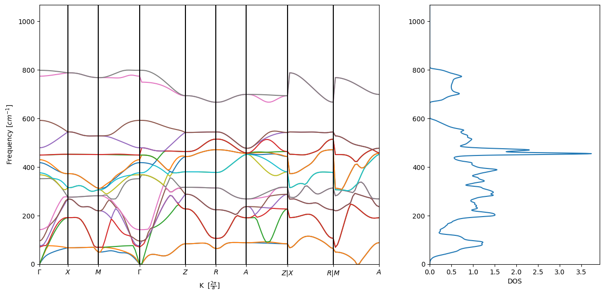
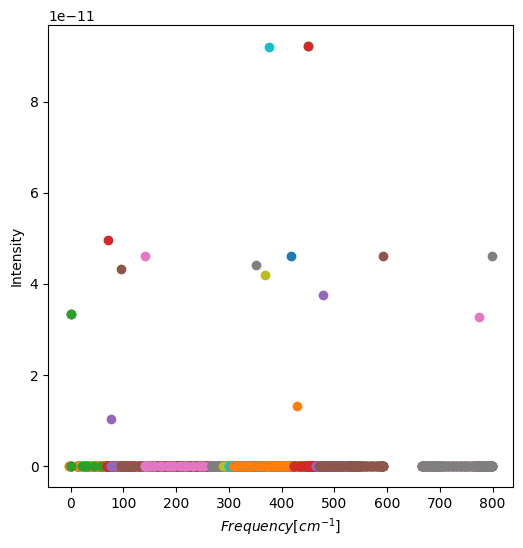
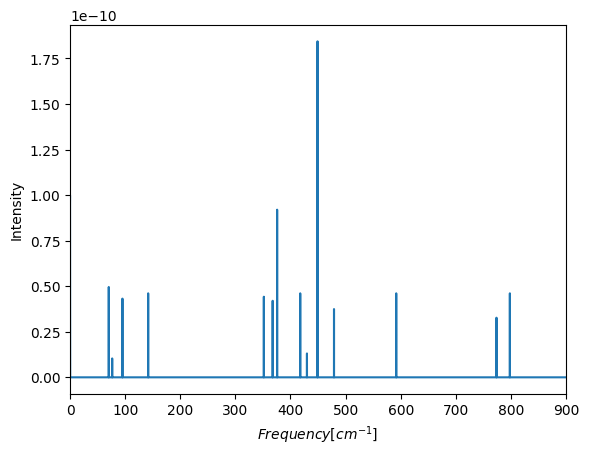
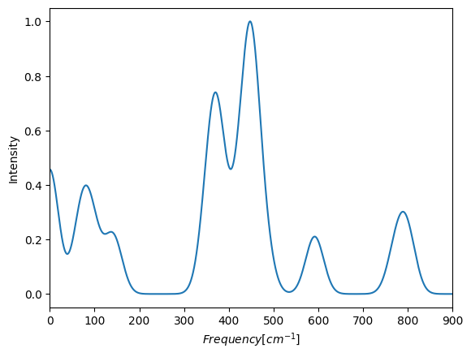
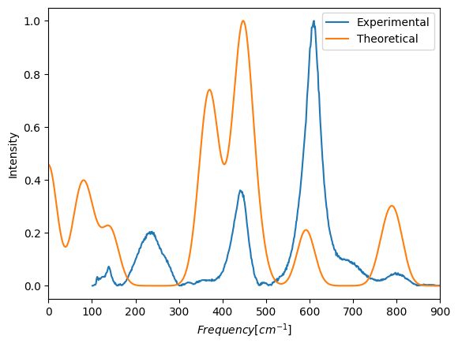
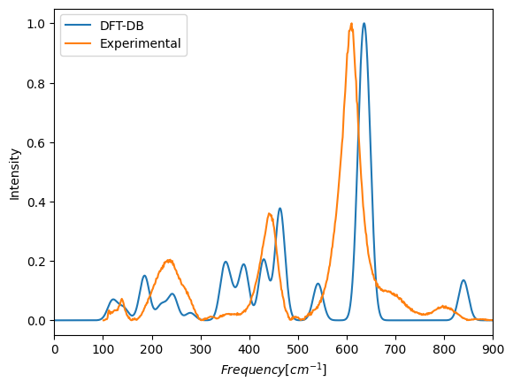
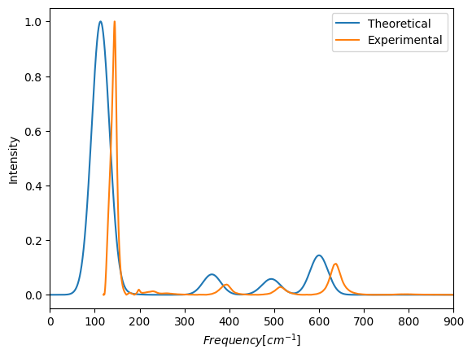

<!DOCTYPE html>


<html lang="en" >

  <head>
    <meta charset="utf-8" />
    <meta name="viewport" content="width=device-width, initial-scale=1.0" /><meta name="generator" content="Docutils 0.18.1: http://docutils.sourceforge.net/" />

    <title>L - IR and raman of solids &#8212; Interactive IR and Raman</title>
  
  
  
  <script data-cfasync="false">
    document.documentElement.dataset.mode = localStorage.getItem("mode") || "";
    document.documentElement.dataset.theme = localStorage.getItem("theme") || "light";
  </script>
  
  <!-- Loaded before other Sphinx assets -->
  <link href="../_static/styles/theme.css?digest=e353d410970836974a52" rel="stylesheet" />
<link href="../_static/styles/bootstrap.css?digest=e353d410970836974a52" rel="stylesheet" />
<link href="../_static/styles/pydata-sphinx-theme.css?digest=e353d410970836974a52" rel="stylesheet" />

  
  <link href="../_static/vendor/fontawesome/6.1.2/css/all.min.css?digest=e353d410970836974a52" rel="stylesheet" />
  <link rel="preload" as="font" type="font/woff2" crossorigin href="../_static/vendor/fontawesome/6.1.2/webfonts/fa-solid-900.woff2" />
<link rel="preload" as="font" type="font/woff2" crossorigin href="../_static/vendor/fontawesome/6.1.2/webfonts/fa-brands-400.woff2" />
<link rel="preload" as="font" type="font/woff2" crossorigin href="../_static/vendor/fontawesome/6.1.2/webfonts/fa-regular-400.woff2" />

    <link rel="stylesheet" type="text/css" href="../_static/pygments.css" />
    <link rel="stylesheet" href="../_static/styles/sphinx-book-theme.css?digest=14f4ca6b54d191a8c7657f6c759bf11a5fb86285" type="text/css" />
    <link rel="stylesheet" type="text/css" href="../_static/togglebutton.css" />
    <link rel="stylesheet" type="text/css" href="../_static/copybutton.css" />
    <link rel="stylesheet" type="text/css" href="../_static/mystnb.4510f1fc1dee50b3e5859aac5469c37c29e427902b24a333a5f9fcb2f0b3ac41.css" />
    <link rel="stylesheet" type="text/css" href="../_static/sphinx-thebe.css" />
    <link rel="stylesheet" type="text/css" href="../_static/design-style.4045f2051d55cab465a707391d5b2007.min.css" />
  
  <!-- Pre-loaded scripts that we'll load fully later -->
  <link rel="preload" as="script" href="../_static/scripts/bootstrap.js?digest=e353d410970836974a52" />
<link rel="preload" as="script" href="../_static/scripts/pydata-sphinx-theme.js?digest=e353d410970836974a52" />

    <script data-url_root="../" id="documentation_options" src="../_static/documentation_options.js"></script>
    <script src="../_static/jquery.js"></script>
    <script src="../_static/underscore.js"></script>
    <script src="../_static/_sphinx_javascript_frameworks_compat.js"></script>
    <script src="../_static/doctools.js"></script>
    <script src="../_static/clipboard.min.js"></script>
    <script src="../_static/copybutton.js"></script>
    <script src="../_static/scripts/sphinx-book-theme.js?digest=5a5c038af52cf7bc1a1ec88eea08e6366ee68824"></script>
    <script>let toggleHintShow = 'Click to show';</script>
    <script>let toggleHintHide = 'Click to hide';</script>
    <script>let toggleOpenOnPrint = 'true';</script>
    <script src="../_static/togglebutton.js"></script>
    <script src="https://cdnjs.cloudflare.com/ajax/libs/require.js/2.3.4/require.min.js"></script>
    <script>var togglebuttonSelector = '.toggle, .admonition.dropdown';</script>
    <script src="../_static/design-tabs.js"></script>
    <script>const THEBE_JS_URL = "https://unpkg.com/thebe@0.8.2/lib/index.js"
const thebe_selector = ".thebe,.cell"
const thebe_selector_input = "pre"
const thebe_selector_output = ".output, .cell_output"
</script>
    <script async="async" src="../_static/sphinx-thebe.js"></script>
    <script>window.MathJax = {"TeX": {"Macros": {"N": "\\mathbb{N}", "floor": ["\\lfloor#1\\rfloor", 1], "bmat": ["\\left[\\begin{array}"], "emat": ["\\end{array}\\right]"]}}, "options": {"processHtmlClass": "tex2jax_process|mathjax_process|math|output_area"}}</script>
    <script defer="defer" src="https://cdn.jsdelivr.net/npm/mathjax@3/es5/tex-mml-chtml.js"></script>
    <script>DOCUMENTATION_OPTIONS.pagename = 'Notebooks/page4_IR-Raman-Phonon-Dispersion';</script>
    <link rel="index" title="Index" href="../genindex.html" />
    <link rel="search" title="Search" href="../search.html" />
    <link rel="next" title="I - Phonon structure of different solids" href="page4_phonon-band%20structure.html" />
    <link rel="prev" title="A - Harmonic Oscillator - Quantum Mechanics Approach - Interactive" href="page3_5.html" />
  <meta name="viewport" content="width=device-width, initial-scale=1"/>
  <meta name="docsearch:language" content="en"/>
  </head>
  
  
  <body data-bs-spy="scroll" data-bs-target=".bd-toc-nav" data-offset="180" data-bs-root-margin="0px 0px -60%" data-default-mode="">

  
  
  <a class="skip-link" href="#main-content">Skip to main content</a>
  
  <input type="checkbox"
          class="sidebar-toggle"
          name="__primary"
          id="__primary"/>
  <label class="overlay overlay-primary" for="__primary"></label>
  
  <input type="checkbox"
          class="sidebar-toggle"
          name="__secondary"
          id="__secondary"/>
  <label class="overlay overlay-secondary" for="__secondary"></label>
  
  <div class="search-button__wrapper">
    <div class="search-button__overlay"></div>
    <div class="search-button__search-container">
<form class="bd-search d-flex align-items-center"
      action="../search.html"
      method="get">
  <i class="fa-solid fa-magnifying-glass"></i>
  <input type="search"
         class="form-control"
         name="q"
         id="search-input"
         placeholder="Search this book..."
         aria-label="Search this book..."
         autocomplete="off"
         autocorrect="off"
         autocapitalize="off"
         spellcheck="false"/>
  <span class="search-button__kbd-shortcut"><kbd class="kbd-shortcut__modifier">Ctrl</kbd>+<kbd>K</kbd></span>
</form></div>
  </div>
  
    <nav class="bd-header navbar navbar-expand-lg bd-navbar">
    </nav>
  
  <div class="bd-container">
    <div class="bd-container__inner bd-page-width">
      
      <div class="bd-sidebar-primary bd-sidebar">
        

  
  <div class="sidebar-header-items sidebar-primary__section">
    
    
    
    
  </div>
  
    <div class="sidebar-primary-items__start sidebar-primary__section">
        <div class="sidebar-primary-item">
  

<a class="navbar-brand logo" href="../inicio.html">
  
  
  
  
    
    
      
    
    
    
    <script>document.write(``);</script>
  
  
</a></div>
        <div class="sidebar-primary-item"><nav class="bd-links" id="bd-docs-nav" aria-label="Main">
    <div class="bd-toc-item navbar-nav active">
        
        <ul class="nav bd-sidenav bd-sidenav__home-link">
            <li class="toctree-l1">
                <a class="reference internal" href="../inicio.html">
                    Welcome
                </a>
            </li>
        </ul>
        <ul class="current nav bd-sidenav">
<li class="toctree-l1"><a class="reference internal" href="Basic_Notebook.html">L/A - Jupyter Notebook</a></li>


<li class="toctree-l1"><a class="reference internal" href="page1.html">L - Vibrational spectroscopy</a></li>


<li class="toctree-l1"><a class="reference internal" href="page1_5.html">I - Vibrational spectroscopy</a></li>


<li class="toctree-l1"><a class="reference internal" href="page2.html">A - Calculate your own IR and Raman Spectra</a></li>


<li class="toctree-l1"><a class="reference internal" href="page2_5.html">Simulation IR vs experimental IR</a></li>


<li class="toctree-l1"><a class="reference internal" href="page3.html">L - Harmonic Oscillator - Quantum Mechanics Approach</a></li>


<li class="toctree-l1"><a class="reference internal" href="page3_5.html">A - Harmonic Oscillator - Quantum Mechanics Approach - Interactive</a></li>
<li class="toctree-l1 current active"><a class="current reference internal" href="#">L - IR and raman of solids</a></li>


<li class="toctree-l1"><a class="reference internal" href="page4_phonon-band%20structure.html">I - Phonon structure of different solids</a></li>


<li class="toctree-l1"><a class="reference internal" href="page4_Solids_IR-Raman_3D_anim.html">A - Generation of IR and raman spectra for solids</a></li>
</ul>

    </div>
</nav></div>
    </div>
  
  
  <div class="sidebar-primary-items__end sidebar-primary__section">
  </div>
  
  <div id="rtd-footer-container"></div>


      </div>
      
      <main id="main-content" class="bd-main">
        
        

<div class="sbt-scroll-pixel-helper"></div>

          <div class="bd-content">
            <div class="bd-article-container">
              
              <div class="bd-header-article">
<div class="header-article-items header-article__inner">
  
    <div class="header-article-items__start">
      
        <div class="header-article-item"><label class="sidebar-toggle primary-toggle btn btn-sm" for="__primary" title="Toggle primary sidebar" data-bs-placement="bottom" data-bs-toggle="tooltip">
  <span class="fa-solid fa-bars"></span>
</label></div>
      
    </div>
  
  
    <div class="header-article-items__end">
      
        <div class="header-article-item">

<div class="article-header-buttons">


<div class="dropdown dropdown-launch-buttons">
  <button class="btn dropdown-toggle" type="button" data-bs-toggle="dropdown" aria-expanded="false" aria-label="Launch interactive content">
    <i class="fas fa-rocket"></i>
  </button>
  <ul class="dropdown-menu">
      
      
      
      <li><a href="https://mybinder.org/v2/gh/AntonioCd96/IR-and-Raman.git/master?urlpath=lab/tree/Notebooks/page4_IR-Raman-Phonon-Dispersion.ipynb" target="_blank"
   class="btn btn-sm dropdown-item"
   title="Launch onBinder"
   data-bs-placement="left" data-bs-toggle="tooltip"
>
  

<span class="btn__icon-container">
  
    
  </span>
<span class="btn__text-container">Binder</span>
</a>
</li>
      
      
      
      
      <li><a href="https://noto.epfl.ch/hub/user-redirect/git-pull?repo=https%3A//github.com/AntonioCd96/IR-and-Raman.git&urlpath=lab/tree/IR-and-Raman.git/Notebooks/page4_IR-Raman-Phonon-Dispersion.ipynb&branch=master" target="_blank"
   class="btn btn-sm dropdown-item"
   title="Launch onJupyterHub"
   data-bs-placement="left" data-bs-toggle="tooltip"
>
  

<span class="btn__icon-container">
  
    
  </span>
<span class="btn__text-container">JupyterHub</span>
</a>
</li>
      
      
      
      
      <li><a href="https://colab.research.google.com/github/AntonioCd96/IR-and-Raman.git/blob/master/Notebooks/page4_IR-Raman-Phonon-Dispersion.ipynb" target="_blank"
   class="btn btn-sm dropdown-item"
   title="Launch onColab"
   data-bs-placement="left" data-bs-toggle="tooltip"
>
  

<span class="btn__icon-container">
  
    
  </span>
<span class="btn__text-container">Colab</span>
</a>
</li>
      
      
      
      
      <li>
<button onclick="initThebeSBT()"
  class="btn btn-sm btn-launch-thebe dropdown-item"
  title="Launch Thebe"
  data-bs-placement="left" data-bs-toggle="tooltip"
>
  

<span class="btn__icon-container">
  <i class="fas fa-play"></i>
  </span>
<span class="btn__text-container">Live Code</span>
</button>
</li>
      
  </ul>
</div>


<div class="dropdown dropdown-source-buttons">
  <button class="btn dropdown-toggle" type="button" data-bs-toggle="dropdown" aria-expanded="false" aria-label="Source repositories">
    <i class="fab fa-github"></i>
  </button>
  <ul class="dropdown-menu">
      
      
      
      <li><a href="https://github.com/AntonioCd96/IR-and-Raman.git" target="_blank"
   class="btn btn-sm btn-source-repository-button dropdown-item"
   title="Source repository"
   data-bs-placement="left" data-bs-toggle="tooltip"
>
  

<span class="btn__icon-container">
  <i class="fab fa-github"></i>
  </span>
<span class="btn__text-container">Repository</span>
</a>
</li>
      
      
      
      
      <li><a href="https://github.com/AntonioCd96/IR-and-Raman.git/issues/new?title=Issue%20on%20page%20%2FNotebooks/page4_IR-Raman-Phonon-Dispersion.html&body=Your%20issue%20content%20here." target="_blank"
   class="btn btn-sm btn-source-issues-button dropdown-item"
   title="Open an issue"
   data-bs-placement="left" data-bs-toggle="tooltip"
>
  

<span class="btn__icon-container">
  <i class="fas fa-lightbulb"></i>
  </span>
<span class="btn__text-container">Open issue</span>
</a>
</li>
      
  </ul>
</div>


<div class="dropdown dropdown-download-buttons">
  <button class="btn dropdown-toggle" type="button" data-bs-toggle="dropdown" aria-expanded="false" aria-label="Download this page">
    <i class="fas fa-download"></i>
  </button>
  <ul class="dropdown-menu">
      
      
      
      <li><a href="../_sources/Notebooks/page4_IR-Raman-Phonon-Dispersion.ipynb" target="_blank"
   class="btn btn-sm btn-download-source-button dropdown-item"
   title="Download source file"
   data-bs-placement="left" data-bs-toggle="tooltip"
>
  

<span class="btn__icon-container">
  <i class="fas fa-file"></i>
  </span>
<span class="btn__text-container">.ipynb</span>
</a>
</li>
      
      
      
      
      <li>
<button onclick="window.print()"
  class="btn btn-sm btn-download-pdf-button dropdown-item"
  title="Print to PDF"
  data-bs-placement="left" data-bs-toggle="tooltip"
>
  

<span class="btn__icon-container">
  <i class="fas fa-file-pdf"></i>
  </span>
<span class="btn__text-container">.pdf</span>
</button>
</li>
      
  </ul>
</div>


<button onclick="toggleFullScreen()"
  class="btn btn-sm btn-fullscreen-button"
  title="Fullscreen mode"
  data-bs-placement="bottom" data-bs-toggle="tooltip"
>
  

<span class="btn__icon-container">
  <i class="fas fa-expand"></i>
  </span>

</button>


<script>
document.write(`
  <button class="theme-switch-button btn btn-sm btn-outline-primary navbar-btn rounded-circle" title="light/dark" aria-label="light/dark" data-bs-placement="bottom" data-bs-toggle="tooltip">
    <span class="theme-switch" data-mode="light"><i class="fa-solid fa-sun"></i></span>
    <span class="theme-switch" data-mode="dark"><i class="fa-solid fa-moon"></i></span>
    <span class="theme-switch" data-mode="auto"><i class="fa-solid fa-circle-half-stroke"></i></span>
  </button>
`);
</script>

<script>
document.write(`
  <button class="btn btn-sm navbar-btn search-button search-button__button" title="Search" aria-label="Search" data-bs-placement="bottom" data-bs-toggle="tooltip">
    <i class="fa-solid fa-magnifying-glass"></i>
  </button>
`);
</script>
<label class="sidebar-toggle secondary-toggle btn btn-sm" for="__secondary"title="Toggle secondary sidebar" data-bs-placement="bottom" data-bs-toggle="tooltip">
    <span class="fa-solid fa-list"></span>
</label>
</div></div>
      
    </div>
  
</div>
</div>
              
              

<div id="jb-print-docs-body" class="onlyprint">
    <h1>L - IR and raman of solids</h1>
    <!-- Table of contents -->
    <div id="print-main-content">
        <div id="jb-print-toc">
            
            <div>
                <h2> Contents </h2>
            </div>
            <nav aria-label="Page">
                <ul class="visible nav section-nav flex-column">
<li class="toc-h1 nav-item toc-entry"><a class="reference internal nav-link" href="#">L - IR and raman of solids</a></li>
<li class="toc-h1 nav-item toc-entry"><a class="reference internal nav-link" href="#example-for-tio-2-rutile">Example for <span class="math notranslate nohighlight">\(TiO_2 - rutile\)</span></a><ul class="visible nav section-nav flex-column">
<li class="toc-h2 nav-item toc-entry"><a class="reference internal nav-link" href="#now-we-are-going-to-use-the-informaiton-of-the-phonons-at-gamma-point-to-calculate-the-ir-and-raman-intesities-following-the-equation-presented-before">Now we are going to use the informaiton of the phonons at <span class="math notranslate nohighlight">\(\Gamma\)</span> point to calculate the IR and Raman intesities following the equation presented before.</a></li>
<li class="toc-h2 nav-item toc-entry"><a class="reference internal nav-link" href="#comparison-of-experimental-data-and-simulated-raman">Comparison of experimental data and simulated Raman</a></li>
</ul>
</li>
<li class="toc-h1 nav-item toc-entry"><a class="reference internal nav-link" href="#how-raman-and-ir-are-simulated-in-reality">How Raman and IR are simulated in reality?</a><ul class="visible nav section-nav flex-column">
<li class="toc-h2 nav-item toc-entry"><a class="reference internal nav-link" href="#now-lets-see-how-much-the-raman-spectra-changes-when-it-is-predicted-using-dft-theory">Now let’s see how much the Raman spectra changes when it is predicted using DFT theory</a></li>
</ul>
</li>
<li class="toc-h1 nav-item toc-entry"><a class="reference internal nav-link" href="#research-at-epfl">Research at EPFL</a></li>
</ul>

            </nav>
        </div>
    </div>
</div>

              
                
<div id="searchbox"></div>
                <article class="bd-article" role="main">
                  
  <section class="tex2jax_ignore mathjax_ignore" id="l-ir-and-raman-of-solids">
<h1>L - IR and raman of solids<a class="headerlink" href="#l-ir-and-raman-of-solids" title="Permalink to this heading">#</a></h1>
<ul class="simple">
<li><p>IR-active modes are characterized by changes in the dipole moment of the molecule during vibration. To calculate IR intensities, you can use the following formula for each mode:</p></li>
</ul>
<p><span class="math notranslate nohighlight">\(
I_{IR} \propto \sum_{i} \left| \sum_{\alpha} \mathbf{e}_{i,\alpha} \cdot \mathbf{d}_{\alpha} \right|^2 \cdot \delta(\omega - \omega_i)
\)</span></p>
<p>where <span class="math notranslate nohighlight">\(\mathbf{e}_{i,\alpha}\)</span>   is the eigenvector of mode<span class="math notranslate nohighlight">\(i\)</span> along direction <span class="math notranslate nohighlight">\(\alpha\)</span> ; <span class="math notranslate nohighlight">\(\mathbf{d}_{\alpha}\)</span>  is the unit vector for the
<span class="math notranslate nohighlight">\(e_{i, α-th}\)</span> Cartesian direction, a d <span class="math notranslate nohighlight">\(\delta(\omega-\omega_i)\)</span> is a Dirac delta function centered at the frequency <span class="math notranslate nohighlight">\(\omega_i\)</span> of the mode <span class="math notranslate nohighlight">\(i\)</span></p>
<p>The resulting values represent the intensities of IR-active modes in the calculated IR spectrum.</p>
<ul class="simple">
<li><p>On the other side, to estimate  Raman Intensities
Raman-active modes are characterized by changes in polarizability during vibration. The Raman intensity can be calculated using the following formula for each mode:</p></li>
</ul>
<p><span class="math notranslate nohighlight">\(I_{\text{Raman}} \propto \sum_{i} \left| \sum_{\alpha, \beta} \mathbf{e}_{i,\alpha} \cdot \mathbf{e}_{i,\beta} \cdot \alpha_{\alpha, \beta} \right|^2 \cdot \delta(\omega - \omega_i\)</span></p>
<p>where<span class="math notranslate nohighlight">\( \alpha_{\alpha, \beta}\)</span>   is the polarizability tensor element between directio <span class="math notranslate nohighlight">\( \)</span>
α an<span class="math notranslate nohighlight">\(d\)</span> β.</p>
<p>The resulting values represent the intensities of Raman-active modes in the calculated Raman spectrum.</p>
<div class="cell docutils container">
<div class="cell_input docutils container">
<div class="highlight-ipython3 notranslate"><div class="highlight"><pre><span></span><span class="o">!</span>pip<span class="w"> </span>install<span class="w"> </span>mp-api<span class="o">==</span><span class="m">0</span>.40.0
<span class="o">!</span>pip<span class="w"> </span>install<span class="w"> </span>mpcontribs-client
<span class="o">!</span>pip<span class="w"> </span>install<span class="w"> </span>crystal-toolkit<span class="w"> </span>--upgrade
<span class="o">!</span>pip<span class="w"> </span>install<span class="w"> </span>dash
<span class="o">!</span>pip<span class="w"> </span>install<span class="w"> </span>ipywidgets
<span class="o">!</span>pip<span class="w"> </span>install<span class="w"> </span>nglview
</pre></div>
</div>
</div>
<div class="cell_output docutils container">
<div class="output stream highlight-myst-ansi notranslate"><div class="highlight"><pre><span></span><span class=" -Color -Color-Yellow">WARNING: Ignoring invalid distribution ~ax (/home/cd96/psi4conda/envs/jbook/lib/python3.11/site-packages)</span>

</pre></div>
</div>
<div class="output stream highlight-myst-ansi notranslate"><div class="highlight"><pre><span></span><span class=" -Color -Color-Yellow">WARNING: Ignoring invalid distribution ~ax (/home/cd96/psi4conda/envs/jbook/lib/python3.11/site-packages)</span>

</pre></div>
</div>
<div class="output stream highlight-myst-ansi notranslate"><div class="highlight"><pre><span></span>Requirement already satisfied: mp-api==0.40.0 in /home/cd96/psi4conda/envs/jbook/lib/python3.11/site-packages (0.40.0)
Requirement already satisfied: setuptools in /home/cd96/psi4conda/envs/jbook/lib/python3.11/site-packages (from mp-api==0.40.0) (67.7.2)
Requirement already satisfied: msgpack in /home/cd96/psi4conda/envs/jbook/lib/python3.11/site-packages (from mp-api==0.40.0) (1.0.7)
Requirement already satisfied: maggma&gt;=0.57.1 in /home/cd96/psi4conda/envs/jbook/lib/python3.11/site-packages (from mp-api==0.40.0) (0.63.1)
Requirement already satisfied: pymatgen&gt;=2022.3.7 in /home/cd96/psi4conda/envs/jbook/lib/python3.11/site-packages (from mp-api==0.40.0) (2024.2.8)
Requirement already satisfied: typing-extensions&gt;=3.7.4.1 in /home/cd96/psi4conda/envs/jbook/lib/python3.11/site-packages (from mp-api==0.40.0) (4.9.0)
Requirement already satisfied: requests&gt;=2.23.0 in /home/cd96/psi4conda/envs/jbook/lib/python3.11/site-packages (from mp-api==0.40.0) (2.29.0)
Requirement already satisfied: monty&gt;=2023.9.25 in /home/cd96/psi4conda/envs/jbook/lib/python3.11/site-packages (from mp-api==0.40.0) (2024.2.2)
Requirement already satisfied: emmet-core&gt;=0.78.0rc3 in /home/cd96/psi4conda/envs/jbook/lib/python3.11/site-packages (from mp-api==0.40.0) (0.78.0rc3)
</pre></div>
</div>
<div class="output stream highlight-myst-ansi notranslate"><div class="highlight"><pre><span></span>Requirement already satisfied: pydantic&gt;=2.0 in /home/cd96/psi4conda/envs/jbook/lib/python3.11/site-packages (from emmet-core&gt;=0.78.0rc3-&gt;mp-api==0.40.0) (2.6.1)
Requirement already satisfied: pydantic-settings&gt;=2.0 in /home/cd96/psi4conda/envs/jbook/lib/python3.11/site-packages (from emmet-core&gt;=0.78.0rc3-&gt;mp-api==0.40.0) (2.1.0)
Requirement already satisfied: pybtex~=0.24 in /home/cd96/psi4conda/envs/jbook/lib/python3.11/site-packages (from emmet-core&gt;=0.78.0rc3-&gt;mp-api==0.40.0) (0.24.0)
Requirement already satisfied: ruamel.yaml&lt;0.18 in /home/cd96/psi4conda/envs/jbook/lib/python3.11/site-packages (from maggma&gt;=0.57.1-&gt;mp-api==0.40.0) (0.17.40)
Requirement already satisfied: pymongo&gt;=4.2.0 in /home/cd96/psi4conda/envs/jbook/lib/python3.11/site-packages (from maggma&gt;=0.57.1-&gt;mp-api==0.40.0) (4.6.1)
Requirement already satisfied: mongomock&gt;=3.10.0 in /home/cd96/psi4conda/envs/jbook/lib/python3.11/site-packages (from maggma&gt;=0.57.1-&gt;mp-api==0.40.0) (4.1.2)
Requirement already satisfied: pydash&gt;=4.1.0 in /home/cd96/psi4conda/envs/jbook/lib/python3.11/site-packages (from maggma&gt;=0.57.1-&gt;mp-api==0.40.0) (7.0.7)
Requirement already satisfied: jsonschema&gt;=3.1.1 in /home/cd96/psi4conda/envs/jbook/lib/python3.11/site-packages (from maggma&gt;=0.57.1-&gt;mp-api==0.40.0) (4.17.3)
Requirement already satisfied: tqdm&gt;=4.19.6 in /home/cd96/psi4conda/envs/jbook/lib/python3.11/site-packages (from maggma&gt;=0.57.1-&gt;mp-api==0.40.0) (4.66.2)
Requirement already satisfied: mongogrant&gt;=0.3.1 in /home/cd96/psi4conda/envs/jbook/lib/python3.11/site-packages (from maggma&gt;=0.57.1-&gt;mp-api==0.40.0) (0.3.3)
Requirement already satisfied: aioitertools&gt;=0.5.1 in /home/cd96/psi4conda/envs/jbook/lib/python3.11/site-packages (from maggma&gt;=0.57.1-&gt;mp-api==0.40.0) (0.11.0)
Requirement already satisfied: numpy&gt;=1.17.3 in /home/cd96/psi4conda/envs/jbook/lib/python3.11/site-packages (from maggma&gt;=0.57.1-&gt;mp-api==0.40.0) (1.25.2)
</pre></div>
</div>
<div class="output stream highlight-myst-ansi notranslate"><div class="highlight"><pre><span></span>Requirement already satisfied: fastapi&gt;=0.42.0 in /home/cd96/psi4conda/envs/jbook/lib/python3.11/site-packages (from maggma&gt;=0.57.1-&gt;mp-api==0.40.0) (0.109.2)
Requirement already satisfied: pyzmq&gt;=24.0.1 in /home/cd96/psi4conda/envs/jbook/lib/python3.11/site-packages (from maggma&gt;=0.57.1-&gt;mp-api==0.40.0) (25.0.2)
Requirement already satisfied: dnspython&gt;=1.16.0 in /home/cd96/psi4conda/envs/jbook/lib/python3.11/site-packages (from maggma&gt;=0.57.1-&gt;mp-api==0.40.0) (2.5.0)
Requirement already satisfied: sshtunnel&gt;=0.1.5 in /home/cd96/psi4conda/envs/jbook/lib/python3.11/site-packages (from maggma&gt;=0.57.1-&gt;mp-api==0.40.0) (0.4.0)
Requirement already satisfied: orjson&gt;=3.9.0 in /home/cd96/psi4conda/envs/jbook/lib/python3.11/site-packages (from maggma&gt;=0.57.1-&gt;mp-api==0.40.0) (3.9.14)
Requirement already satisfied: boto3&gt;=1.20.41 in /home/cd96/psi4conda/envs/jbook/lib/python3.11/site-packages (from maggma&gt;=0.57.1-&gt;mp-api==0.40.0) (1.34.43)
Requirement already satisfied: python-dateutil&gt;=2.8.2 in /home/cd96/psi4conda/envs/jbook/lib/python3.11/site-packages (from maggma&gt;=0.57.1-&gt;mp-api==0.40.0) (2.8.2)
Requirement already satisfied: uvicorn&gt;=0.18.3 in /home/cd96/psi4conda/envs/jbook/lib/python3.11/site-packages (from maggma&gt;=0.57.1-&gt;mp-api==0.40.0) (0.27.1)
Requirement already satisfied: matplotlib&gt;=1.5 in /home/cd96/psi4conda/envs/jbook/lib/python3.11/site-packages (from pymatgen&gt;=2022.3.7-&gt;mp-api==0.40.0) (3.7.1)
Requirement already satisfied: networkx&gt;=2.2 in /home/cd96/psi4conda/envs/jbook/lib/python3.11/site-packages (from pymatgen&gt;=2022.3.7-&gt;mp-api==0.40.0) (3.2.1)
Requirement already satisfied: palettable&gt;=3.1.1 in /home/cd96/psi4conda/envs/jbook/lib/python3.11/site-packages (from pymatgen&gt;=2022.3.7-&gt;mp-api==0.40.0) (3.3.3)
Requirement already satisfied: pandas in /home/cd96/psi4conda/envs/jbook/lib/python3.11/site-packages (from pymatgen&gt;=2022.3.7-&gt;mp-api==0.40.0) (2.0.1)
Requirement already satisfied: plotly&gt;=4.5.0 in /home/cd96/psi4conda/envs/jbook/lib/python3.11/site-packages (from pymatgen&gt;=2022.3.7-&gt;mp-api==0.40.0) (5.14.1)
</pre></div>
</div>
<div class="output stream highlight-myst-ansi notranslate"><div class="highlight"><pre><span></span>Requirement already satisfied: scipy&gt;=1.5.0 in /home/cd96/psi4conda/envs/jbook/lib/python3.11/site-packages (from pymatgen&gt;=2022.3.7-&gt;mp-api==0.40.0) (1.9.2)
Requirement already satisfied: spglib&gt;=2.0.2 in /home/cd96/psi4conda/envs/jbook/lib/python3.11/site-packages (from pymatgen&gt;=2022.3.7-&gt;mp-api==0.40.0) (2.3.1)
Requirement already satisfied: sympy in /home/cd96/psi4conda/envs/jbook/lib/python3.11/site-packages (from pymatgen&gt;=2022.3.7-&gt;mp-api==0.40.0) (1.12)
Requirement already satisfied: tabulate in /home/cd96/psi4conda/envs/jbook/lib/python3.11/site-packages (from pymatgen&gt;=2022.3.7-&gt;mp-api==0.40.0) (0.9.0)
Requirement already satisfied: uncertainties&gt;=3.1.4 in /home/cd96/psi4conda/envs/jbook/lib/python3.11/site-packages (from pymatgen&gt;=2022.3.7-&gt;mp-api==0.40.0) (3.1.7)
Requirement already satisfied: joblib in /home/cd96/psi4conda/envs/jbook/lib/python3.11/site-packages (from pymatgen&gt;=2022.3.7-&gt;mp-api==0.40.0) (1.3.2)
Requirement already satisfied: charset-normalizer&lt;4,&gt;=2 in /home/cd96/psi4conda/envs/jbook/lib/python3.11/site-packages (from requests&gt;=2.23.0-&gt;mp-api==0.40.0) (3.1.0)
Requirement already satisfied: idna&lt;4,&gt;=2.5 in /home/cd96/psi4conda/envs/jbook/lib/python3.11/site-packages (from requests&gt;=2.23.0-&gt;mp-api==0.40.0) (3.4)
Requirement already satisfied: urllib3&lt;1.27,&gt;=1.21.1 in /home/cd96/psi4conda/envs/jbook/lib/python3.11/site-packages (from requests&gt;=2.23.0-&gt;mp-api==0.40.0) (1.26.15)
Requirement already satisfied: certifi&gt;=2017.4.17 in /home/cd96/psi4conda/envs/jbook/lib/python3.11/site-packages (from requests&gt;=2.23.0-&gt;mp-api==0.40.0) (2023.7.22)
</pre></div>
</div>
<div class="output stream highlight-myst-ansi notranslate"><div class="highlight"><pre><span></span>Requirement already satisfied: botocore&lt;1.35.0,&gt;=1.34.43 in /home/cd96/psi4conda/envs/jbook/lib/python3.11/site-packages (from boto3&gt;=1.20.41-&gt;maggma&gt;=0.57.1-&gt;mp-api==0.40.0) (1.34.43)
Requirement already satisfied: jmespath&lt;2.0.0,&gt;=0.7.1 in /home/cd96/psi4conda/envs/jbook/lib/python3.11/site-packages (from boto3&gt;=1.20.41-&gt;maggma&gt;=0.57.1-&gt;mp-api==0.40.0) (1.0.1)
Requirement already satisfied: s3transfer&lt;0.11.0,&gt;=0.10.0 in /home/cd96/psi4conda/envs/jbook/lib/python3.11/site-packages (from boto3&gt;=1.20.41-&gt;maggma&gt;=0.57.1-&gt;mp-api==0.40.0) (0.10.0)
Requirement already satisfied: starlette&lt;0.37.0,&gt;=0.36.3 in /home/cd96/psi4conda/envs/jbook/lib/python3.11/site-packages (from fastapi&gt;=0.42.0-&gt;maggma&gt;=0.57.1-&gt;mp-api==0.40.0) (0.36.3)
</pre></div>
</div>
<div class="output stream highlight-myst-ansi notranslate"><div class="highlight"><pre><span></span>Requirement already satisfied: attrs&gt;=17.4.0 in /home/cd96/psi4conda/envs/jbook/lib/python3.11/site-packages (from jsonschema&gt;=3.1.1-&gt;maggma&gt;=0.57.1-&gt;mp-api==0.40.0) (23.1.0)
Requirement already satisfied: pyrsistent!=0.17.0,!=0.17.1,!=0.17.2,&gt;=0.14.0 in /home/cd96/psi4conda/envs/jbook/lib/python3.11/site-packages (from jsonschema&gt;=3.1.1-&gt;maggma&gt;=0.57.1-&gt;mp-api==0.40.0) (0.19.3)
Requirement already satisfied: contourpy&gt;=1.0.1 in /home/cd96/psi4conda/envs/jbook/lib/python3.11/site-packages (from matplotlib&gt;=1.5-&gt;pymatgen&gt;=2022.3.7-&gt;mp-api==0.40.0) (1.0.7)
Requirement already satisfied: cycler&gt;=0.10 in /home/cd96/psi4conda/envs/jbook/lib/python3.11/site-packages (from matplotlib&gt;=1.5-&gt;pymatgen&gt;=2022.3.7-&gt;mp-api==0.40.0) (0.11.0)
Requirement already satisfied: fonttools&gt;=4.22.0 in /home/cd96/psi4conda/envs/jbook/lib/python3.11/site-packages (from matplotlib&gt;=1.5-&gt;pymatgen&gt;=2022.3.7-&gt;mp-api==0.40.0) (4.39.4)
Requirement already satisfied: kiwisolver&gt;=1.0.1 in /home/cd96/psi4conda/envs/jbook/lib/python3.11/site-packages (from matplotlib&gt;=1.5-&gt;pymatgen&gt;=2022.3.7-&gt;mp-api==0.40.0) (1.4.4)
Requirement already satisfied: packaging&gt;=20.0 in /home/cd96/psi4conda/envs/jbook/lib/python3.11/site-packages (from matplotlib&gt;=1.5-&gt;pymatgen&gt;=2022.3.7-&gt;mp-api==0.40.0) (23.1)
Requirement already satisfied: pillow&gt;=6.2.0 in /home/cd96/psi4conda/envs/jbook/lib/python3.11/site-packages (from matplotlib&gt;=1.5-&gt;pymatgen&gt;=2022.3.7-&gt;mp-api==0.40.0) (9.5.0)
Requirement already satisfied: pyparsing&gt;=2.3.1 in /home/cd96/psi4conda/envs/jbook/lib/python3.11/site-packages (from matplotlib&gt;=1.5-&gt;pymatgen&gt;=2022.3.7-&gt;mp-api==0.40.0) (3.0.9)
Requirement already satisfied: Click in /home/cd96/psi4conda/envs/jbook/lib/python3.11/site-packages (from mongogrant&gt;=0.3.1-&gt;maggma&gt;=0.57.1-&gt;mp-api==0.40.0) (8.1.3)
Requirement already satisfied: Flask&gt;=1.0 in /home/cd96/psi4conda/envs/jbook/lib/python3.11/site-packages (from mongogrant&gt;=0.3.1-&gt;maggma&gt;=0.57.1-&gt;mp-api==0.40.0) (3.0.2)
Requirement already satisfied: sentinels in /home/cd96/psi4conda/envs/jbook/lib/python3.11/site-packages (from mongomock&gt;=3.10.0-&gt;maggma&gt;=0.57.1-&gt;mp-api==0.40.0) (1.0.0)
</pre></div>
</div>
<div class="output stream highlight-myst-ansi notranslate"><div class="highlight"><pre><span></span>Requirement already satisfied: tenacity&gt;=6.2.0 in /home/cd96/psi4conda/envs/jbook/lib/python3.11/site-packages (from plotly&gt;=4.5.0-&gt;pymatgen&gt;=2022.3.7-&gt;mp-api==0.40.0) (8.2.2)
Requirement already satisfied: PyYAML&gt;=3.01 in /home/cd96/psi4conda/envs/jbook/lib/python3.11/site-packages (from pybtex~=0.24-&gt;emmet-core&gt;=0.78.0rc3-&gt;mp-api==0.40.0) (6.0)
Requirement already satisfied: latexcodec&gt;=1.0.4 in /home/cd96/psi4conda/envs/jbook/lib/python3.11/site-packages (from pybtex~=0.24-&gt;emmet-core&gt;=0.78.0rc3-&gt;mp-api==0.40.0) (2.0.1)
Requirement already satisfied: six in /home/cd96/psi4conda/envs/jbook/lib/python3.11/site-packages (from pybtex~=0.24-&gt;emmet-core&gt;=0.78.0rc3-&gt;mp-api==0.40.0) (1.16.0)
Requirement already satisfied: annotated-types&gt;=0.4.0 in /home/cd96/psi4conda/envs/jbook/lib/python3.11/site-packages (from pydantic&gt;=2.0-&gt;emmet-core&gt;=0.78.0rc3-&gt;mp-api==0.40.0) (0.6.0)
Requirement already satisfied: pydantic-core==2.16.2 in /home/cd96/psi4conda/envs/jbook/lib/python3.11/site-packages (from pydantic&gt;=2.0-&gt;emmet-core&gt;=0.78.0rc3-&gt;mp-api==0.40.0) (2.16.2)
Requirement already satisfied: python-dotenv&gt;=0.21.0 in /home/cd96/psi4conda/envs/jbook/lib/python3.11/site-packages (from pydantic-settings&gt;=2.0-&gt;emmet-core&gt;=0.78.0rc3-&gt;mp-api==0.40.0) (1.0.1)
</pre></div>
</div>
<div class="output stream highlight-myst-ansi notranslate"><div class="highlight"><pre><span></span>Requirement already satisfied: ruamel.yaml.clib&gt;=0.2.7 in /home/cd96/psi4conda/envs/jbook/lib/python3.11/site-packages (from ruamel.yaml&lt;0.18-&gt;maggma&gt;=0.57.1-&gt;mp-api==0.40.0) (0.2.8)
</pre></div>
</div>
<div class="output stream highlight-myst-ansi notranslate"><div class="highlight"><pre><span></span>Requirement already satisfied: paramiko&gt;=2.7.2 in /home/cd96/psi4conda/envs/jbook/lib/python3.11/site-packages (from sshtunnel&gt;=0.1.5-&gt;maggma&gt;=0.57.1-&gt;mp-api==0.40.0) (3.4.0)
Requirement already satisfied: future in /home/cd96/psi4conda/envs/jbook/lib/python3.11/site-packages (from uncertainties&gt;=3.1.4-&gt;pymatgen&gt;=2022.3.7-&gt;mp-api==0.40.0) (0.18.3)
</pre></div>
</div>
<div class="output stream highlight-myst-ansi notranslate"><div class="highlight"><pre><span></span>Requirement already satisfied: h11&gt;=0.8 in /home/cd96/psi4conda/envs/jbook/lib/python3.11/site-packages (from uvicorn&gt;=0.18.3-&gt;maggma&gt;=0.57.1-&gt;mp-api==0.40.0) (0.14.0)
</pre></div>
</div>
<div class="output stream highlight-myst-ansi notranslate"><div class="highlight"><pre><span></span>Requirement already satisfied: pytz&gt;=2020.1 in /home/cd96/psi4conda/envs/jbook/lib/python3.11/site-packages (from pandas-&gt;pymatgen&gt;=2022.3.7-&gt;mp-api==0.40.0) (2023.3)
Requirement already satisfied: tzdata&gt;=2022.1 in /home/cd96/psi4conda/envs/jbook/lib/python3.11/site-packages (from pandas-&gt;pymatgen&gt;=2022.3.7-&gt;mp-api==0.40.0) (2023.3)
Requirement already satisfied: mpmath&gt;=0.19 in /home/cd96/psi4conda/envs/jbook/lib/python3.11/site-packages (from sympy-&gt;pymatgen&gt;=2022.3.7-&gt;mp-api==0.40.0) (1.3.0)
</pre></div>
</div>
<div class="output stream highlight-myst-ansi notranslate"><div class="highlight"><pre><span></span>Requirement already satisfied: Werkzeug&gt;=3.0.0 in /home/cd96/psi4conda/envs/jbook/lib/python3.11/site-packages (from Flask&gt;=1.0-&gt;mongogrant&gt;=0.3.1-&gt;maggma&gt;=0.57.1-&gt;mp-api==0.40.0) (3.0.1)
Requirement already satisfied: Jinja2&gt;=3.1.2 in /home/cd96/psi4conda/envs/jbook/lib/python3.11/site-packages (from Flask&gt;=1.0-&gt;mongogrant&gt;=0.3.1-&gt;maggma&gt;=0.57.1-&gt;mp-api==0.40.0) (3.1.2)
Requirement already satisfied: itsdangerous&gt;=2.1.2 in /home/cd96/psi4conda/envs/jbook/lib/python3.11/site-packages (from Flask&gt;=1.0-&gt;mongogrant&gt;=0.3.1-&gt;maggma&gt;=0.57.1-&gt;mp-api==0.40.0) (2.1.2)
Requirement already satisfied: blinker&gt;=1.6.2 in /home/cd96/psi4conda/envs/jbook/lib/python3.11/site-packages (from Flask&gt;=1.0-&gt;mongogrant&gt;=0.3.1-&gt;maggma&gt;=0.57.1-&gt;mp-api==0.40.0) (1.7.0)
</pre></div>
</div>
<div class="output stream highlight-myst-ansi notranslate"><div class="highlight"><pre><span></span>Requirement already satisfied: bcrypt&gt;=3.2 in /home/cd96/psi4conda/envs/jbook/lib/python3.11/site-packages (from paramiko&gt;=2.7.2-&gt;sshtunnel&gt;=0.1.5-&gt;maggma&gt;=0.57.1-&gt;mp-api==0.40.0) (4.1.2)
Requirement already satisfied: cryptography&gt;=3.3 in /home/cd96/psi4conda/envs/jbook/lib/python3.11/site-packages (from paramiko&gt;=2.7.2-&gt;sshtunnel&gt;=0.1.5-&gt;maggma&gt;=0.57.1-&gt;mp-api==0.40.0) (40.0.2)
Requirement already satisfied: pynacl&gt;=1.5 in /home/cd96/psi4conda/envs/jbook/lib/python3.11/site-packages (from paramiko&gt;=2.7.2-&gt;sshtunnel&gt;=0.1.5-&gt;maggma&gt;=0.57.1-&gt;mp-api==0.40.0) (1.5.0)
</pre></div>
</div>
<div class="output stream highlight-myst-ansi notranslate"><div class="highlight"><pre><span></span>Requirement already satisfied: anyio&lt;5,&gt;=3.4.0 in /home/cd96/psi4conda/envs/jbook/lib/python3.11/site-packages (from starlette&lt;0.37.0,&gt;=0.36.3-&gt;fastapi&gt;=0.42.0-&gt;maggma&gt;=0.57.1-&gt;mp-api==0.40.0) (3.6.2)
</pre></div>
</div>
<div class="output stream highlight-myst-ansi notranslate"><div class="highlight"><pre><span></span>Requirement already satisfied: sniffio&gt;=1.1 in /home/cd96/psi4conda/envs/jbook/lib/python3.11/site-packages (from anyio&lt;5,&gt;=3.4.0-&gt;starlette&lt;0.37.0,&gt;=0.36.3-&gt;fastapi&gt;=0.42.0-&gt;maggma&gt;=0.57.1-&gt;mp-api==0.40.0) (1.3.0)
</pre></div>
</div>
<div class="output stream highlight-myst-ansi notranslate"><div class="highlight"><pre><span></span>Requirement already satisfied: cffi&gt;=1.12 in /home/cd96/psi4conda/envs/jbook/lib/python3.11/site-packages (from cryptography&gt;=3.3-&gt;paramiko&gt;=2.7.2-&gt;sshtunnel&gt;=0.1.5-&gt;maggma&gt;=0.57.1-&gt;mp-api==0.40.0) (1.15.1)
Requirement already satisfied: MarkupSafe&gt;=2.0 in /home/cd96/psi4conda/envs/jbook/lib/python3.11/site-packages (from Jinja2&gt;=3.1.2-&gt;Flask&gt;=1.0-&gt;mongogrant&gt;=0.3.1-&gt;maggma&gt;=0.57.1-&gt;mp-api==0.40.0) (2.1.2)
Requirement already satisfied: pycparser in /home/cd96/psi4conda/envs/jbook/lib/python3.11/site-packages (from cffi&gt;=1.12-&gt;cryptography&gt;=3.3-&gt;paramiko&gt;=2.7.2-&gt;sshtunnel&gt;=0.1.5-&gt;maggma&gt;=0.57.1-&gt;mp-api==0.40.0) (2.21)
</pre></div>
</div>
<div class="output stream highlight-myst-ansi notranslate"><div class="highlight"><pre><span></span><span class=" -Color -Color-Yellow">WARNING: Ignoring invalid distribution ~ax (/home/cd96/psi4conda/envs/jbook/lib/python3.11/site-packages)</span>

</pre></div>
</div>
<div class="output stream highlight-myst-ansi notranslate"><div class="highlight"><pre><span></span><span class=" -Color -Color-Yellow">WARNING: Ignoring invalid distribution ~ax (/home/cd96/psi4conda/envs/jbook/lib/python3.11/site-packages)</span>

</pre></div>
</div>
<div class="output stream highlight-myst-ansi notranslate"><div class="highlight"><pre><span></span><span class=" -Color -Color-Yellow">WARNING: Ignoring invalid distribution ~ax (/home/cd96/psi4conda/envs/jbook/lib/python3.11/site-packages)</span>
<span class=" -Color -Color-Yellow">WARNING: Ignoring invalid distribution ~ax (/home/cd96/psi4conda/envs/jbook/lib/python3.11/site-packages)</span>

</pre></div>
</div>
<div class="output stream highlight-myst-ansi notranslate"><div class="highlight"><pre><span></span><span class=" -Color -Color-Yellow">WARNING: Ignoring invalid distribution ~ax (/home/cd96/psi4conda/envs/jbook/lib/python3.11/site-packages)</span>

</pre></div>
</div>
<div class="output stream highlight-myst-ansi notranslate"><div class="highlight"><pre><span></span><span class=" -Color -Color-Yellow">WARNING: Ignoring invalid distribution ~ax (/home/cd96/psi4conda/envs/jbook/lib/python3.11/site-packages)</span>
Requirement already satisfied: mpcontribs-client in /home/cd96/psi4conda/envs/jbook/lib/python3.11/site-packages (5.7.0)
</pre></div>
</div>
<div class="output stream highlight-myst-ansi notranslate"><div class="highlight"><pre><span></span>Requirement already satisfied: boltons in /home/cd96/psi4conda/envs/jbook/lib/python3.11/site-packages (from mpcontribs-client) (23.1.1)
Requirement already satisfied: bravado in /home/cd96/psi4conda/envs/jbook/lib/python3.11/site-packages (from mpcontribs-client) (11.0.3)
Requirement already satisfied: filetype in /home/cd96/psi4conda/envs/jbook/lib/python3.11/site-packages (from mpcontribs-client) (1.2.0)
Requirement already satisfied: flatten-dict in /home/cd96/psi4conda/envs/jbook/lib/python3.11/site-packages (from mpcontribs-client) (0.4.2)
Requirement already satisfied: ipython in /home/cd96/psi4conda/envs/jbook/lib/python3.11/site-packages (from mpcontribs-client) (8.13.2)
Requirement already satisfied: json2html in /home/cd96/psi4conda/envs/jbook/lib/python3.11/site-packages (from mpcontribs-client) (1.3.0)
Requirement already satisfied: pandas in /home/cd96/psi4conda/envs/jbook/lib/python3.11/site-packages (from mpcontribs-client) (2.0.1)
Requirement already satisfied: pint&lt;0.20 in /home/cd96/psi4conda/envs/jbook/lib/python3.11/site-packages (from mpcontribs-client) (0.19.2)
Requirement already satisfied: plotly in /home/cd96/psi4conda/envs/jbook/lib/python3.11/site-packages (from mpcontribs-client) (5.14.1)
Requirement already satisfied: pyIsEmail in /home/cd96/psi4conda/envs/jbook/lib/python3.11/site-packages (from mpcontribs-client) (2.0.1)
Requirement already satisfied: pymatgen in /home/cd96/psi4conda/envs/jbook/lib/python3.11/site-packages (from mpcontribs-client) (2024.2.8)
Requirement already satisfied: pymongo in /home/cd96/psi4conda/envs/jbook/lib/python3.11/site-packages (from mpcontribs-client) (4.6.1)
Requirement already satisfied: requests-futures in /home/cd96/psi4conda/envs/jbook/lib/python3.11/site-packages (from mpcontribs-client) (1.0.1)
Requirement already satisfied: swagger-spec-validator in /home/cd96/psi4conda/envs/jbook/lib/python3.11/site-packages (from mpcontribs-client) (3.0.3)
Requirement already satisfied: tqdm in /home/cd96/psi4conda/envs/jbook/lib/python3.11/site-packages (from mpcontribs-client) (4.66.2)
Requirement already satisfied: ujson in /home/cd96/psi4conda/envs/jbook/lib/python3.11/site-packages (from mpcontribs-client) (5.9.0)
Requirement already satisfied: semantic-version in /home/cd96/psi4conda/envs/jbook/lib/python3.11/site-packages (from mpcontribs-client) (2.10.0)
Requirement already satisfied: cachetools in /home/cd96/psi4conda/envs/jbook/lib/python3.11/site-packages (from mpcontribs-client) (5.3.2)
Requirement already satisfied: bravado-core&gt;=5.16.1 in /home/cd96/psi4conda/envs/jbook/lib/python3.11/site-packages (from bravado-&gt;mpcontribs-client) (6.1.1)
Requirement already satisfied: msgpack in /home/cd96/psi4conda/envs/jbook/lib/python3.11/site-packages (from bravado-&gt;mpcontribs-client) (1.0.7)
Requirement already satisfied: python-dateutil in /home/cd96/psi4conda/envs/jbook/lib/python3.11/site-packages (from bravado-&gt;mpcontribs-client) (2.8.2)
Requirement already satisfied: pyyaml in /home/cd96/psi4conda/envs/jbook/lib/python3.11/site-packages (from bravado-&gt;mpcontribs-client) (6.0)
Requirement already satisfied: requests&gt;=2.17 in /home/cd96/psi4conda/envs/jbook/lib/python3.11/site-packages (from bravado-&gt;mpcontribs-client) (2.29.0)
Requirement already satisfied: six in /home/cd96/psi4conda/envs/jbook/lib/python3.11/site-packages (from bravado-&gt;mpcontribs-client) (1.16.0)
Requirement already satisfied: simplejson in /home/cd96/psi4conda/envs/jbook/lib/python3.11/site-packages (from bravado-&gt;mpcontribs-client) (3.19.2)
Requirement already satisfied: monotonic in /home/cd96/psi4conda/envs/jbook/lib/python3.11/site-packages (from bravado-&gt;mpcontribs-client) (1.6)
Requirement already satisfied: typing-extensions in /home/cd96/psi4conda/envs/jbook/lib/python3.11/site-packages (from bravado-&gt;mpcontribs-client) (4.9.0)
</pre></div>
</div>
<div class="output stream highlight-myst-ansi notranslate"><div class="highlight"><pre><span></span>Requirement already satisfied: backcall in /home/cd96/psi4conda/envs/jbook/lib/python3.11/site-packages (from ipython-&gt;mpcontribs-client) (0.2.0)
Requirement already satisfied: decorator in /home/cd96/psi4conda/envs/jbook/lib/python3.11/site-packages (from ipython-&gt;mpcontribs-client) (5.1.1)
Requirement already satisfied: jedi&gt;=0.16 in /home/cd96/psi4conda/envs/jbook/lib/python3.11/site-packages (from ipython-&gt;mpcontribs-client) (0.18.2)
Requirement already satisfied: matplotlib-inline in /home/cd96/psi4conda/envs/jbook/lib/python3.11/site-packages (from ipython-&gt;mpcontribs-client) (0.1.6)
Requirement already satisfied: pickleshare in /home/cd96/psi4conda/envs/jbook/lib/python3.11/site-packages (from ipython-&gt;mpcontribs-client) (0.7.5)
Requirement already satisfied: prompt-toolkit!=3.0.37,&lt;3.1.0,&gt;=3.0.30 in /home/cd96/psi4conda/envs/jbook/lib/python3.11/site-packages (from ipython-&gt;mpcontribs-client) (3.0.38)
Requirement already satisfied: pygments&gt;=2.4.0 in /home/cd96/psi4conda/envs/jbook/lib/python3.11/site-packages (from ipython-&gt;mpcontribs-client) (2.15.1)
Requirement already satisfied: stack-data in /home/cd96/psi4conda/envs/jbook/lib/python3.11/site-packages (from ipython-&gt;mpcontribs-client) (0.6.2)
Requirement already satisfied: traitlets&gt;=5 in /home/cd96/psi4conda/envs/jbook/lib/python3.11/site-packages (from ipython-&gt;mpcontribs-client) (5.9.0)
Requirement already satisfied: pexpect&gt;4.3 in /home/cd96/psi4conda/envs/jbook/lib/python3.11/site-packages (from ipython-&gt;mpcontribs-client) (4.8.0)
</pre></div>
</div>
<div class="output stream highlight-myst-ansi notranslate"><div class="highlight"><pre><span></span>Requirement already satisfied: pytz&gt;=2020.1 in /home/cd96/psi4conda/envs/jbook/lib/python3.11/site-packages (from pandas-&gt;mpcontribs-client) (2023.3)
Requirement already satisfied: tzdata&gt;=2022.1 in /home/cd96/psi4conda/envs/jbook/lib/python3.11/site-packages (from pandas-&gt;mpcontribs-client) (2023.3)
Requirement already satisfied: numpy&gt;=1.21.0 in /home/cd96/psi4conda/envs/jbook/lib/python3.11/site-packages (from pandas-&gt;mpcontribs-client) (1.25.2)
Requirement already satisfied: tenacity&gt;=6.2.0 in /home/cd96/psi4conda/envs/jbook/lib/python3.11/site-packages (from plotly-&gt;mpcontribs-client) (8.2.2)
Requirement already satisfied: packaging in /home/cd96/psi4conda/envs/jbook/lib/python3.11/site-packages (from plotly-&gt;mpcontribs-client) (23.1)
Requirement already satisfied: dnspython&gt;=2.0.0 in /home/cd96/psi4conda/envs/jbook/lib/python3.11/site-packages (from pyIsEmail-&gt;mpcontribs-client) (2.5.0)
</pre></div>
</div>
<div class="output stream highlight-myst-ansi notranslate"><div class="highlight"><pre><span></span>Requirement already satisfied: matplotlib&gt;=1.5 in /home/cd96/psi4conda/envs/jbook/lib/python3.11/site-packages (from pymatgen-&gt;mpcontribs-client) (3.7.1)
Requirement already satisfied: monty&gt;=2024.2.2 in /home/cd96/psi4conda/envs/jbook/lib/python3.11/site-packages (from pymatgen-&gt;mpcontribs-client) (2024.2.2)
Requirement already satisfied: networkx&gt;=2.2 in /home/cd96/psi4conda/envs/jbook/lib/python3.11/site-packages (from pymatgen-&gt;mpcontribs-client) (3.2.1)
Requirement already satisfied: palettable&gt;=3.1.1 in /home/cd96/psi4conda/envs/jbook/lib/python3.11/site-packages (from pymatgen-&gt;mpcontribs-client) (3.3.3)
Requirement already satisfied: pybtex in /home/cd96/psi4conda/envs/jbook/lib/python3.11/site-packages (from pymatgen-&gt;mpcontribs-client) (0.24.0)
Requirement already satisfied: ruamel.yaml&gt;=0.17.0 in /home/cd96/psi4conda/envs/jbook/lib/python3.11/site-packages (from pymatgen-&gt;mpcontribs-client) (0.17.40)
Requirement already satisfied: scipy&gt;=1.5.0 in /home/cd96/psi4conda/envs/jbook/lib/python3.11/site-packages (from pymatgen-&gt;mpcontribs-client) (1.9.2)
Requirement already satisfied: spglib&gt;=2.0.2 in /home/cd96/psi4conda/envs/jbook/lib/python3.11/site-packages (from pymatgen-&gt;mpcontribs-client) (2.3.1)
Requirement already satisfied: sympy in /home/cd96/psi4conda/envs/jbook/lib/python3.11/site-packages (from pymatgen-&gt;mpcontribs-client) (1.12)
Requirement already satisfied: tabulate in /home/cd96/psi4conda/envs/jbook/lib/python3.11/site-packages (from pymatgen-&gt;mpcontribs-client) (0.9.0)
Requirement already satisfied: uncertainties&gt;=3.1.4 in /home/cd96/psi4conda/envs/jbook/lib/python3.11/site-packages (from pymatgen-&gt;mpcontribs-client) (3.1.7)
Requirement already satisfied: joblib in /home/cd96/psi4conda/envs/jbook/lib/python3.11/site-packages (from pymatgen-&gt;mpcontribs-client) (1.3.2)
</pre></div>
</div>
<div class="output stream highlight-myst-ansi notranslate"><div class="highlight"><pre><span></span>Requirement already satisfied: jsonschema in /home/cd96/psi4conda/envs/jbook/lib/python3.11/site-packages (from swagger-spec-validator-&gt;mpcontribs-client) (4.17.3)
Requirement already satisfied: jsonref in /home/cd96/psi4conda/envs/jbook/lib/python3.11/site-packages (from bravado-core&gt;=5.16.1-&gt;bravado-&gt;mpcontribs-client) (1.1.0)
</pre></div>
</div>
<div class="output stream highlight-myst-ansi notranslate"><div class="highlight"><pre><span></span>Requirement already satisfied: parso&lt;0.9.0,&gt;=0.8.0 in /home/cd96/psi4conda/envs/jbook/lib/python3.11/site-packages (from jedi&gt;=0.16-&gt;ipython-&gt;mpcontribs-client) (0.8.3)
Requirement already satisfied: attrs&gt;=17.4.0 in /home/cd96/psi4conda/envs/jbook/lib/python3.11/site-packages (from jsonschema-&gt;swagger-spec-validator-&gt;mpcontribs-client) (23.1.0)
Requirement already satisfied: pyrsistent!=0.17.0,!=0.17.1,!=0.17.2,&gt;=0.14.0 in /home/cd96/psi4conda/envs/jbook/lib/python3.11/site-packages (from jsonschema-&gt;swagger-spec-validator-&gt;mpcontribs-client) (0.19.3)
Requirement already satisfied: contourpy&gt;=1.0.1 in /home/cd96/psi4conda/envs/jbook/lib/python3.11/site-packages (from matplotlib&gt;=1.5-&gt;pymatgen-&gt;mpcontribs-client) (1.0.7)
Requirement already satisfied: cycler&gt;=0.10 in /home/cd96/psi4conda/envs/jbook/lib/python3.11/site-packages (from matplotlib&gt;=1.5-&gt;pymatgen-&gt;mpcontribs-client) (0.11.0)
Requirement already satisfied: fonttools&gt;=4.22.0 in /home/cd96/psi4conda/envs/jbook/lib/python3.11/site-packages (from matplotlib&gt;=1.5-&gt;pymatgen-&gt;mpcontribs-client) (4.39.4)
Requirement already satisfied: kiwisolver&gt;=1.0.1 in /home/cd96/psi4conda/envs/jbook/lib/python3.11/site-packages (from matplotlib&gt;=1.5-&gt;pymatgen-&gt;mpcontribs-client) (1.4.4)
Requirement already satisfied: pillow&gt;=6.2.0 in /home/cd96/psi4conda/envs/jbook/lib/python3.11/site-packages (from matplotlib&gt;=1.5-&gt;pymatgen-&gt;mpcontribs-client) (9.5.0)
Requirement already satisfied: pyparsing&gt;=2.3.1 in /home/cd96/psi4conda/envs/jbook/lib/python3.11/site-packages (from matplotlib&gt;=1.5-&gt;pymatgen-&gt;mpcontribs-client) (3.0.9)
</pre></div>
</div>
<div class="output stream highlight-myst-ansi notranslate"><div class="highlight"><pre><span></span>Requirement already satisfied: ptyprocess&gt;=0.5 in /home/cd96/psi4conda/envs/jbook/lib/python3.11/site-packages (from pexpect&gt;4.3-&gt;ipython-&gt;mpcontribs-client) (0.7.0)
Requirement already satisfied: wcwidth in /home/cd96/psi4conda/envs/jbook/lib/python3.11/site-packages (from prompt-toolkit!=3.0.37,&lt;3.1.0,&gt;=3.0.30-&gt;ipython-&gt;mpcontribs-client) (0.2.6)
Requirement already satisfied: charset-normalizer&lt;4,&gt;=2 in /home/cd96/psi4conda/envs/jbook/lib/python3.11/site-packages (from requests&gt;=2.17-&gt;bravado-&gt;mpcontribs-client) (3.1.0)
Requirement already satisfied: idna&lt;4,&gt;=2.5 in /home/cd96/psi4conda/envs/jbook/lib/python3.11/site-packages (from requests&gt;=2.17-&gt;bravado-&gt;mpcontribs-client) (3.4)
Requirement already satisfied: urllib3&lt;1.27,&gt;=1.21.1 in /home/cd96/psi4conda/envs/jbook/lib/python3.11/site-packages (from requests&gt;=2.17-&gt;bravado-&gt;mpcontribs-client) (1.26.15)
Requirement already satisfied: certifi&gt;=2017.4.17 in /home/cd96/psi4conda/envs/jbook/lib/python3.11/site-packages (from requests&gt;=2.17-&gt;bravado-&gt;mpcontribs-client) (2023.7.22)
Requirement already satisfied: ruamel.yaml.clib&gt;=0.2.7 in /home/cd96/psi4conda/envs/jbook/lib/python3.11/site-packages (from ruamel.yaml&gt;=0.17.0-&gt;pymatgen-&gt;mpcontribs-client) (0.2.8)
</pre></div>
</div>
<div class="output stream highlight-myst-ansi notranslate"><div class="highlight"><pre><span></span>Requirement already satisfied: future in /home/cd96/psi4conda/envs/jbook/lib/python3.11/site-packages (from uncertainties&gt;=3.1.4-&gt;pymatgen-&gt;mpcontribs-client) (0.18.3)
</pre></div>
</div>
<div class="output stream highlight-myst-ansi notranslate"><div class="highlight"><pre><span></span>Requirement already satisfied: latexcodec&gt;=1.0.4 in /home/cd96/psi4conda/envs/jbook/lib/python3.11/site-packages (from pybtex-&gt;pymatgen-&gt;mpcontribs-client) (2.0.1)
Requirement already satisfied: executing&gt;=1.2.0 in /home/cd96/psi4conda/envs/jbook/lib/python3.11/site-packages (from stack-data-&gt;ipython-&gt;mpcontribs-client) (1.2.0)
Requirement already satisfied: asttokens&gt;=2.1.0 in /home/cd96/psi4conda/envs/jbook/lib/python3.11/site-packages (from stack-data-&gt;ipython-&gt;mpcontribs-client) (2.2.1)
Requirement already satisfied: pure-eval in /home/cd96/psi4conda/envs/jbook/lib/python3.11/site-packages (from stack-data-&gt;ipython-&gt;mpcontribs-client) (0.2.2)
Requirement already satisfied: mpmath&gt;=0.19 in /home/cd96/psi4conda/envs/jbook/lib/python3.11/site-packages (from sympy-&gt;pymatgen-&gt;mpcontribs-client) (1.3.0)
</pre></div>
</div>
<div class="output stream highlight-myst-ansi notranslate"><div class="highlight"><pre><span></span>Requirement already satisfied: fqdn in /home/cd96/psi4conda/envs/jbook/lib/python3.11/site-packages (from jsonschema[format-nongpl]&gt;=2.5.1-&gt;bravado-core&gt;=5.16.1-&gt;bravado-&gt;mpcontribs-client) (1.5.1)
Requirement already satisfied: isoduration in /home/cd96/psi4conda/envs/jbook/lib/python3.11/site-packages (from jsonschema[format-nongpl]&gt;=2.5.1-&gt;bravado-core&gt;=5.16.1-&gt;bravado-&gt;mpcontribs-client) (20.11.0)
Requirement already satisfied: jsonpointer&gt;1.13 in /home/cd96/psi4conda/envs/jbook/lib/python3.11/site-packages (from jsonschema[format-nongpl]&gt;=2.5.1-&gt;bravado-core&gt;=5.16.1-&gt;bravado-&gt;mpcontribs-client) (2.3)
Requirement already satisfied: rfc3339-validator in /home/cd96/psi4conda/envs/jbook/lib/python3.11/site-packages (from jsonschema[format-nongpl]&gt;=2.5.1-&gt;bravado-core&gt;=5.16.1-&gt;bravado-&gt;mpcontribs-client) (0.1.4)
Requirement already satisfied: rfc3986-validator&gt;0.1.0 in /home/cd96/psi4conda/envs/jbook/lib/python3.11/site-packages (from jsonschema[format-nongpl]&gt;=2.5.1-&gt;bravado-core&gt;=5.16.1-&gt;bravado-&gt;mpcontribs-client) (0.1.1)
Requirement already satisfied: uri-template in /home/cd96/psi4conda/envs/jbook/lib/python3.11/site-packages (from jsonschema[format-nongpl]&gt;=2.5.1-&gt;bravado-core&gt;=5.16.1-&gt;bravado-&gt;mpcontribs-client) (1.2.0)
Requirement already satisfied: webcolors&gt;=1.11 in /home/cd96/psi4conda/envs/jbook/lib/python3.11/site-packages (from jsonschema[format-nongpl]&gt;=2.5.1-&gt;bravado-core&gt;=5.16.1-&gt;bravado-&gt;mpcontribs-client) (1.13)
</pre></div>
</div>
<div class="output stream highlight-myst-ansi notranslate"><div class="highlight"><pre><span></span>Requirement already satisfied: arrow&gt;=0.15.0 in /home/cd96/psi4conda/envs/jbook/lib/python3.11/site-packages (from isoduration-&gt;jsonschema[format-nongpl]&gt;=2.5.1-&gt;bravado-core&gt;=5.16.1-&gt;bravado-&gt;mpcontribs-client) (1.2.3)
</pre></div>
</div>
<div class="output stream highlight-myst-ansi notranslate"><div class="highlight"><pre><span></span><span class=" -Color -Color-Yellow">WARNING: Ignoring invalid distribution ~ax (/home/cd96/psi4conda/envs/jbook/lib/python3.11/site-packages)</span>

</pre></div>
</div>
<div class="output stream highlight-myst-ansi notranslate"><div class="highlight"><pre><span></span><span class=" -Color -Color-Yellow">WARNING: Ignoring invalid distribution ~ax (/home/cd96/psi4conda/envs/jbook/lib/python3.11/site-packages)</span>

</pre></div>
</div>
<div class="output stream highlight-myst-ansi notranslate"><div class="highlight"><pre><span></span><span class=" -Color -Color-Yellow">WARNING: Ignoring invalid distribution ~ax (/home/cd96/psi4conda/envs/jbook/lib/python3.11/site-packages)</span>

</pre></div>
</div>
<div class="output stream highlight-myst-ansi notranslate"><div class="highlight"><pre><span></span><span class=" -Color -Color-Yellow">WARNING: Ignoring invalid distribution ~ax (/home/cd96/psi4conda/envs/jbook/lib/python3.11/site-packages)</span>

</pre></div>
</div>
<div class="output stream highlight-myst-ansi notranslate"><div class="highlight"><pre><span></span><span class=" -Color -Color-Yellow">WARNING: Ignoring invalid distribution ~ax (/home/cd96/psi4conda/envs/jbook/lib/python3.11/site-packages)</span>

</pre></div>
</div>
<div class="output stream highlight-myst-ansi notranslate"><div class="highlight"><pre><span></span><span class=" -Color -Color-Yellow">WARNING: Ignoring invalid distribution ~ax (/home/cd96/psi4conda/envs/jbook/lib/python3.11/site-packages)</span>

</pre></div>
</div>
<div class="output stream highlight-myst-ansi notranslate"><div class="highlight"><pre><span></span>Collecting crystal-toolkit
  Using cached crystal_toolkit-2023.11.3-py3-none-any.whl.metadata (18 kB)
</pre></div>
</div>
<div class="output stream highlight-myst-ansi notranslate"><div class="highlight"><pre><span></span>Collecting crystaltoolkit-extension (from crystal-toolkit)
  Using cached crystaltoolkit-extension-0.6.0.tar.gz (2.9 MB)
</pre></div>
</div>
<div class="output stream highlight-myst-ansi notranslate"><div class="highlight"><pre><span></span>  Installing build dependencies ... ?25l-
</pre></div>
</div>
<div class="output stream highlight-myst-ansi notranslate"><div class="highlight"><pre><span></span> \
</pre></div>
</div>
<div class="output stream highlight-myst-ansi notranslate"><div class="highlight"><pre><span></span> |
</pre></div>
</div>
<div class="output stream highlight-myst-ansi notranslate"><div class="highlight"><pre><span></span> /
</pre></div>
</div>
<div class="output stream highlight-myst-ansi notranslate"><div class="highlight"><pre><span></span> -
</pre></div>
</div>
<div class="output stream highlight-myst-ansi notranslate"><div class="highlight"><pre><span></span> \
</pre></div>
</div>
<div class="output stream highlight-myst-ansi notranslate"><div class="highlight"><pre><span></span> |
</pre></div>
</div>
<div class="output stream highlight-myst-ansi notranslate"><div class="highlight"><pre><span></span> /
</pre></div>
</div>
<div class="output stream highlight-myst-ansi notranslate"><div class="highlight"><pre><span></span> -
</pre></div>
</div>
<div class="output stream highlight-myst-ansi notranslate"><div class="highlight"><pre><span></span> \
</pre></div>
</div>
<div class="output stream highlight-myst-ansi notranslate"><div class="highlight"><pre><span></span> |
</pre></div>
</div>
<div class="output stream highlight-myst-ansi notranslate"><div class="highlight"><pre><span></span> /
</pre></div>
</div>
<div class="output stream highlight-myst-ansi notranslate"><div class="highlight"><pre><span></span> -
</pre></div>
</div>
<div class="output stream highlight-myst-ansi notranslate"><div class="highlight"><pre><span></span> \
</pre></div>
</div>
<div class="output stream highlight-myst-ansi notranslate"><div class="highlight"><pre><span></span> |
</pre></div>
</div>
<div class="output stream highlight-myst-ansi notranslate"><div class="highlight"><pre><span></span> /
</pre></div>
</div>
<div class="output stream highlight-myst-ansi notranslate"><div class="highlight"><pre><span></span> -
</pre></div>
</div>
<div class="output stream highlight-myst-ansi notranslate"><div class="highlight"><pre><span></span> \
</pre></div>
</div>
<div class="output stream highlight-myst-ansi notranslate"><div class="highlight"><pre><span></span> |
</pre></div>
</div>
<div class="output stream highlight-myst-ansi notranslate"><div class="highlight"><pre><span></span> /
</pre></div>
</div>
<div class="output stream highlight-myst-ansi notranslate"><div class="highlight"><pre><span></span> -
</pre></div>
</div>
<div class="output stream highlight-myst-ansi notranslate"><div class="highlight"><pre><span></span> \
</pre></div>
</div>
<div class="output stream highlight-myst-ansi notranslate"><div class="highlight"><pre><span></span> |
</pre></div>
</div>
<div class="output stream highlight-myst-ansi notranslate"><div class="highlight"><pre><span></span> /
</pre></div>
</div>
<div class="output stream highlight-myst-ansi notranslate"><div class="highlight"><pre><span></span> -
</pre></div>
</div>
<div class="output stream highlight-myst-ansi notranslate"><div class="highlight"><pre><span></span> \
</pre></div>
</div>
<div class="output stream highlight-myst-ansi notranslate"><div class="highlight"><pre><span></span> |
</pre></div>
</div>
<div class="output stream highlight-myst-ansi notranslate"><div class="highlight"><pre><span></span> /
</pre></div>
</div>
<div class="output stream highlight-myst-ansi notranslate"><div class="highlight"><pre><span></span> -
</pre></div>
</div>
<div class="output stream highlight-myst-ansi notranslate"><div class="highlight"><pre><span></span> \
</pre></div>
</div>
<div class="output stream highlight-myst-ansi notranslate"><div class="highlight"><pre><span></span> |
</pre></div>
</div>
<div class="output stream highlight-myst-ansi notranslate"><div class="highlight"><pre><span></span> /
</pre></div>
</div>
<div class="output stream highlight-myst-ansi notranslate"><div class="highlight"><pre><span></span> -
</pre></div>
</div>
<div class="output stream highlight-myst-ansi notranslate"><div class="highlight"><pre><span></span> \
</pre></div>
</div>
<div class="output stream highlight-myst-ansi notranslate"><div class="highlight"><pre><span></span> |
</pre></div>
</div>
<div class="output stream highlight-myst-ansi notranslate"><div class="highlight"><pre><span></span> /
</pre></div>
</div>
<div class="output stream highlight-myst-ansi notranslate"><div class="highlight"><pre><span></span> -
</pre></div>
</div>
<div class="output stream highlight-myst-ansi notranslate"><div class="highlight"><pre><span></span> \
</pre></div>
</div>
<div class="output stream highlight-myst-ansi notranslate"><div class="highlight"><pre><span></span> |
</pre></div>
</div>
<div class="output stream highlight-myst-ansi notranslate"><div class="highlight"><pre><span></span> /
</pre></div>
</div>
<div class="output stream highlight-myst-ansi notranslate"><div class="highlight"><pre><span></span> -
</pre></div>
</div>
<div class="output stream highlight-myst-ansi notranslate"><div class="highlight"><pre><span></span> \
</pre></div>
</div>
<div class="output stream highlight-myst-ansi notranslate"><div class="highlight"><pre><span></span> |
</pre></div>
</div>
<div class="output stream highlight-myst-ansi notranslate"><div class="highlight"><pre><span></span> /
</pre></div>
</div>
<div class="output stream highlight-myst-ansi notranslate"><div class="highlight"><pre><span></span> -
</pre></div>
</div>
<div class="output stream highlight-myst-ansi notranslate"><div class="highlight"><pre><span></span> \
</pre></div>
</div>
<div class="output stream highlight-myst-ansi notranslate"><div class="highlight"><pre><span></span> |
</pre></div>
</div>
<div class="output stream highlight-myst-ansi notranslate"><div class="highlight"><pre><span></span> /
</pre></div>
</div>
<div class="output stream highlight-myst-ansi notranslate"><div class="highlight"><pre><span></span> -
</pre></div>
</div>
<div class="output stream highlight-myst-ansi notranslate"><div class="highlight"><pre><span></span> \
</pre></div>
</div>
<div class="output stream highlight-myst-ansi notranslate"><div class="highlight"><pre><span></span> |
</pre></div>
</div>
<div class="output stream highlight-myst-ansi notranslate"><div class="highlight"><pre><span></span> /
</pre></div>
</div>
<div class="output stream highlight-myst-ansi notranslate"><div class="highlight"><pre><span></span> -
</pre></div>
</div>
<div class="output stream highlight-myst-ansi notranslate"><div class="highlight"><pre><span></span> \
</pre></div>
</div>
<div class="output stream highlight-myst-ansi notranslate"><div class="highlight"><pre><span></span> |
</pre></div>
</div>
<div class="output stream highlight-myst-ansi notranslate"><div class="highlight"><pre><span></span> /
</pre></div>
</div>
<div class="output stream highlight-myst-ansi notranslate"><div class="highlight"><pre><span></span> -
</pre></div>
</div>
<div class="output stream highlight-myst-ansi notranslate"><div class="highlight"><pre><span></span> \
</pre></div>
</div>
<div class="output stream highlight-myst-ansi notranslate"><div class="highlight"><pre><span></span> |
</pre></div>
</div>
<div class="output stream highlight-myst-ansi notranslate"><div class="highlight"><pre><span></span> /
</pre></div>
</div>
<div class="output stream highlight-myst-ansi notranslate"><div class="highlight"><pre><span></span> -
</pre></div>
</div>
<div class="output stream highlight-myst-ansi notranslate"><div class="highlight"><pre><span></span> \
</pre></div>
</div>
<div class="output stream highlight-myst-ansi notranslate"><div class="highlight"><pre><span></span> |
</pre></div>
</div>
<div class="output stream highlight-myst-ansi notranslate"><div class="highlight"><pre><span></span> /
</pre></div>
</div>
<div class="output stream highlight-myst-ansi notranslate"><div class="highlight"><pre><span></span> -
</pre></div>
</div>
<div class="output stream highlight-myst-ansi notranslate"><div class="highlight"><pre><span></span> \
</pre></div>
</div>
<div class="output stream highlight-myst-ansi notranslate"><div class="highlight"><pre><span></span> |
</pre></div>
</div>
<div class="output stream highlight-myst-ansi notranslate"><div class="highlight"><pre><span></span> /
</pre></div>
</div>
<div class="output stream highlight-myst-ansi notranslate"><div class="highlight"><pre><span></span> -
</pre></div>
</div>
<div class="output stream highlight-myst-ansi notranslate"><div class="highlight"><pre><span></span> \
</pre></div>
</div>
<div class="output stream highlight-myst-ansi notranslate"><div class="highlight"><pre><span></span> |
</pre></div>
</div>
<div class="output stream highlight-myst-ansi notranslate"><div class="highlight"><pre><span></span> /
</pre></div>
</div>
<div class="output stream highlight-myst-ansi notranslate"><div class="highlight"><pre><span></span> -
</pre></div>
</div>
<div class="output stream highlight-myst-ansi notranslate"><div class="highlight"><pre><span></span> \
</pre></div>
</div>
<div class="output stream highlight-myst-ansi notranslate"><div class="highlight"><pre><span></span>^C
?25h canceled
<span class=" -Color -Color-Red">ERROR: Operation cancelled by user</span>
<span class=" -Color -Color-Yellow">WARNING: Ignoring invalid distribution ~ax (/home/cd96/psi4conda/envs/jbook/lib/python3.11/site-packages)</span>
<span class=" -Color -Color-Yellow">WARNING: Ignoring invalid distribution ~ax (/home/cd96/psi4conda/envs/jbook/lib/python3.11/site-packages)</span>
<span class=" -Color -Color-Yellow">WARNING: Ignoring invalid distribution ~ax (/home/cd96/psi4conda/envs/jbook/lib/python3.11/site-packages)</span>

</pre></div>
</div>
<div class="output stream highlight-myst-ansi notranslate"><div class="highlight"><pre><span></span><span class=" -Color -Color-Yellow">WARNING: Ignoring invalid distribution ~ax (/home/cd96/psi4conda/envs/jbook/lib/python3.11/site-packages)</span>

</pre></div>
</div>
<div class="output stream highlight-myst-ansi notranslate"><div class="highlight"><pre><span></span><span class=" -Color -Color-Yellow">WARNING: Ignoring invalid distribution ~ax (/home/cd96/psi4conda/envs/jbook/lib/python3.11/site-packages)</span>

</pre></div>
</div>
<div class="output stream highlight-myst-ansi notranslate"><div class="highlight"><pre><span></span>Collecting dash
</pre></div>
</div>
<div class="output stream highlight-myst-ansi notranslate"><div class="highlight"><pre><span></span>  Using cached dash-2.16.1-py3-none-any.whl.metadata (10 kB)
Requirement already satisfied: Flask&lt;3.1,&gt;=1.0.4 in /home/cd96/psi4conda/envs/jbook/lib/python3.11/site-packages (from dash) (3.0.2)
Requirement already satisfied: Werkzeug&lt;3.1 in /home/cd96/psi4conda/envs/jbook/lib/python3.11/site-packages (from dash) (3.0.1)
Requirement already satisfied: plotly&gt;=5.0.0 in /home/cd96/psi4conda/envs/jbook/lib/python3.11/site-packages (from dash) (5.14.1)
</pre></div>
</div>
<div class="output stream highlight-myst-ansi notranslate"><div class="highlight"><pre><span></span>Collecting dash-html-components==2.0.0 (from dash)
  Using cached dash_html_components-2.0.0-py3-none-any.whl.metadata (3.8 kB)
</pre></div>
</div>
<div class="output stream highlight-myst-ansi notranslate"><div class="highlight"><pre><span></span>Collecting dash-core-components==2.0.0 (from dash)
  Using cached dash_core_components-2.0.0-py3-none-any.whl.metadata (2.9 kB)
</pre></div>
</div>
<div class="output stream highlight-myst-ansi notranslate"><div class="highlight"><pre><span></span>Collecting dash-table==5.0.0 (from dash)
  Using cached dash_table-5.0.0-py3-none-any.whl.metadata (2.4 kB)
Requirement already satisfied: importlib-metadata in /home/cd96/psi4conda/envs/jbook/lib/python3.11/site-packages (from dash) (6.6.0)
</pre></div>
</div>
<div class="output stream highlight-myst-ansi notranslate"><div class="highlight"><pre><span></span>Requirement already satisfied: typing-extensions&gt;=4.1.1 in /home/cd96/psi4conda/envs/jbook/lib/python3.11/site-packages (from dash) (4.9.0)
Requirement already satisfied: requests in /home/cd96/psi4conda/envs/jbook/lib/python3.11/site-packages (from dash) (2.29.0)
Requirement already satisfied: retrying in /home/cd96/psi4conda/envs/jbook/lib/python3.11/site-packages (from dash) (1.3.3)
Requirement already satisfied: nest-asyncio in /home/cd96/psi4conda/envs/jbook/lib/python3.11/site-packages (from dash) (1.5.6)
Requirement already satisfied: setuptools in /home/cd96/psi4conda/envs/jbook/lib/python3.11/site-packages (from dash) (67.7.2)
Requirement already satisfied: Jinja2&gt;=3.1.2 in /home/cd96/psi4conda/envs/jbook/lib/python3.11/site-packages (from Flask&lt;3.1,&gt;=1.0.4-&gt;dash) (3.1.2)
Requirement already satisfied: itsdangerous&gt;=2.1.2 in /home/cd96/psi4conda/envs/jbook/lib/python3.11/site-packages (from Flask&lt;3.1,&gt;=1.0.4-&gt;dash) (2.1.2)
Requirement already satisfied: click&gt;=8.1.3 in /home/cd96/psi4conda/envs/jbook/lib/python3.11/site-packages (from Flask&lt;3.1,&gt;=1.0.4-&gt;dash) (8.1.3)
Requirement already satisfied: blinker&gt;=1.6.2 in /home/cd96/psi4conda/envs/jbook/lib/python3.11/site-packages (from Flask&lt;3.1,&gt;=1.0.4-&gt;dash) (1.7.0)
Requirement already satisfied: tenacity&gt;=6.2.0 in /home/cd96/psi4conda/envs/jbook/lib/python3.11/site-packages (from plotly&gt;=5.0.0-&gt;dash) (8.2.2)
Requirement already satisfied: packaging in /home/cd96/psi4conda/envs/jbook/lib/python3.11/site-packages (from plotly&gt;=5.0.0-&gt;dash) (23.1)
Requirement already satisfied: MarkupSafe&gt;=2.1.1 in /home/cd96/psi4conda/envs/jbook/lib/python3.11/site-packages (from Werkzeug&lt;3.1-&gt;dash) (2.1.2)
Requirement already satisfied: zipp&gt;=0.5 in /home/cd96/psi4conda/envs/jbook/lib/python3.11/site-packages (from importlib-metadata-&gt;dash) (3.15.0)
Requirement already satisfied: charset-normalizer&lt;4,&gt;=2 in /home/cd96/psi4conda/envs/jbook/lib/python3.11/site-packages (from requests-&gt;dash) (3.1.0)
Requirement already satisfied: idna&lt;4,&gt;=2.5 in /home/cd96/psi4conda/envs/jbook/lib/python3.11/site-packages (from requests-&gt;dash) (3.4)
Requirement already satisfied: urllib3&lt;1.27,&gt;=1.21.1 in /home/cd96/psi4conda/envs/jbook/lib/python3.11/site-packages (from requests-&gt;dash) (1.26.15)
Requirement already satisfied: certifi&gt;=2017.4.17 in /home/cd96/psi4conda/envs/jbook/lib/python3.11/site-packages (from requests-&gt;dash) (2023.7.22)
Requirement already satisfied: six&gt;=1.7.0 in /home/cd96/psi4conda/envs/jbook/lib/python3.11/site-packages (from retrying-&gt;dash) (1.16.0)
</pre></div>
</div>
<div class="output stream highlight-myst-ansi notranslate"><div class="highlight"><pre><span></span>Downloading dash-2.16.1-py3-none-any.whl (10.2 MB)
?25l   ━━━━━━━━━━━━━━━━━━━━━━━━━━━━━━━━━━━━━━━━ <span class=" -Color -Color-Green">0.0/10.2 MB</span> <span class=" -Color -Color-Red">?</span> eta <span class=" -Color -Color-Cyan">-:--:--</span>
</pre></div>
</div>
<div class="output stream highlight-myst-ansi notranslate"><div class="highlight"><pre><span></span>   ━━━━━━━━━━━━━━━━━━━━━━━━━━━━━━━━━━━━━━━━ <span class=" -Color -Color-Green">0.0/10.2 MB</span> <span class=" -Color -Color-Red">927.3 kB/s</span> eta <span class=" -Color -Color-Cyan">0:00:11</span>
</pre></div>
</div>
<div class="output stream highlight-myst-ansi notranslate"><div class="highlight"><pre><span></span>   ╸━━━━━━━━━━━━━━━━━━━━━━━━━━━━━━━━━━━━━━━ <span class=" -Color -Color-Green">0.2/10.2 MB</span> <span class=" -Color -Color-Red">2.5 MB/s</span> eta <span class=" -Color -Color-Cyan">0:00:04</span>
   ━╺━━━━━━━━━━━━━━━━━━━━━━━━━━━━━━━━━━━━━━ <span class=" -Color -Color-Green">0.3/10.2 MB</span> <span class=" -Color -Color-Red">2.1 MB/s</span> eta <span class=" -Color -Color-Cyan">0:00:05</span>
</pre></div>
</div>
<div class="output stream highlight-myst-ansi notranslate"><div class="highlight"><pre><span></span>   ━╸━━━━━━━━━━━━━━━━━━━━━━━━━━━━━━━━━━━━━━ <span class=" -Color -Color-Green">0.4/10.2 MB</span> <span class=" -Color -Color-Red">2.6 MB/s</span> eta <span class=" -Color -Color-Cyan">0:00:04</span>
</pre></div>
</div>
<div class="output stream highlight-myst-ansi notranslate"><div class="highlight"><pre><span></span>   ━━╺━━━━━━━━━━━━━━━━━━━━━━━━━━━━━━━━━━━━━ <span class=" -Color -Color-Green">0.6/10.2 MB</span> <span class=" -Color -Color-Red">3.1 MB/s</span> eta <span class=" -Color -Color-Cyan">0:00:04</span>
   ━━━╺━━━━━━━━━━━━━━━━━━━━━━━━━━━━━━━━━━━━ <span class=" -Color -Color-Green">0.8/10.2 MB</span> <span class=" -Color -Color-Red">3.3 MB/s</span> eta <span class=" -Color -Color-Cyan">0:00:03</span>
</pre></div>
</div>
<div class="output stream highlight-myst-ansi notranslate"><div class="highlight"><pre><span></span>   ━━━╸━━━━━━━━━━━━━━━━━━━━━━━━━━━━━━━━━━━━ <span class=" -Color -Color-Green">1.0/10.2 MB</span> <span class=" -Color -Color-Red">3.6 MB/s</span> eta <span class=" -Color -Color-Cyan">0:00:03</span>
</pre></div>
</div>
<div class="output stream highlight-myst-ansi notranslate"><div class="highlight"><pre><span></span>   ━━━━╸━━━━━━━━━━━━━━━━━━━━━━━━━━━━━━━━━━━ <span class=" -Color -Color-Green">1.2/10.2 MB</span> <span class=" -Color -Color-Red">3.8 MB/s</span> eta <span class=" -Color -Color-Cyan">0:00:03</span>
</pre></div>
</div>
<div class="output stream highlight-myst-ansi notranslate"><div class="highlight"><pre><span></span>   ━━━━━╺━━━━━━━━━━━━━━━━━━━━━━━━━━━━━━━━━━ <span class=" -Color -Color-Green">1.4/10.2 MB</span> <span class=" -Color -Color-Red">4.1 MB/s</span> eta <span class=" -Color -Color-Cyan">0:00:03</span>
   ━━━━━━╺━━━━━━━━━━━━━━━━━━━━━━━━━━━━━━━━━ <span class=" -Color -Color-Green">1.6/10.2 MB</span> <span class=" -Color -Color-Red">4.2 MB/s</span> eta <span class=" -Color -Color-Cyan">0:00:03</span>
</pre></div>
</div>
<div class="output stream highlight-myst-ansi notranslate"><div class="highlight"><pre><span></span>   ━━━━━━╺━━━━━━━━━━━━━━━━━━━━━━━━━━━━━━━━━ <span class=" -Color -Color-Green">1.6/10.2 MB</span> <span class=" -Color -Color-Red">3.9 MB/s</span> eta <span class=" -Color -Color-Cyan">0:00:03</span>
</pre></div>
</div>
<div class="output stream highlight-myst-ansi notranslate"><div class="highlight"><pre><span></span>   ━━━━━━━╺━━━━━━━━━━━━━━━━━━━━━━━━━━━━━━━━ <span class=" -Color -Color-Green">1.8/10.2 MB</span> <span class=" -Color -Color-Red">4.0 MB/s</span> eta <span class=" -Color -Color-Cyan">0:00:03</span>
   ━━━━━━━╺━━━━━━━━━━━━━━━━━━━━━━━━━━━━━━━━ <span class=" -Color -Color-Green">1.9/10.2 MB</span> <span class=" -Color -Color-Red">3.9 MB/s</span> eta <span class=" -Color -Color-Cyan">0:00:03</span>
</pre></div>
</div>
<div class="output stream highlight-myst-ansi notranslate"><div class="highlight"><pre><span></span>   ━━━━━━━╸━━━━━━━━━━━━━━━━━━━━━━━━━━━━━━━━ <span class=" -Color -Color-Green">1.9/10.2 MB</span> <span class=" -Color -Color-Red">3.8 MB/s</span> eta <span class=" -Color -Color-Cyan">0:00:03</span>
</pre></div>
</div>
<div class="output stream highlight-myst-ansi notranslate"><div class="highlight"><pre><span></span>   ━━━━━━━╸━━━━━━━━━━━━━━━━━━━━━━━━━━━━━━━━ <span class=" -Color -Color-Green">2.0/10.2 MB</span> <span class=" -Color -Color-Red">3.7 MB/s</span> eta <span class=" -Color -Color-Cyan">0:00:03</span>
   ━━━━━━━╸━━━━━━━━━━━━━━━━━━━━━━━━━━━━━━━━ <span class=" -Color -Color-Green">2.0/10.2 MB</span> <span class=" -Color -Color-Red">3.7 MB/s</span> eta <span class=" -Color -Color-Cyan">0:00:03</span>
</pre></div>
</div>
<div class="output stream highlight-myst-ansi notranslate"><div class="highlight"><pre><span></span>   ━━━━━━━╸━━━━━━━━━━━━━━━━━━━━━━━━━━━━━━━━ <span class=" -Color -Color-Green">2.0/10.2 MB</span> <span class=" -Color -Color-Red">3.2 MB/s</span> eta <span class=" -Color -Color-Cyan">0:00:03</span>
</pre></div>
</div>
<div class="output stream highlight-myst-ansi notranslate"><div class="highlight"><pre><span></span>   ━━━━━━━━╸━━━━━━━━━━━━━━━━━━━━━━━━━━━━━━━ <span class=" -Color -Color-Green">2.2/10.2 MB</span> <span class=" -Color -Color-Red">3.3 MB/s</span> eta <span class=" -Color -Color-Cyan">0:00:03</span>
   ━━━━━━━━╸━━━━━━━━━━━━━━━━━━━━━━━━━━━━━━━ <span class=" -Color -Color-Green">2.3/10.2 MB</span> <span class=" -Color -Color-Red">3.2 MB/s</span> eta <span class=" -Color -Color-Cyan">0:00:03</span>
</pre></div>
</div>
<div class="output stream highlight-myst-ansi notranslate"><div class="highlight"><pre><span></span>   ━━━━━━━━━╺━━━━━━━━━━━━━━━━━━━━━━━━━━━━━━ <span class=" -Color -Color-Green">2.4/10.2 MB</span> <span class=" -Color -Color-Red">3.3 MB/s</span> eta <span class=" -Color -Color-Cyan">0:00:03</span>
</pre></div>
</div>
<div class="output stream highlight-myst-ansi notranslate"><div class="highlight"><pre><span></span>   ━━━━━━━━━╺━━━━━━━━━━━━━━━━━━━━━━━━━━━━━━ <span class=" -Color -Color-Green">2.4/10.2 MB</span> <span class=" -Color -Color-Red">3.2 MB/s</span> eta <span class=" -Color -Color-Cyan">0:00:03</span>
   ━━━━━━━━━━╺━━━━━━━━━━━━━━━━━━━━━━━━━━━━━ <span class=" -Color -Color-Green">2.6/10.2 MB</span> <span class=" -Color -Color-Red">3.2 MB/s</span> eta <span class=" -Color -Color-Cyan">0:00:03</span>
</pre></div>
</div>
</div>
</div>
<div class="cell docutils container">
<div class="cell_input docutils container">
<div class="highlight-ipython3 notranslate"><div class="highlight"><pre><span></span><span class="o">!</span>pip<span class="w"> </span>install<span class="w"> </span>--upgrade<span class="w"> </span>jupyterlab<span class="w"> </span>nglview
<span class="o">!</span>jupyter<span class="w"> </span>nbextension<span class="w"> </span>install<span class="w"> </span>--py<span class="w"> </span>--overwrite<span class="w"> </span>--sys-prefix<span class="w"> </span>nglview
<span class="o">!</span>jupyter<span class="w"> </span>nbextension<span class="w"> </span><span class="nb">enable</span><span class="w"> </span>--py<span class="w"> </span>--sys-prefix<span class="w"> </span>nglview
<span class="o">!</span>jupyter<span class="w"> </span>labextension<span class="w"> </span>install<span class="w"> </span>nglview-js-widgets@latest
</pre></div>
</div>
</div>
<div class="cell_output docutils container">
<div class="output stream highlight-myst-ansi notranslate"><div class="highlight"><pre><span></span>Requirement already satisfied: jupyterlab in c:\users\roste\appdata\roaming\python\python39\site-packages (4.1.1)
Collecting jupyterlab
  Downloading jupyterlab-4.1.2-py3-none-any.whl.metadata (15 kB)
Requirement already satisfied: nglview in c:\users\roste\appdata\roaming\python\python39\site-packages (3.1.1)
Requirement already satisfied: async-lru&gt;=1.0.0 in c:\users\roste\appdata\roaming\python\python39\site-packages (from jupyterlab) (2.0.4)
Requirement already satisfied: httpx&gt;=0.25.0 in c:\users\roste\appdata\roaming\python\python39\site-packages (from jupyterlab) (0.26.0)
Requirement already satisfied: importlib-metadata&gt;=4.8.3 in c:\users\roste\appdata\roaming\python\python39\site-packages (from jupyterlab) (7.0.0)
Requirement already satisfied: ipykernel in c:\users\roste\appdata\roaming\python\python39\site-packages (from jupyterlab) (6.27.1)
Requirement already satisfied: jinja2&gt;=3.0.3 in c:\users\roste\appdata\roaming\python\python39\site-packages (from jupyterlab) (3.1.3)
Requirement already satisfied: jupyter-core in c:\users\roste\appdata\roaming\python\python39\site-packages (from jupyterlab) (5.5.0)
Requirement already satisfied: jupyter-lsp&gt;=2.0.0 in c:\users\roste\appdata\roaming\python\python39\site-packages (from jupyterlab) (2.2.2)
Requirement already satisfied: jupyter-server&lt;3,&gt;=2.4.0 in c:\users\roste\appdata\roaming\python\python39\site-packages (from jupyterlab) (2.12.5)
Requirement already satisfied: jupyterlab-server&lt;3,&gt;=2.19.0 in c:\users\roste\appdata\roaming\python\python39\site-packages (from jupyterlab) (2.25.3)
Requirement already satisfied: notebook-shim&gt;=0.2 in c:\users\roste\appdata\roaming\python\python39\site-packages (from jupyterlab) (0.2.4)
Requirement already satisfied: packaging in c:\users\roste\appdata\roaming\python\python39\site-packages (from jupyterlab) (23.2)
Requirement already satisfied: tomli in c:\users\roste\appdata\roaming\python\python39\site-packages (from jupyterlab) (2.0.1)
Requirement already satisfied: tornado&gt;=6.2.0 in c:\users\roste\appdata\roaming\python\python39\site-packages (from jupyterlab) (6.4)
Requirement already satisfied: traitlets in c:\users\roste\appdata\roaming\python\python39\site-packages (from jupyterlab) (5.14.0)
Requirement already satisfied: ipywidgets&gt;=8 in c:\users\roste\appdata\roaming\python\python39\site-packages (from nglview) (8.1.2)
Requirement already satisfied: notebook&gt;=7 in c:\users\roste\appdata\roaming\python\python39\site-packages (from nglview) (7.1.0)
Requirement already satisfied: jupyterlab-widgets in c:\users\roste\appdata\roaming\python\python39\site-packages (from nglview) (3.0.10)
Requirement already satisfied: numpy in c:\users\roste\appdata\roaming\python\python39\site-packages (from nglview) (1.26.4)
Requirement already satisfied: typing-extensions&gt;=4.0.0 in c:\users\roste\appdata\roaming\python\python39\site-packages (from async-lru&gt;=1.0.0-&gt;jupyterlab) (4.8.0)
Requirement already satisfied: anyio in c:\users\roste\appdata\roaming\python\python39\site-packages (from httpx&gt;=0.25.0-&gt;jupyterlab) (4.3.0)
Requirement already satisfied: certifi in c:\users\roste\appdata\roaming\python\python39\site-packages (from httpx&gt;=0.25.0-&gt;jupyterlab) (2024.2.2)
Requirement already satisfied: httpcore==1.* in c:\users\roste\appdata\roaming\python\python39\site-packages (from httpx&gt;=0.25.0-&gt;jupyterlab) (1.0.3)
Requirement already satisfied: idna in c:\users\roste\appdata\roaming\python\python39\site-packages (from httpx&gt;=0.25.0-&gt;jupyterlab) (3.6)
Requirement already satisfied: sniffio in c:\users\roste\appdata\roaming\python\python39\site-packages (from httpx&gt;=0.25.0-&gt;jupyterlab) (1.3.0)
Requirement already satisfied: h11&lt;0.15,&gt;=0.13 in c:\users\roste\appdata\roaming\python\python39\site-packages (from httpcore==1.*-&gt;httpx&gt;=0.25.0-&gt;jupyterlab) (0.14.0)
Requirement already satisfied: zipp&gt;=0.5 in c:\users\roste\appdata\roaming\python\python39\site-packages (from importlib-metadata&gt;=4.8.3-&gt;jupyterlab) (3.17.0)
Requirement already satisfied: comm&gt;=0.1.3 in c:\users\roste\appdata\roaming\python\python39\site-packages (from ipywidgets&gt;=8-&gt;nglview) (0.2.0)
Requirement already satisfied: ipython&gt;=6.1.0 in c:\users\roste\appdata\roaming\python\python39\site-packages (from ipywidgets&gt;=8-&gt;nglview) (8.18.1)
Requirement already satisfied: widgetsnbextension~=4.0.10 in c:\users\roste\appdata\roaming\python\python39\site-packages (from ipywidgets&gt;=8-&gt;nglview) (4.0.10)
Requirement already satisfied: MarkupSafe&gt;=2.0 in c:\users\roste\appdata\roaming\python\python39\site-packages (from jinja2&gt;=3.0.3-&gt;jupyterlab) (2.1.5)
Requirement already satisfied: argon2-cffi in c:\users\roste\appdata\roaming\python\python39\site-packages (from jupyter-server&lt;3,&gt;=2.4.0-&gt;jupyterlab) (23.1.0)
Requirement already satisfied: jupyter-client&gt;=7.4.4 in c:\users\roste\appdata\roaming\python\python39\site-packages (from jupyter-server&lt;3,&gt;=2.4.0-&gt;jupyterlab) (8.6.0)
Requirement already satisfied: jupyter-events&gt;=0.9.0 in c:\users\roste\appdata\roaming\python\python39\site-packages (from jupyter-server&lt;3,&gt;=2.4.0-&gt;jupyterlab) (0.9.0)
Requirement already satisfied: jupyter-server-terminals in c:\users\roste\appdata\roaming\python\python39\site-packages (from jupyter-server&lt;3,&gt;=2.4.0-&gt;jupyterlab) (0.5.2)
Requirement already satisfied: nbconvert&gt;=6.4.4 in c:\users\roste\appdata\roaming\python\python39\site-packages (from jupyter-server&lt;3,&gt;=2.4.0-&gt;jupyterlab) (7.16.1)
Requirement already satisfied: nbformat&gt;=5.3.0 in c:\users\roste\appdata\roaming\python\python39\site-packages (from jupyter-server&lt;3,&gt;=2.4.0-&gt;jupyterlab) (5.9.2)
Requirement already satisfied: overrides in c:\users\roste\appdata\roaming\python\python39\site-packages (from jupyter-server&lt;3,&gt;=2.4.0-&gt;jupyterlab) (7.7.0)
Requirement already satisfied: prometheus-client in c:\users\roste\appdata\roaming\python\python39\site-packages (from jupyter-server&lt;3,&gt;=2.4.0-&gt;jupyterlab) (0.20.0)
Requirement already satisfied: pywinpty in c:\users\roste\appdata\roaming\python\python39\site-packages (from jupyter-server&lt;3,&gt;=2.4.0-&gt;jupyterlab) (2.0.12)
Requirement already satisfied: pyzmq&gt;=24 in c:\users\roste\appdata\roaming\python\python39\site-packages (from jupyter-server&lt;3,&gt;=2.4.0-&gt;jupyterlab) (25.1.2)
Requirement already satisfied: send2trash&gt;=1.8.2 in c:\users\roste\appdata\roaming\python\python39\site-packages (from jupyter-server&lt;3,&gt;=2.4.0-&gt;jupyterlab) (1.8.2)
Requirement already satisfied: terminado&gt;=0.8.3 in c:\users\roste\appdata\roaming\python\python39\site-packages (from jupyter-server&lt;3,&gt;=2.4.0-&gt;jupyterlab) (0.18.0)
Requirement already satisfied: websocket-client in c:\users\roste\appdata\roaming\python\python39\site-packages (from jupyter-server&lt;3,&gt;=2.4.0-&gt;jupyterlab) (1.7.0)
Requirement already satisfied: platformdirs&gt;=2.5 in c:\users\roste\appdata\roaming\python\python39\site-packages (from jupyter-core-&gt;jupyterlab) (4.1.0)
Requirement already satisfied: pywin32&gt;=300 in c:\users\roste\appdata\roaming\python\python39\site-packages (from jupyter-core-&gt;jupyterlab) (306)
Requirement already satisfied: babel&gt;=2.10 in c:\users\roste\appdata\roaming\python\python39\site-packages (from jupyterlab-server&lt;3,&gt;=2.19.0-&gt;jupyterlab) (2.14.0)
Requirement already satisfied: json5&gt;=0.9.0 in c:\users\roste\appdata\roaming\python\python39\site-packages (from jupyterlab-server&lt;3,&gt;=2.19.0-&gt;jupyterlab) (0.9.14)
Requirement already satisfied: jsonschema&gt;=4.18.0 in c:\users\roste\appdata\roaming\python\python39\site-packages (from jupyterlab-server&lt;3,&gt;=2.19.0-&gt;jupyterlab) (4.21.1)
Requirement already satisfied: requests&gt;=2.31 in c:\users\roste\appdata\roaming\python\python39\site-packages (from jupyterlab-server&lt;3,&gt;=2.19.0-&gt;jupyterlab) (2.31.0)
Requirement already satisfied: debugpy&gt;=1.6.5 in c:\users\roste\appdata\roaming\python\python39\site-packages (from ipykernel-&gt;jupyterlab) (1.8.0)
Requirement already satisfied: matplotlib-inline&gt;=0.1 in c:\users\roste\appdata\roaming\python\python39\site-packages (from ipykernel-&gt;jupyterlab) (0.1.6)
Requirement already satisfied: nest-asyncio in c:\users\roste\appdata\roaming\python\python39\site-packages (from ipykernel-&gt;jupyterlab) (1.5.8)
Requirement already satisfied: psutil in c:\users\roste\appdata\roaming\python\python39\site-packages (from ipykernel-&gt;jupyterlab) (5.9.6)
Requirement already satisfied: exceptiongroup&gt;=1.0.2 in c:\users\roste\appdata\roaming\python\python39\site-packages (from anyio-&gt;httpx&gt;=0.25.0-&gt;jupyterlab) (1.2.0)
Requirement already satisfied: decorator in c:\users\roste\appdata\roaming\python\python39\site-packages (from ipython&gt;=6.1.0-&gt;ipywidgets&gt;=8-&gt;nglview) (5.1.1)
Requirement already satisfied: jedi&gt;=0.16 in c:\users\roste\appdata\roaming\python\python39\site-packages (from ipython&gt;=6.1.0-&gt;ipywidgets&gt;=8-&gt;nglview) (0.19.1)
Requirement already satisfied: prompt-toolkit&lt;3.1.0,&gt;=3.0.41 in c:\users\roste\appdata\roaming\python\python39\site-packages (from ipython&gt;=6.1.0-&gt;ipywidgets&gt;=8-&gt;nglview) (3.0.41)
Requirement already satisfied: pygments&gt;=2.4.0 in c:\users\roste\appdata\roaming\python\python39\site-packages (from ipython&gt;=6.1.0-&gt;ipywidgets&gt;=8-&gt;nglview) (2.17.2)
Requirement already satisfied: stack-data in c:\users\roste\appdata\roaming\python\python39\site-packages (from ipython&gt;=6.1.0-&gt;ipywidgets&gt;=8-&gt;nglview) (0.6.3)
Requirement already satisfied: colorama in c:\users\roste\appdata\roaming\python\python39\site-packages (from ipython&gt;=6.1.0-&gt;ipywidgets&gt;=8-&gt;nglview) (0.4.6)
Requirement already satisfied: attrs&gt;=22.2.0 in c:\users\roste\appdata\roaming\python\python39\site-packages (from jsonschema&gt;=4.18.0-&gt;jupyterlab-server&lt;3,&gt;=2.19.0-&gt;jupyterlab) (23.2.0)
Requirement already satisfied: jsonschema-specifications&gt;=2023.03.6 in c:\users\roste\appdata\roaming\python\python39\site-packages (from jsonschema&gt;=4.18.0-&gt;jupyterlab-server&lt;3,&gt;=2.19.0-&gt;jupyterlab) (2023.12.1)
Requirement already satisfied: referencing&gt;=0.28.4 in c:\users\roste\appdata\roaming\python\python39\site-packages (from jsonschema&gt;=4.18.0-&gt;jupyterlab-server&lt;3,&gt;=2.19.0-&gt;jupyterlab) (0.33.0)
Requirement already satisfied: rpds-py&gt;=0.7.1 in c:\users\roste\appdata\roaming\python\python39\site-packages (from jsonschema&gt;=4.18.0-&gt;jupyterlab-server&lt;3,&gt;=2.19.0-&gt;jupyterlab) (0.18.0)
Requirement already satisfied: python-dateutil&gt;=2.8.2 in c:\users\roste\appdata\roaming\python\python39\site-packages (from jupyter-client&gt;=7.4.4-&gt;jupyter-server&lt;3,&gt;=2.4.0-&gt;jupyterlab) (2.8.2)
Requirement already satisfied: python-json-logger&gt;=2.0.4 in c:\users\roste\appdata\roaming\python\python39\site-packages (from jupyter-events&gt;=0.9.0-&gt;jupyter-server&lt;3,&gt;=2.4.0-&gt;jupyterlab) (2.0.7)
Requirement already satisfied: pyyaml&gt;=5.3 in c:\users\roste\appdata\roaming\python\python39\site-packages (from jupyter-events&gt;=0.9.0-&gt;jupyter-server&lt;3,&gt;=2.4.0-&gt;jupyterlab) (6.0.1)
Requirement already satisfied: rfc3339-validator in c:\users\roste\appdata\roaming\python\python39\site-packages (from jupyter-events&gt;=0.9.0-&gt;jupyter-server&lt;3,&gt;=2.4.0-&gt;jupyterlab) (0.1.4)
Requirement already satisfied: rfc3986-validator&gt;=0.1.1 in c:\users\roste\appdata\roaming\python\python39\site-packages (from jupyter-events&gt;=0.9.0-&gt;jupyter-server&lt;3,&gt;=2.4.0-&gt;jupyterlab) (0.1.1)
Requirement already satisfied: beautifulsoup4 in c:\users\roste\appdata\roaming\python\python39\site-packages (from nbconvert&gt;=6.4.4-&gt;jupyter-server&lt;3,&gt;=2.4.0-&gt;jupyterlab) (4.12.3)
Requirement already satisfied: bleach!=5.0.0 in c:\users\roste\appdata\roaming\python\python39\site-packages (from nbconvert&gt;=6.4.4-&gt;jupyter-server&lt;3,&gt;=2.4.0-&gt;jupyterlab) (6.1.0)
Requirement already satisfied: defusedxml in c:\users\roste\appdata\roaming\python\python39\site-packages (from nbconvert&gt;=6.4.4-&gt;jupyter-server&lt;3,&gt;=2.4.0-&gt;jupyterlab) (0.7.1)
Requirement already satisfied: jupyterlab-pygments in c:\users\roste\appdata\roaming\python\python39\site-packages (from nbconvert&gt;=6.4.4-&gt;jupyter-server&lt;3,&gt;=2.4.0-&gt;jupyterlab) (0.3.0)
Requirement already satisfied: mistune&lt;4,&gt;=2.0.3 in c:\users\roste\appdata\roaming\python\python39\site-packages (from nbconvert&gt;=6.4.4-&gt;jupyter-server&lt;3,&gt;=2.4.0-&gt;jupyterlab) (3.0.2)
Requirement already satisfied: nbclient&gt;=0.5.0 in c:\users\roste\appdata\roaming\python\python39\site-packages (from nbconvert&gt;=6.4.4-&gt;jupyter-server&lt;3,&gt;=2.4.0-&gt;jupyterlab) (0.9.0)
Requirement already satisfied: pandocfilters&gt;=1.4.1 in c:\users\roste\appdata\roaming\python\python39\site-packages (from nbconvert&gt;=6.4.4-&gt;jupyter-server&lt;3,&gt;=2.4.0-&gt;jupyterlab) (1.5.1)
Requirement already satisfied: tinycss2 in c:\users\roste\appdata\roaming\python\python39\site-packages (from nbconvert&gt;=6.4.4-&gt;jupyter-server&lt;3,&gt;=2.4.0-&gt;jupyterlab) (1.2.1)
Requirement already satisfied: fastjsonschema in c:\users\roste\appdata\roaming\python\python39\site-packages (from nbformat&gt;=5.3.0-&gt;jupyter-server&lt;3,&gt;=2.4.0-&gt;jupyterlab) (2.19.1)
Requirement already satisfied: charset-normalizer&lt;4,&gt;=2 in c:\users\roste\appdata\roaming\python\python39\site-packages (from requests&gt;=2.31-&gt;jupyterlab-server&lt;3,&gt;=2.19.0-&gt;jupyterlab) (3.3.2)
Requirement already satisfied: urllib3&lt;3,&gt;=1.21.1 in c:\users\roste\appdata\roaming\python\python39\site-packages (from requests&gt;=2.31-&gt;jupyterlab-server&lt;3,&gt;=2.19.0-&gt;jupyterlab) (1.26.18)
Requirement already satisfied: argon2-cffi-bindings in c:\users\roste\appdata\roaming\python\python39\site-packages (from argon2-cffi-&gt;jupyter-server&lt;3,&gt;=2.4.0-&gt;jupyterlab) (21.2.0)
Requirement already satisfied: six&gt;=1.9.0 in c:\users\roste\appdata\roaming\python\python39\site-packages (from bleach!=5.0.0-&gt;nbconvert&gt;=6.4.4-&gt;jupyter-server&lt;3,&gt;=2.4.0-&gt;jupyterlab) (1.16.0)
Requirement already satisfied: webencodings in c:\users\roste\appdata\roaming\python\python39\site-packages (from bleach!=5.0.0-&gt;nbconvert&gt;=6.4.4-&gt;jupyter-server&lt;3,&gt;=2.4.0-&gt;jupyterlab) (0.5.1)
Requirement already satisfied: parso&lt;0.9.0,&gt;=0.8.3 in c:\users\roste\appdata\roaming\python\python39\site-packages (from jedi&gt;=0.16-&gt;ipython&gt;=6.1.0-&gt;ipywidgets&gt;=8-&gt;nglview) (0.8.3)
Requirement already satisfied: fqdn in c:\users\roste\appdata\roaming\python\python39\site-packages (from jsonschema[format-nongpl]&gt;=4.18.0-&gt;jupyter-events&gt;=0.9.0-&gt;jupyter-server&lt;3,&gt;=2.4.0-&gt;jupyterlab) (1.5.1)
Requirement already satisfied: isoduration in c:\users\roste\appdata\roaming\python\python39\site-packages (from jsonschema[format-nongpl]&gt;=4.18.0-&gt;jupyter-events&gt;=0.9.0-&gt;jupyter-server&lt;3,&gt;=2.4.0-&gt;jupyterlab) (20.11.0)
Requirement already satisfied: jsonpointer&gt;1.13 in c:\users\roste\appdata\roaming\python\python39\site-packages (from jsonschema[format-nongpl]&gt;=4.18.0-&gt;jupyter-events&gt;=0.9.0-&gt;jupyter-server&lt;3,&gt;=2.4.0-&gt;jupyterlab) (2.4)
Requirement already satisfied: uri-template in c:\users\roste\appdata\roaming\python\python39\site-packages (from jsonschema[format-nongpl]&gt;=4.18.0-&gt;jupyter-events&gt;=0.9.0-&gt;jupyter-server&lt;3,&gt;=2.4.0-&gt;jupyterlab) (1.3.0)
Requirement already satisfied: webcolors&gt;=1.11 in c:\users\roste\appdata\roaming\python\python39\site-packages (from jsonschema[format-nongpl]&gt;=4.18.0-&gt;jupyter-events&gt;=0.9.0-&gt;jupyter-server&lt;3,&gt;=2.4.0-&gt;jupyterlab) (1.13)
Requirement already satisfied: wcwidth in c:\users\roste\appdata\roaming\python\python39\site-packages (from prompt-toolkit&lt;3.1.0,&gt;=3.0.41-&gt;ipython&gt;=6.1.0-&gt;ipywidgets&gt;=8-&gt;nglview) (0.2.12)
Requirement already satisfied: cffi&gt;=1.0.1 in c:\users\roste\appdata\roaming\python\python39\site-packages (from argon2-cffi-bindings-&gt;argon2-cffi-&gt;jupyter-server&lt;3,&gt;=2.4.0-&gt;jupyterlab) (1.16.0)
Requirement already satisfied: soupsieve&gt;1.2 in c:\users\roste\appdata\roaming\python\python39\site-packages (from beautifulsoup4-&gt;nbconvert&gt;=6.4.4-&gt;jupyter-server&lt;3,&gt;=2.4.0-&gt;jupyterlab) (2.5)
Requirement already satisfied: executing&gt;=1.2.0 in c:\users\roste\appdata\roaming\python\python39\site-packages (from stack-data-&gt;ipython&gt;=6.1.0-&gt;ipywidgets&gt;=8-&gt;nglview) (2.0.1)
Requirement already satisfied: asttokens&gt;=2.1.0 in c:\users\roste\appdata\roaming\python\python39\site-packages (from stack-data-&gt;ipython&gt;=6.1.0-&gt;ipywidgets&gt;=8-&gt;nglview) (2.4.1)
Requirement already satisfied: pure-eval in c:\users\roste\appdata\roaming\python\python39\site-packages (from stack-data-&gt;ipython&gt;=6.1.0-&gt;ipywidgets&gt;=8-&gt;nglview) (0.2.2)
Requirement already satisfied: pycparser in c:\users\roste\appdata\roaming\python\python39\site-packages (from cffi&gt;=1.0.1-&gt;argon2-cffi-bindings-&gt;argon2-cffi-&gt;jupyter-server&lt;3,&gt;=2.4.0-&gt;jupyterlab) (2.21)
Requirement already satisfied: arrow&gt;=0.15.0 in c:\users\roste\appdata\roaming\python\python39\site-packages (from isoduration-&gt;jsonschema[format-nongpl]&gt;=4.18.0-&gt;jupyter-events&gt;=0.9.0-&gt;jupyter-server&lt;3,&gt;=2.4.0-&gt;jupyterlab) (1.3.0)
Requirement already satisfied: types-python-dateutil&gt;=2.8.10 in c:\users\roste\appdata\roaming\python\python39\site-packages (from arrow&gt;=0.15.0-&gt;isoduration-&gt;jsonschema[format-nongpl]&gt;=4.18.0-&gt;jupyter-events&gt;=0.9.0-&gt;jupyter-server&lt;3,&gt;=2.4.0-&gt;jupyterlab) (2.8.19.20240106)
Downloading jupyterlab-4.1.2-py3-none-any.whl (11.4 MB)
   ---------------------------------------- 0.0/11.4 MB ? eta -:--:--
   ---------------------------------------- 0.0/11.4 MB ? eta -:--:--
   ---------------------------------------- 0.0/11.4 MB ? eta -:--:--
   ---------------------------------------- 0.0/11.4 MB ? eta -:--:--
   ---------------------------------------- 0.0/11.4 MB ? eta -:--:--
   ---------------------------------------- 0.0/11.4 MB ? eta -:--:--
   ---------------------------------------- 0.0/11.4 MB ? eta -:--:--
   ---------------------------------------- 0.0/11.4 MB ? eta -:--:--
   ---------------------------------------- 0.0/11.4 MB 140.3 kB/s eta 0:01:22
   ---------------------------------------- 0.0/11.4 MB 140.3 kB/s eta 0:01:22
   ---------------------------------------- 0.0/11.4 MB 140.3 kB/s eta 0:01:22
   ---------------------------------------- 0.0/11.4 MB 140.3 kB/s eta 0:01:22
   ---------------------------------------- 0.0/11.4 MB 140.3 kB/s eta 0:01:22
   ---------------------------------------- 0.0/11.4 MB 140.3 kB/s eta 0:01:22
   ---------------------------------------- 0.0/11.4 MB 140.3 kB/s eta 0:01:22
   ---------------------------------------- 0.0/11.4 MB 140.3 kB/s eta 0:01:22
   ---------------------------------------- 0.0/11.4 MB 140.3 kB/s eta 0:01:22
   ---------------------------------------- 0.1/11.4 MB 152.4 kB/s eta 0:01:15
   ---------------------------------------- 0.1/11.4 MB 156.7 kB/s eta 0:01:13
   ---------------------------------------- 0.1/11.4 MB 156.7 kB/s eta 0:01:13
   ---------------------------------------- 0.1/11.4 MB 156.7 kB/s eta 0:01:13
   ---------------------------------------- 0.1/11.4 MB 156.7 kB/s eta 0:01:13
   ---------------------------------------- 0.1/11.4 MB 156.7 kB/s eta 0:01:13
   ---------------------------------------- 0.1/11.4 MB 156.7 kB/s eta 0:01:13
   ---------------------------------------- 0.1/11.4 MB 156.7 kB/s eta 0:01:13
   ---------------------------------------- 0.1/11.4 MB 156.7 kB/s eta 0:01:13
   ---------------------------------------- 0.1/11.4 MB 156.7 kB/s eta 0:01:13
    --------------------------------------- 0.1/11.4 MB 118.3 kB/s eta 0:01:36
    --------------------------------------- 0.1/11.4 MB 118.3 kB/s eta 0:01:36
    --------------------------------------- 0.1/11.4 MB 118.3 kB/s eta 0:01:36
    --------------------------------------- 0.1/11.4 MB 118.3 kB/s eta 0:01:36
    --------------------------------------- 0.1/11.4 MB 118.3 kB/s eta 0:01:36
    --------------------------------------- 0.1/11.4 MB 118.3 kB/s eta 0:01:36
    --------------------------------------- 0.1/11.4 MB 118.3 kB/s eta 0:01:36
    --------------------------------------- 0.2/11.4 MB 133.9 kB/s eta 0:01:24
    --------------------------------------- 0.2/11.4 MB 133.9 kB/s eta 0:01:24
    --------------------------------------- 0.2/11.4 MB 133.9 kB/s eta 0:01:24
    --------------------------------------- 0.2/11.4 MB 133.9 kB/s eta 0:01:24
    --------------------------------------- 0.2/11.4 MB 133.9 kB/s eta 0:01:24
    --------------------------------------- 0.2/11.4 MB 133.9 kB/s eta 0:01:24
    --------------------------------------- 0.2/11.4 MB 133.9 kB/s eta 0:01:24
    --------------------------------------- 0.2/11.4 MB 120.7 kB/s eta 0:01:33
    --------------------------------------- 0.2/11.4 MB 124.3 kB/s eta 0:01:30
    --------------------------------------- 0.3/11.4 MB 132.2 kB/s eta 0:01:25
   - -------------------------------------- 0.3/11.4 MB 143.8 kB/s eta 0:01:18
   - -------------------------------------- 0.3/11.4 MB 156.0 kB/s eta 0:01:12
   - -------------------------------------- 0.4/11.4 MB 174.1 kB/s eta 0:01:04
   - -------------------------------------- 0.4/11.4 MB 188.7 kB/s eta 0:00:59
   - -------------------------------------- 0.4/11.4 MB 188.7 kB/s eta 0:00:59
   - -------------------------------------- 0.4/11.4 MB 196.1 kB/s eta 0:00:57
   - -------------------------------------- 0.5/11.4 MB 201.3 kB/s eta 0:00:55
   - -------------------------------------- 0.5/11.4 MB 201.3 kB/s eta 0:00:55
   - -------------------------------------- 0.5/11.4 MB 201.3 kB/s eta 0:00:55
   - -------------------------------------- 0.5/11.4 MB 201.3 kB/s eta 0:00:55
   - -------------------------------------- 0.5/11.4 MB 201.3 kB/s eta 0:00:55
   - -------------------------------------- 0.5/11.4 MB 201.3 kB/s eta 0:00:55
   - -------------------------------------- 0.5/11.4 MB 202.0 kB/s eta 0:00:54
   - -------------------------------------- 0.5/11.4 MB 202.0 kB/s eta 0:00:54
   - -------------------------------------- 0.5/11.4 MB 202.6 kB/s eta 0:00:54
   - -------------------------------------- 0.5/11.4 MB 205.3 kB/s eta 0:00:53
   - -------------------------------------- 0.6/11.4 MB 208.2 kB/s eta 0:00:53
   - -------------------------------------- 0.6/11.4 MB 208.2 kB/s eta 0:00:53
   - -------------------------------------- 0.6/11.4 MB 208.2 kB/s eta 0:00:53
   - -------------------------------------- 0.6/11.4 MB 208.2 kB/s eta 0:00:53
   -- ------------------------------------- 0.6/11.4 MB 216.0 kB/s eta 0:00:50
   -- ------------------------------------- 0.6/11.4 MB 219.6 kB/s eta 0:00:50
   -- ------------------------------------- 0.7/11.4 MB 218.5 kB/s eta 0:00:50
   -- ------------------------------------- 0.7/11.4 MB 228.7 kB/s eta 0:00:47
   -- ------------------------------------- 0.7/11.4 MB 228.7 kB/s eta 0:00:47
   -- ------------------------------------- 0.7/11.4 MB 228.7 kB/s eta 0:00:47
   -- ------------------------------------- 0.7/11.4 MB 230.6 kB/s eta 0:00:47
   -- ------------------------------------- 0.7/11.4 MB 230.6 kB/s eta 0:00:47
   -- ------------------------------------- 0.7/11.4 MB 230.6 kB/s eta 0:00:47
   -- ------------------------------------- 0.7/11.4 MB 230.6 kB/s eta 0:00:47
   -- ------------------------------------- 0.7/11.4 MB 230.6 kB/s eta 0:00:47
   -- ------------------------------------- 0.7/11.4 MB 230.6 kB/s eta 0:00:47
   -- ------------------------------------- 0.7/11.4 MB 230.6 kB/s eta 0:00:47
   -- ------------------------------------- 0.7/11.4 MB 230.6 kB/s eta 0:00:47
   -- ------------------------------------- 0.8/11.4 MB 227.2 kB/s eta 0:00:47
   -- ------------------------------------- 0.8/11.4 MB 227.2 kB/s eta 0:00:47
   -- ------------------------------------- 0.8/11.4 MB 227.2 kB/s eta 0:00:47
   -- ------------------------------------- 0.8/11.4 MB 227.2 kB/s eta 0:00:47
   -- ------------------------------------- 0.8/11.4 MB 227.2 kB/s eta 0:00:47
   -- ------------------------------------- 0.8/11.4 MB 227.2 kB/s eta 0:00:47
   -- ------------------------------------- 0.8/11.4 MB 215.7 kB/s eta 0:00:50
   --- ------------------------------------ 0.9/11.4 MB 230.1 kB/s eta 0:00:46
   --- ------------------------------------ 0.9/11.4 MB 229.9 kB/s eta 0:00:46
   --- ------------------------------------ 0.9/11.4 MB 229.9 kB/s eta 0:00:46
   --- ------------------------------------ 0.9/11.4 MB 234.8 kB/s eta 0:00:45
   --- ------------------------------------ 1.0/11.4 MB 234.6 kB/s eta 0:00:45
   --- ------------------------------------ 1.0/11.4 MB 239.5 kB/s eta 0:00:44
   --- ------------------------------------ 1.0/11.4 MB 239.5 kB/s eta 0:00:44
   --- ------------------------------------ 1.0/11.4 MB 247.9 kB/s eta 0:00:42
   --- ------------------------------------ 1.1/11.4 MB 252.4 kB/s eta 0:00:41
   --- ------------------------------------ 1.1/11.4 MB 255.4 kB/s eta 0:00:41
   --- ------------------------------------ 1.1/11.4 MB 258.8 kB/s eta 0:00:40
   ---- ----------------------------------- 1.2/11.4 MB 263.1 kB/s eta 0:00:39
   ---- ----------------------------------- 1.2/11.4 MB 264.0 kB/s eta 0:00:39
   ---- ----------------------------------- 1.2/11.4 MB 274.0 kB/s eta 0:00:38
   ---- ----------------------------------- 1.2/11.4 MB 274.0 kB/s eta 0:00:38
   ---- ----------------------------------- 1.3/11.4 MB 275.7 kB/s eta 0:00:37
   ---- ----------------------------------- 1.3/11.4 MB 275.7 kB/s eta 0:00:37
   ---- ----------------------------------- 1.3/11.4 MB 275.7 kB/s eta 0:00:37
   ---- ----------------------------------- 1.3/11.4 MB 276.5 kB/s eta 0:00:37
   ---- ----------------------------------- 1.3/11.4 MB 276.9 kB/s eta 0:00:37
   ---- ----------------------------------- 1.3/11.4 MB 276.9 kB/s eta 0:00:37
   ---- ----------------------------------- 1.3/11.4 MB 276.9 kB/s eta 0:00:37
   ---- ----------------------------------- 1.3/11.4 MB 273.1 kB/s eta 0:00:37
   ---- ----------------------------------- 1.3/11.4 MB 273.1 kB/s eta 0:00:37
   ---- ----------------------------------- 1.3/11.4 MB 273.1 kB/s eta 0:00:37
   ---- ----------------------------------- 1.3/11.4 MB 273.1 kB/s eta 0:00:37
   ---- ----------------------------------- 1.3/11.4 MB 273.1 kB/s eta 0:00:37
   ---- ----------------------------------- 1.4/11.4 MB 264.9 kB/s eta 0:00:38
   ---- ----------------------------------- 1.4/11.4 MB 272.4 kB/s eta 0:00:37
   ---- ----------------------------------- 1.4/11.4 MB 272.4 kB/s eta 0:00:37
   ---- ----------------------------------- 1.4/11.4 MB 272.4 kB/s eta 0:00:37
   ----- ---------------------------------- 1.4/11.4 MB 269.9 kB/s eta 0:00:37
   ----- ---------------------------------- 1.4/11.4 MB 269.9 kB/s eta 0:00:37
   ----- ---------------------------------- 1.5/11.4 MB 272.4 kB/s eta 0:00:37
   ----- ---------------------------------- 1.5/11.4 MB 272.4 kB/s eta 0:00:37
   ----- ---------------------------------- 1.5/11.4 MB 272.4 kB/s eta 0:00:37
   ----- ---------------------------------- 1.5/11.4 MB 272.4 kB/s eta 0:00:37
   ----- ---------------------------------- 1.5/11.4 MB 265.1 kB/s eta 0:00:38
   ----- ---------------------------------- 1.5/11.4 MB 269.1 kB/s eta 0:00:37
   ----- ---------------------------------- 1.5/11.4 MB 270.5 kB/s eta 0:00:37
   ----- ---------------------------------- 1.5/11.4 MB 270.5 kB/s eta 0:00:37
   ----- ---------------------------------- 1.6/11.4 MB 271.4 kB/s eta 0:00:37
   ----- ---------------------------------- 1.6/11.4 MB 271.4 kB/s eta 0:00:37
   ----- ---------------------------------- 1.6/11.4 MB 271.4 kB/s eta 0:00:37
   ----- ---------------------------------- 1.6/11.4 MB 272.9 kB/s eta 0:00:36
   ----- ---------------------------------- 1.6/11.4 MB 273.9 kB/s eta 0:00:36
   ----- ---------------------------------- 1.6/11.4 MB 273.9 kB/s eta 0:00:36
   ----- ---------------------------------- 1.6/11.4 MB 273.9 kB/s eta 0:00:36
   ----- ---------------------------------- 1.7/11.4 MB 272.6 kB/s eta 0:00:36
   ----- ---------------------------------- 1.7/11.4 MB 272.6 kB/s eta 0:00:36
   ----- ---------------------------------- 1.7/11.4 MB 272.6 kB/s eta 0:00:36
   ----- ---------------------------------- 1.7/11.4 MB 272.6 kB/s eta 0:00:36
   ------ --------------------------------- 1.7/11.4 MB 276.2 kB/s eta 0:00:36
   ------ --------------------------------- 1.7/11.4 MB 276.2 kB/s eta 0:00:36
   ------ --------------------------------- 1.7/11.4 MB 276.2 kB/s eta 0:00:36
   ------ --------------------------------- 1.8/11.4 MB 274.0 kB/s eta 0:00:36
   ------ --------------------------------- 1.8/11.4 MB 274.0 kB/s eta 0:00:36
   ------ --------------------------------- 1.8/11.4 MB 273.2 kB/s eta 0:00:36
   ------ --------------------------------- 1.8/11.4 MB 273.2 kB/s eta 0:00:36
   ------ --------------------------------- 1.8/11.4 MB 273.2 kB/s eta 0:00:36
   ------ --------------------------------- 1.8/11.4 MB 273.2 kB/s eta 0:00:36
   ------ --------------------------------- 1.8/11.4 MB 273.2 kB/s eta 0:00:36
   ------ --------------------------------- 1.8/11.4 MB 273.2 kB/s eta 0:00:36
   ------ --------------------------------- 1.8/11.4 MB 273.2 kB/s eta 0:00:36
   ------ --------------------------------- 1.8/11.4 MB 273.2 kB/s eta 0:00:36
   ------ --------------------------------- 1.8/11.4 MB 273.2 kB/s eta 0:00:36
   ------ --------------------------------- 1.8/11.4 MB 273.2 kB/s eta 0:00:36
   ------ --------------------------------- 1.8/11.4 MB 273.2 kB/s eta 0:00:36
   ------ --------------------------------- 1.8/11.4 MB 263.6 kB/s eta 0:00:37
   ------ --------------------------------- 1.8/11.4 MB 263.6 kB/s eta 0:00:37
   ------ --------------------------------- 1.8/11.4 MB 263.6 kB/s eta 0:00:37
   ------ --------------------------------- 1.9/11.4 MB 261.3 kB/s eta 0:00:37
   ------ --------------------------------- 1.9/11.4 MB 260.4 kB/s eta 0:00:37
   ------ --------------------------------- 1.9/11.4 MB 260.4 kB/s eta 0:00:37
   ------ --------------------------------- 1.9/11.4 MB 260.7 kB/s eta 0:00:37
   ------ --------------------------------- 1.9/11.4 MB 263.0 kB/s eta 0:00:37
   ------ --------------------------------- 1.9/11.4 MB 263.0 kB/s eta 0:00:37
   ------ --------------------------------- 1.9/11.4 MB 262.4 kB/s eta 0:00:37
   ------ --------------------------------- 1.9/11.4 MB 262.4 kB/s eta 0:00:37
   ------ --------------------------------- 2.0/11.4 MB 260.0 kB/s eta 0:00:37
   ------ --------------------------------- 2.0/11.4 MB 260.0 kB/s eta 0:00:37
   ------ --------------------------------- 2.0/11.4 MB 259.7 kB/s eta 0:00:37
   ------- -------------------------------- 2.0/11.4 MB 261.9 kB/s eta 0:00:36
   ------- -------------------------------- 2.1/11.4 MB 265.9 kB/s eta 0:00:36
   ------- -------------------------------- 2.1/11.4 MB 265.9 kB/s eta 0:00:36
   ------- -------------------------------- 2.1/11.4 MB 264.5 kB/s eta 0:00:36
   ------- -------------------------------- 2.1/11.4 MB 264.5 kB/s eta 0:00:36
   ------- -------------------------------- 2.1/11.4 MB 264.5 kB/s eta 0:00:36
   ------- -------------------------------- 2.1/11.4 MB 264.5 kB/s eta 0:00:36
   ------- -------------------------------- 2.1/11.4 MB 264.5 kB/s eta 0:00:36
   ------- -------------------------------- 2.1/11.4 MB 258.8 kB/s eta 0:00:37
   ------- -------------------------------- 2.1/11.4 MB 260.4 kB/s eta 0:00:36
   ------- -------------------------------- 2.1/11.4 MB 260.4 kB/s eta 0:00:36
   ------- -------------------------------- 2.1/11.4 MB 260.4 kB/s eta 0:00:36
   ------- -------------------------------- 2.1/11.4 MB 259.7 kB/s eta 0:00:36
   ------- -------------------------------- 2.1/11.4 MB 259.7 kB/s eta 0:00:36
   ------- -------------------------------- 2.1/11.4 MB 259.7 kB/s eta 0:00:36
   ------- -------------------------------- 2.1/11.4 MB 259.7 kB/s eta 0:00:36
   ------- -------------------------------- 2.2/11.4 MB 259.0 kB/s eta 0:00:36
   ------- -------------------------------- 2.2/11.4 MB 260.0 kB/s eta 0:00:36
   ------- -------------------------------- 2.2/11.4 MB 260.7 kB/s eta 0:00:36
   ------- -------------------------------- 2.3/11.4 MB 263.1 kB/s eta 0:00:35
   ------- -------------------------------- 2.3/11.4 MB 263.3 kB/s eta 0:00:35
   -------- ------------------------------- 2.3/11.4 MB 265.0 kB/s eta 0:00:35
   -------- ------------------------------- 2.3/11.4 MB 266.4 kB/s eta 0:00:35
   -------- ------------------------------- 2.3/11.4 MB 266.4 kB/s eta 0:00:35
   -------- ------------------------------- 2.4/11.4 MB 270.5 kB/s eta 0:00:34
   -------- ------------------------------- 2.4/11.4 MB 271.4 kB/s eta 0:00:34
   -------- ------------------------------- 2.4/11.4 MB 272.8 kB/s eta 0:00:33
   -------- ------------------------------- 2.5/11.4 MB 279.1 kB/s eta 0:00:32
   -------- ------------------------------- 2.5/11.4 MB 279.1 kB/s eta 0:00:32
   -------- ------------------------------- 2.5/11.4 MB 277.8 kB/s eta 0:00:33
   -------- ------------------------------- 2.5/11.4 MB 277.8 kB/s eta 0:00:33
   -------- ------------------------------- 2.5/11.4 MB 277.8 kB/s eta 0:00:32
   --------- ------------------------------ 2.6/11.4 MB 282.0 kB/s eta 0:00:32
   --------- ------------------------------ 2.6/11.4 MB 283.9 kB/s eta 0:00:31
   --------- ------------------------------ 2.6/11.4 MB 283.9 kB/s eta 0:00:31
   --------- ------------------------------ 2.7/11.4 MB 284.2 kB/s eta 0:00:31
   --------- ------------------------------ 2.7/11.4 MB 288.2 kB/s eta 0:00:31
   --------- ------------------------------ 2.7/11.4 MB 291.1 kB/s eta 0:00:30
   --------- ------------------------------ 2.8/11.4 MB 294.6 kB/s eta 0:00:30
   --------- ------------------------------ 2.8/11.4 MB 294.6 kB/s eta 0:00:30
   --------- ------------------------------ 2.8/11.4 MB 295.9 kB/s eta 0:00:30
   --------- ------------------------------ 2.8/11.4 MB 295.9 kB/s eta 0:00:30
   ---------- ----------------------------- 2.9/11.4 MB 296.9 kB/s eta 0:00:29
   ---------- ----------------------------- 2.9/11.4 MB 299.6 kB/s eta 0:00:29
   ---------- ----------------------------- 2.9/11.4 MB 299.6 kB/s eta 0:00:29
   ---------- ----------------------------- 2.9/11.4 MB 298.8 kB/s eta 0:00:29
   ---------- ----------------------------- 3.0/11.4 MB 303.2 kB/s eta 0:00:28
   ---------- ----------------------------- 3.0/11.4 MB 305.8 kB/s eta 0:00:28
   ---------- ----------------------------- 3.1/11.4 MB 309.6 kB/s eta 0:00:27
   ---------- ----------------------------- 3.1/11.4 MB 311.2 kB/s eta 0:00:27
   ---------- ----------------------------- 3.1/11.4 MB 312.3 kB/s eta 0:00:27
   ----------- ---------------------------- 3.2/11.4 MB 313.4 kB/s eta 0:00:27
   ----------- ---------------------------- 3.2/11.4 MB 313.4 kB/s eta 0:00:27
   ----------- ---------------------------- 3.2/11.4 MB 313.4 kB/s eta 0:00:27
   ----------- ---------------------------- 3.2/11.4 MB 315.6 kB/s eta 0:00:26
   ----------- ---------------------------- 3.2/11.4 MB 315.6 kB/s eta 0:00:26
   ----------- ---------------------------- 3.3/11.4 MB 317.7 kB/s eta 0:00:26
   ----------- ---------------------------- 3.3/11.4 MB 318.8 kB/s eta 0:00:26
   ----------- ---------------------------- 3.3/11.4 MB 319.8 kB/s eta 0:00:26
   ----------- ---------------------------- 3.4/11.4 MB 322.2 kB/s eta 0:00:25
   ----------- ---------------------------- 3.4/11.4 MB 322.8 kB/s eta 0:00:25
   ------------ --------------------------- 3.4/11.4 MB 326.2 kB/s eta 0:00:25
   ------------ --------------------------- 3.5/11.4 MB 327.7 kB/s eta 0:00:25
   ------------ --------------------------- 3.5/11.4 MB 327.7 kB/s eta 0:00:25
   ------------ --------------------------- 3.5/11.4 MB 331.0 kB/s eta 0:00:24
   ------------ --------------------------- 3.6/11.4 MB 332.5 kB/s eta 0:00:24
   ------------ --------------------------- 3.6/11.4 MB 335.3 kB/s eta 0:00:24
   ------------ --------------------------- 3.6/11.4 MB 336.2 kB/s eta 0:00:24
   ------------ --------------------------- 3.6/11.4 MB 335.2 kB/s eta 0:00:24
   ------------ --------------------------- 3.6/11.4 MB 335.2 kB/s eta 0:00:24
   ------------ --------------------------- 3.6/11.4 MB 335.2 kB/s eta 0:00:24
   ------------ --------------------------- 3.6/11.4 MB 335.2 kB/s eta 0:00:24
   ------------ --------------------------- 3.6/11.4 MB 335.2 kB/s eta 0:00:24
   ------------ --------------------------- 3.6/11.4 MB 335.2 kB/s eta 0:00:24
   ------------ --------------------------- 3.7/11.4 MB 332.3 kB/s eta 0:00:24
   ------------- -------------------------- 3.7/11.4 MB 334.1 kB/s eta 0:00:23
   ------------- -------------------------- 3.7/11.4 MB 334.1 kB/s eta 0:00:23
   ------------- -------------------------- 3.8/11.4 MB 334.5 kB/s eta 0:00:23
   ------------- -------------------------- 3.8/11.4 MB 335.4 kB/s eta 0:00:23
   ------------- -------------------------- 3.8/11.4 MB 335.4 kB/s eta 0:00:23
   ------------- -------------------------- 3.8/11.4 MB 335.8 kB/s eta 0:00:23
   ------------- -------------------------- 3.9/11.4 MB 336.2 kB/s eta 0:00:23
   ------------- -------------------------- 3.9/11.4 MB 337.9 kB/s eta 0:00:23
   ------------- -------------------------- 3.9/11.4 MB 339.2 kB/s eta 0:00:23
   ------------- -------------------------- 4.0/11.4 MB 341.8 kB/s eta 0:00:22
   ------------- -------------------------- 4.0/11.4 MB 341.7 kB/s eta 0:00:22
   -------------- ------------------------- 4.0/11.4 MB 343.5 kB/s eta 0:00:22
   -------------- ------------------------- 4.1/11.4 MB 344.2 kB/s eta 0:00:22
   -------------- ------------------------- 4.1/11.4 MB 347.2 kB/s eta 0:00:22
   -------------- ------------------------- 4.1/11.4 MB 347.2 kB/s eta 0:00:22
   -------------- ------------------------- 4.1/11.4 MB 347.2 kB/s eta 0:00:22
   -------------- ------------------------- 4.2/11.4 MB 350.0 kB/s eta 0:00:21
   -------------- ------------------------- 4.2/11.4 MB 350.4 kB/s eta 0:00:21
   -------------- ------------------------- 4.2/11.4 MB 351.6 kB/s eta 0:00:21
   -------------- ------------------------- 4.2/11.4 MB 351.6 kB/s eta 0:00:21
   -------------- ------------------------- 4.2/11.4 MB 351.6 kB/s eta 0:00:21
   --------------- ------------------------ 4.3/11.4 MB 351.7 kB/s eta 0:00:21
   --------------- ------------------------ 4.3/11.4 MB 354.1 kB/s eta 0:00:20
   --------------- ------------------------ 4.4/11.4 MB 355.3 kB/s eta 0:00:20
   --------------- ------------------------ 4.4/11.4 MB 356.0 kB/s eta 0:00:20
   --------------- ------------------------ 4.4/11.4 MB 357.2 kB/s eta 0:00:20
   --------------- ------------------------ 4.5/11.4 MB 360.8 kB/s eta 0:00:20
   --------------- ------------------------ 4.5/11.4 MB 361.8 kB/s eta 0:00:20
   --------------- ------------------------ 4.5/11.4 MB 361.8 kB/s eta 0:00:20
   --------------- ------------------------ 4.6/11.4 MB 362.4 kB/s eta 0:00:19
   ---------------- ----------------------- 4.6/11.4 MB 363.1 kB/s eta 0:00:19
   ---------------- ----------------------- 4.6/11.4 MB 364.3 kB/s eta 0:00:19
   ---------------- ----------------------- 4.6/11.4 MB 364.8 kB/s eta 0:00:19
   ---------------- ----------------------- 4.7/11.4 MB 367.9 kB/s eta 0:00:19
   ---------------- ----------------------- 4.7/11.4 MB 369.0 kB/s eta 0:00:19
   ---------------- ----------------------- 4.8/11.4 MB 373.2 kB/s eta 0:00:18
   ---------------- ----------------------- 4.8/11.4 MB 373.2 kB/s eta 0:00:18
   ---------------- ----------------------- 4.8/11.4 MB 374.0 kB/s eta 0:00:18
   ----------------- ---------------------- 4.9/11.4 MB 375.8 kB/s eta 0:00:18
   ----------------- ---------------------- 4.9/11.4 MB 375.8 kB/s eta 0:00:18
   ----------------- ---------------------- 4.9/11.4 MB 375.6 kB/s eta 0:00:18
   ----------------- ---------------------- 5.0/11.4 MB 378.6 kB/s eta 0:00:18
   ----------------- ---------------------- 5.0/11.4 MB 379.8 kB/s eta 0:00:17
   ----------------- ---------------------- 5.0/11.4 MB 380.0 kB/s eta 0:00:17
   ----------------- ---------------------- 5.1/11.4 MB 381.5 kB/s eta 0:00:17
   ----------------- ---------------------- 5.1/11.4 MB 383.5 kB/s eta 0:00:17
   ------------------ --------------------- 5.2/11.4 MB 386.3 kB/s eta 0:00:17
   ------------------ --------------------- 5.2/11.4 MB 388.8 kB/s eta 0:00:16
   ------------------ --------------------- 5.3/11.4 MB 391.7 kB/s eta 0:00:16
   ------------------ --------------------- 5.3/11.4 MB 394.1 kB/s eta 0:00:16
   ------------------ --------------------- 5.4/11.4 MB 397.3 kB/s eta 0:00:16
   ------------------ --------------------- 5.4/11.4 MB 397.3 kB/s eta 0:00:16
   ------------------- -------------------- 5.4/11.4 MB 399.2 kB/s eta 0:00:15
   ------------------- -------------------- 5.4/11.4 MB 399.2 kB/s eta 0:00:15
   ------------------- -------------------- 5.4/11.4 MB 399.2 kB/s eta 0:00:15
   ------------------- -------------------- 5.5/11.4 MB 398.0 kB/s eta 0:00:15
   ------------------- -------------------- 5.5/11.4 MB 398.7 kB/s eta 0:00:15
   ------------------- -------------------- 5.5/11.4 MB 398.7 kB/s eta 0:00:15
   ------------------- -------------------- 5.5/11.4 MB 398.7 kB/s eta 0:00:15
   ------------------- -------------------- 5.5/11.4 MB 398.7 kB/s eta 0:00:15
   ------------------- -------------------- 5.6/11.4 MB 396.2 kB/s eta 0:00:15
   ------------------- -------------------- 5.6/11.4 MB 399.2 kB/s eta 0:00:15
   ------------------- -------------------- 5.7/11.4 MB 400.3 kB/s eta 0:00:15
   ------------------- -------------------- 5.7/11.4 MB 400.3 kB/s eta 0:00:15
   ------------------- -------------------- 5.7/11.4 MB 400.3 kB/s eta 0:00:15
   ------------------- -------------------- 5.7/11.4 MB 400.3 kB/s eta 0:00:15
   ------------------- -------------------- 5.7/11.4 MB 400.3 kB/s eta 0:00:15
   ------------------- -------------------- 5.7/11.4 MB 400.3 kB/s eta 0:00:15
   ------------------- -------------------- 5.7/11.4 MB 400.3 kB/s eta 0:00:15
   ------------------- -------------------- 5.7/11.4 MB 394.9 kB/s eta 0:00:15
   ------------------- -------------------- 5.7/11.4 MB 394.9 kB/s eta 0:00:15
   ------------------- -------------------- 5.7/11.4 MB 394.9 kB/s eta 0:00:15
   ------------------- -------------------- 5.7/11.4 MB 394.9 kB/s eta 0:00:15
   ------------------- -------------------- 5.7/11.4 MB 394.9 kB/s eta 0:00:15
   ------------------- -------------------- 5.7/11.4 MB 394.9 kB/s eta 0:00:15
   ------------------- -------------------- 5.7/11.4 MB 394.9 kB/s eta 0:00:15
   ------------------- -------------------- 5.7/11.4 MB 394.9 kB/s eta 0:00:15
   ------------------- -------------------- 5.7/11.4 MB 394.9 kB/s eta 0:00:15
   ------------------- -------------------- 5.7/11.4 MB 394.9 kB/s eta 0:00:15
   ------------------- -------------------- 5.7/11.4 MB 394.9 kB/s eta 0:00:15
   -------------------- ------------------- 5.9/11.4 MB 393.6 kB/s eta 0:00:15
   -------------------- ------------------- 5.9/11.4 MB 393.8 kB/s eta 0:00:15
   -------------------- ------------------- 5.9/11.4 MB 392.4 kB/s eta 0:00:15
   -------------------- ------------------- 6.0/11.4 MB 395.0 kB/s eta 0:00:14
   --------------------- ------------------ 6.0/11.4 MB 397.4 kB/s eta 0:00:14
   --------------------- ------------------ 6.1/11.4 MB 400.7 kB/s eta 0:00:14
   --------------------- ------------------ 6.1/11.4 MB 401.4 kB/s eta 0:00:14
   --------------------- ------------------ 6.1/11.4 MB 402.4 kB/s eta 0:00:14
   --------------------- ------------------ 6.2/11.4 MB 405.7 kB/s eta 0:00:13
   --------------------- ------------------ 6.2/11.4 MB 405.7 kB/s eta 0:00:13
   --------------------- ------------------ 6.2/11.4 MB 405.7 kB/s eta 0:00:13
   --------------------- ------------------ 6.3/11.4 MB 405.7 kB/s eta 0:00:13
   ---------------------- ----------------- 6.3/11.4 MB 406.9 kB/s eta 0:00:13
   ---------------------- ----------------- 6.3/11.4 MB 406.3 kB/s eta 0:00:13
   ---------------------- ----------------- 6.4/11.4 MB 409.3 kB/s eta 0:00:13
   ---------------------- ----------------- 6.4/11.4 MB 409.6 kB/s eta 0:00:13
   ---------------------- ----------------- 6.4/11.4 MB 410.1 kB/s eta 0:00:13
   ---------------------- ----------------- 6.5/11.4 MB 411.1 kB/s eta 0:00:13
   ---------------------- ----------------- 6.5/11.4 MB 412.9 kB/s eta 0:00:12
   ---------------------- ----------------- 6.5/11.4 MB 413.2 kB/s eta 0:00:12
   ---------------------- ----------------- 6.5/11.4 MB 413.2 kB/s eta 0:00:12
   ----------------------- ---------------- 6.6/11.4 MB 414.2 kB/s eta 0:00:12
   ----------------------- ---------------- 6.6/11.4 MB 415.7 kB/s eta 0:00:12
   ----------------------- ---------------- 6.6/11.4 MB 415.7 kB/s eta 0:00:12
   ----------------------- ---------------- 6.7/11.4 MB 415.7 kB/s eta 0:00:12
   ----------------------- ---------------- 6.7/11.4 MB 416.8 kB/s eta 0:00:12
   ----------------------- ---------------- 6.8/11.4 MB 418.7 kB/s eta 0:00:12
   ----------------------- ---------------- 6.8/11.4 MB 421.9 kB/s eta 0:00:11
   ------------------------ --------------- 6.9/11.4 MB 422.8 kB/s eta 0:00:11
   ------------------------ --------------- 6.9/11.4 MB 422.8 kB/s eta 0:00:11
   ------------------------ --------------- 6.9/11.4 MB 425.0 kB/s eta 0:00:11
   ------------------------ --------------- 6.9/11.4 MB 425.0 kB/s eta 0:00:11
   ------------------------ --------------- 6.9/11.4 MB 425.0 kB/s eta 0:00:11
   ------------------------ --------------- 7.0/11.4 MB 423.0 kB/s eta 0:00:11
   ------------------------ --------------- 7.0/11.4 MB 422.4 kB/s eta 0:00:11
   ------------------------ --------------- 7.0/11.4 MB 422.4 kB/s eta 0:00:11
   ------------------------ --------------- 7.0/11.4 MB 422.4 kB/s eta 0:00:11
   ------------------------ --------------- 7.0/11.4 MB 420.1 kB/s eta 0:00:11
   ------------------------ --------------- 7.0/11.4 MB 420.1 kB/s eta 0:00:11
   ------------------------ --------------- 7.0/11.4 MB 420.1 kB/s eta 0:00:11
   ------------------------ --------------- 7.0/11.4 MB 420.1 kB/s eta 0:00:11
   ------------------------ --------------- 7.0/11.4 MB 420.1 kB/s eta 0:00:11
   ------------------------ --------------- 7.0/11.4 MB 420.1 kB/s eta 0:00:11
   ------------------------ --------------- 7.0/11.4 MB 420.1 kB/s eta 0:00:11
   ------------------------ --------------- 7.1/11.4 MB 418.0 kB/s eta 0:00:11
   ------------------------ --------------- 7.1/11.4 MB 418.2 kB/s eta 0:00:11
   ------------------------ --------------- 7.1/11.4 MB 417.9 kB/s eta 0:00:11
   ------------------------- -------------- 7.1/11.4 MB 417.3 kB/s eta 0:00:11
   ------------------------- -------------- 7.1/11.4 MB 417.3 kB/s eta 0:00:11
   ------------------------- -------------- 7.1/11.4 MB 417.3 kB/s eta 0:00:11
   ------------------------- -------------- 7.1/11.4 MB 417.3 kB/s eta 0:00:11
   ------------------------- -------------- 7.2/11.4 MB 415.2 kB/s eta 0:00:11
   ------------------------- -------------- 7.2/11.4 MB 415.2 kB/s eta 0:00:11
   ------------------------- -------------- 7.2/11.4 MB 413.1 kB/s eta 0:00:11
   ------------------------- -------------- 7.3/11.4 MB 417.5 kB/s eta 0:00:10
   ------------------------- -------------- 7.3/11.4 MB 417.5 kB/s eta 0:00:10
   ------------------------- -------------- 7.3/11.4 MB 416.4 kB/s eta 0:00:10
   ------------------------- -------------- 7.3/11.4 MB 415.1 kB/s eta 0:00:10
   ------------------------- -------------- 7.3/11.4 MB 415.1 kB/s eta 0:00:10
   ------------------------- -------------- 7.4/11.4 MB 415.5 kB/s eta 0:00:10
   ------------------------- -------------- 7.4/11.4 MB 415.5 kB/s eta 0:00:10
   ------------------------- -------------- 7.4/11.4 MB 415.5 kB/s eta 0:00:10
   ------------------------- -------------- 7.4/11.4 MB 414.1 kB/s eta 0:00:10
   ------------------------- -------------- 7.4/11.4 MB 414.7 kB/s eta 0:00:10
   ------------------------- -------------- 7.4/11.4 MB 414.7 kB/s eta 0:00:10
   -------------------------- ------------- 7.4/11.4 MB 414.2 kB/s eta 0:00:10
   -------------------------- ------------- 7.5/11.4 MB 414.9 kB/s eta 0:00:10
   -------------------------- ------------- 7.5/11.4 MB 414.9 kB/s eta 0:00:10
   -------------------------- ------------- 7.5/11.4 MB 414.9 kB/s eta 0:00:10
   -------------------------- ------------- 7.5/11.4 MB 414.9 kB/s eta 0:00:10
   -------------------------- ------------- 7.5/11.4 MB 414.9 kB/s eta 0:00:10
   -------------------------- ------------- 7.5/11.4 MB 414.9 kB/s eta 0:00:10
   -------------------------- ------------- 7.5/11.4 MB 414.9 kB/s eta 0:00:10
   -------------------------- ------------- 7.5/11.4 MB 408.2 kB/s eta 0:00:10
   -------------------------- ------------- 7.5/11.4 MB 408.2 kB/s eta 0:00:10
   -------------------------- ------------- 7.6/11.4 MB 411.3 kB/s eta 0:00:10
   -------------------------- ------------- 7.6/11.4 MB 411.3 kB/s eta 0:00:10
   -------------------------- ------------- 7.6/11.4 MB 411.3 kB/s eta 0:00:10
   -------------------------- ------------- 7.6/11.4 MB 410.8 kB/s eta 0:00:10
   -------------------------- ------------- 7.6/11.4 MB 410.8 kB/s eta 0:00:10
   -------------------------- ------------- 7.7/11.4 MB 411.8 kB/s eta 0:00:10
   -------------------------- ------------- 7.7/11.4 MB 411.8 kB/s eta 0:00:10
   -------------------------- ------------- 7.7/11.4 MB 411.8 kB/s eta 0:00:10
   --------------------------- ------------ 7.7/11.4 MB 410.0 kB/s eta 0:00:10
   --------------------------- ------------ 7.8/11.4 MB 411.7 kB/s eta 0:00:09
   --------------------------- ------------ 7.8/11.4 MB 412.8 kB/s eta 0:00:09
   --------------------------- ------------ 7.8/11.4 MB 412.8 kB/s eta 0:00:09
   --------------------------- ------------ 7.8/11.4 MB 411.7 kB/s eta 0:00:09
   --------------------------- ------------ 7.8/11.4 MB 411.7 kB/s eta 0:00:09
   --------------------------- ------------ 7.8/11.4 MB 411.7 kB/s eta 0:00:09
   --------------------------- ------------ 7.8/11.4 MB 411.7 kB/s eta 0:00:09
   --------------------------- ------------ 7.9/11.4 MB 410.5 kB/s eta 0:00:09
   --------------------------- ------------ 7.9/11.4 MB 410.6 kB/s eta 0:00:09
   --------------------------- ------------ 7.9/11.4 MB 410.6 kB/s eta 0:00:09
   --------------------------- ------------ 7.9/11.4 MB 410.6 kB/s eta 0:00:09
   --------------------------- ------------ 7.9/11.4 MB 410.6 kB/s eta 0:00:09
   --------------------------- ------------ 7.9/11.4 MB 410.6 kB/s eta 0:00:09
   --------------------------- ------------ 8.0/11.4 MB 410.4 kB/s eta 0:00:09
   ---------------------------- ----------- 8.0/11.4 MB 410.3 kB/s eta 0:00:09
   ---------------------------- ----------- 8.0/11.4 MB 410.3 kB/s eta 0:00:09
   ---------------------------- ----------- 8.0/11.4 MB 410.3 kB/s eta 0:00:09
   ---------------------------- ----------- 8.0/11.4 MB 410.3 kB/s eta 0:00:09
   ---------------------------- ----------- 8.0/11.4 MB 410.3 kB/s eta 0:00:09
   ---------------------------- ----------- 8.1/11.4 MB 411.2 kB/s eta 0:00:09
   ---------------------------- ----------- 8.1/11.4 MB 411.2 kB/s eta 0:00:09
   ---------------------------- ----------- 8.1/11.4 MB 410.5 kB/s eta 0:00:08
   ---------------------------- ----------- 8.2/11.4 MB 411.1 kB/s eta 0:00:08
   ---------------------------- ----------- 8.2/11.4 MB 411.1 kB/s eta 0:00:08
   ---------------------------- ----------- 8.2/11.4 MB 412.6 kB/s eta 0:00:08
   ---------------------------- ----------- 8.2/11.4 MB 412.6 kB/s eta 0:00:08
   ---------------------------- ----------- 8.2/11.4 MB 412.6 kB/s eta 0:00:08
   ---------------------------- ----------- 8.3/11.4 MB 411.8 kB/s eta 0:00:08
   ----------------------------- ---------- 8.3/11.4 MB 412.8 kB/s eta 0:00:08
   ----------------------------- ---------- 8.3/11.4 MB 413.0 kB/s eta 0:00:08
   ----------------------------- ---------- 8.4/11.4 MB 413.4 kB/s eta 0:00:08
   ----------------------------- ---------- 8.4/11.4 MB 414.1 kB/s eta 0:00:08
   ----------------------------- ---------- 8.4/11.4 MB 414.1 kB/s eta 0:00:08
   ----------------------------- ---------- 8.4/11.4 MB 414.1 kB/s eta 0:00:08
   ----------------------------- ---------- 8.4/11.4 MB 414.1 kB/s eta 0:00:08
   ----------------------------- ---------- 8.4/11.4 MB 411.8 kB/s eta 0:00:08
   ----------------------------- ---------- 8.4/11.4 MB 412.7 kB/s eta 0:00:08
   ----------------------------- ---------- 8.4/11.4 MB 412.7 kB/s eta 0:00:08
   ----------------------------- ---------- 8.5/11.4 MB 415.0 kB/s eta 0:00:07
   ------------------------------ --------- 8.6/11.4 MB 415.7 kB/s eta 0:00:07
   ------------------------------ --------- 8.6/11.4 MB 415.7 kB/s eta 0:00:07
   ------------------------------ --------- 8.6/11.4 MB 415.9 kB/s eta 0:00:07
   ------------------------------ --------- 8.6/11.4 MB 416.5 kB/s eta 0:00:07
   ------------------------------ --------- 8.6/11.4 MB 416.5 kB/s eta 0:00:07
   ------------------------------ --------- 8.6/11.4 MB 416.5 kB/s eta 0:00:07
   ------------------------------ --------- 8.7/11.4 MB 418.8 kB/s eta 0:00:07
   ------------------------------ --------- 8.8/11.4 MB 418.9 kB/s eta 0:00:07
   ------------------------------ --------- 8.8/11.4 MB 418.9 kB/s eta 0:00:07
   ------------------------------ --------- 8.8/11.4 MB 418.9 kB/s eta 0:00:07
   ------------------------------ --------- 8.8/11.4 MB 418.9 kB/s eta 0:00:07
   ------------------------------- -------- 8.9/11.4 MB 422.2 kB/s eta 0:00:06
   ------------------------------- -------- 8.9/11.4 MB 423.5 kB/s eta 0:00:06
   ------------------------------- -------- 9.0/11.4 MB 425.0 kB/s eta 0:00:06
   ------------------------------- -------- 9.0/11.4 MB 425.1 kB/s eta 0:00:06
   ------------------------------- -------- 9.1/11.4 MB 427.4 kB/s eta 0:00:06
   ------------------------------- -------- 9.1/11.4 MB 427.9 kB/s eta 0:00:06
   ------------------------------- -------- 9.1/11.4 MB 427.9 kB/s eta 0:00:06
   ------------------------------- -------- 9.1/11.4 MB 427.9 kB/s eta 0:00:06
   -------------------------------- ------- 9.2/11.4 MB 428.5 kB/s eta 0:00:06
   -------------------------------- ------- 9.2/11.4 MB 429.9 kB/s eta 0:00:06
   -------------------------------- ------- 9.3/11.4 MB 430.1 kB/s eta 0:00:06
   -------------------------------- ------- 9.3/11.4 MB 430.3 kB/s eta 0:00:05
   -------------------------------- ------- 9.3/11.4 MB 430.3 kB/s eta 0:00:05
   -------------------------------- ------- 9.3/11.4 MB 430.3 kB/s eta 0:00:05
   -------------------------------- ------- 9.3/11.4 MB 429.2 kB/s eta 0:00:05
   --------------------------------- ------ 9.4/11.4 MB 432.4 kB/s eta 0:00:05
   --------------------------------- ------ 9.4/11.4 MB 432.4 kB/s eta 0:00:05
   --------------------------------- ------ 9.5/11.4 MB 432.5 kB/s eta 0:00:05
   --------------------------------- ------ 9.5/11.4 MB 434.3 kB/s eta 0:00:05
   --------------------------------- ------ 9.6/11.4 MB 436.1 kB/s eta 0:00:05
   --------------------------------- ------ 9.7/11.4 MB 439.5 kB/s eta 0:00:04
   --------------------------------- ------ 9.7/11.4 MB 439.5 kB/s eta 0:00:04
   ---------------------------------- ----- 9.7/11.4 MB 439.5 kB/s eta 0:00:04
   ---------------------------------- ----- 9.8/11.4 MB 441.1 kB/s eta 0:00:04
   ---------------------------------- ----- 9.8/11.4 MB 441.1 kB/s eta 0:00:04
   ---------------------------------- ----- 9.8/11.4 MB 441.1 kB/s eta 0:00:04
   ---------------------------------- ----- 9.8/11.4 MB 441.1 kB/s eta 0:00:04
   ---------------------------------- ----- 9.8/11.4 MB 438.3 kB/s eta 0:00:04
   ---------------------------------- ----- 9.8/11.4 MB 438.3 kB/s eta 0:00:04
   ---------------------------------- ----- 9.8/11.4 MB 438.3 kB/s eta 0:00:04
   ---------------------------------- ----- 9.8/11.4 MB 438.3 kB/s eta 0:00:04
   ---------------------------------- ----- 9.8/11.4 MB 438.3 kB/s eta 0:00:04
   ---------------------------------- ----- 9.8/11.4 MB 438.3 kB/s eta 0:00:04
   ---------------------------------- ----- 9.8/11.4 MB 438.3 kB/s eta 0:00:04
   ---------------------------------- ----- 9.8/11.4 MB 432.5 kB/s eta 0:00:04
   ---------------------------------- ----- 9.8/11.4 MB 432.7 kB/s eta 0:00:04
   ---------------------------------- ----- 9.9/11.4 MB 432.4 kB/s eta 0:00:04
   ---------------------------------- ----- 9.9/11.4 MB 432.4 kB/s eta 0:00:04
   ---------------------------------- ----- 9.9/11.4 MB 432.4 kB/s eta 0:00:04
   ---------------------------------- ----- 9.9/11.4 MB 432.4 kB/s eta 0:00:04
   ---------------------------------- ----- 9.9/11.4 MB 432.4 kB/s eta 0:00:04
   ---------------------------------- ----- 9.9/11.4 MB 428.7 kB/s eta 0:00:04
   ---------------------------------- ----- 9.9/11.4 MB 428.7 kB/s eta 0:00:04
   ---------------------------------- ----- 9.9/11.4 MB 429.1 kB/s eta 0:00:04
   ---------------------------------- ----- 9.9/11.4 MB 429.1 kB/s eta 0:00:04
   ---------------------------------- ----- 9.9/11.4 MB 429.1 kB/s eta 0:00:04
   ----------------------------------- ---- 10.0/11.4 MB 429.7 kB/s eta 0:00:04
   ----------------------------------- ---- 10.0/11.4 MB 429.3 kB/s eta 0:00:04
   ----------------------------------- ---- 10.1/11.4 MB 430.3 kB/s eta 0:00:04
   ----------------------------------- ---- 10.1/11.4 MB 430.5 kB/s eta 0:00:04
   ----------------------------------- ---- 10.2/11.4 MB 433.0 kB/s eta 0:00:03
   ----------------------------------- ---- 10.2/11.4 MB 433.0 kB/s eta 0:00:03
   ----------------------------------- ---- 10.3/11.4 MB 438.8 kB/s eta 0:00:03
   ----------------------------------- ---- 10.3/11.4 MB 438.8 kB/s eta 0:00:03
   ----------------------------------- ---- 10.3/11.4 MB 438.8 kB/s eta 0:00:03
   ----------------------------------- ---- 10.3/11.4 MB 436.2 kB/s eta 0:00:03
   ------------------------------------ --- 10.4/11.4 MB 452.8 kB/s eta 0:00:03
   ------------------------------------ --- 10.4/11.4 MB 459.1 kB/s eta 0:00:03
   ------------------------------------ --- 10.4/11.4 MB 459.1 kB/s eta 0:00:03
   ------------------------------------ --- 10.5/11.4 MB 464.3 kB/s eta 0:00:03
   ------------------------------------ --- 10.5/11.4 MB 465.3 kB/s eta 0:00:02
   ------------------------------------ --- 10.5/11.4 MB 466.0 kB/s eta 0:00:02
   ------------------------------------- -- 10.6/11.4 MB 465.0 kB/s eta 0:00:02
   ------------------------------------- -- 10.6/11.4 MB 465.6 kB/s eta 0:00:02
   ------------------------------------- -- 10.6/11.4 MB 466.7 kB/s eta 0:00:02
   ------------------------------------- -- 10.7/11.4 MB 465.3 kB/s eta 0:00:02
   ------------------------------------- -- 10.7/11.4 MB 471.7 kB/s eta 0:00:02
   ------------------------------------- -- 10.8/11.4 MB 474.4 kB/s eta 0:00:02
   ------------------------------------- -- 10.8/11.4 MB 477.5 kB/s eta 0:00:02
   -------------------------------------- - 10.9/11.4 MB 477.9 kB/s eta 0:00:02
   -------------------------------------- - 10.9/11.4 MB 477.9 kB/s eta 0:00:02
   -------------------------------------- - 10.9/11.4 MB 477.5 kB/s eta 0:00:02
   -------------------------------------- - 11.0/11.4 MB 488.2 kB/s eta 0:00:01
   -------------------------------------- - 11.0/11.4 MB 493.4 kB/s eta 0:00:01
   -------------------------------------- - 11.1/11.4 MB 493.7 kB/s eta 0:00:01
   -------------------------------------- - 11.1/11.4 MB 492.6 kB/s eta 0:00:01
   ---------------------------------------  11.1/11.4 MB 495.2 kB/s eta 0:00:01
   ---------------------------------------  11.1/11.4 MB 495.2 kB/s eta 0:00:01
   ---------------------------------------  11.2/11.4 MB 497.1 kB/s eta 0:00:01
   ---------------------------------------  11.3/11.4 MB 496.3 kB/s eta 0:00:01
   ---------------------------------------  11.3/11.4 MB 499.4 kB/s eta 0:00:01
   ---------------------------------------  11.4/11.4 MB 499.0 kB/s eta 0:00:01
   ---------------------------------------  11.4/11.4 MB 500.2 kB/s eta 0:00:01
   ---------------------------------------  11.4/11.4 MB 500.2 kB/s eta 0:00:01
   ---------------------------------------  11.4/11.4 MB 500.2 kB/s eta 0:00:01
   ---------------------------------------  11.4/11.4 MB 500.2 kB/s eta 0:00:01
   ---------------------------------------  11.4/11.4 MB 500.2 kB/s eta 0:00:01
   ---------------------------------------  11.4/11.4 MB 500.2 kB/s eta 0:00:01
   ---------------------------------------- 11.4/11.4 MB 493.1 kB/s eta 0:00:00
Installing collected packages: jupyterlab
  Attempting uninstall: jupyterlab
    Found existing installation: jupyterlab 4.1.1
    Uninstalling jupyterlab-4.1.1:
      Successfully uninstalled jupyterlab-4.1.1
Successfully installed jupyterlab-4.0.6
</pre></div>
</div>
<div class="output stderr highlight-myst-ansi notranslate"><div class="highlight"><pre><span></span>usage: jupyter [-h] [--version] [--config-dir] [--data-dir] [--runtime-dir]
               [--paths] [--json] [--debug]
               [subcommand]

Jupyter: Interactive Computing

positional arguments:
  subcommand     the subcommand to launch

optional arguments:
  -h, --help     show this help message and exit
  --version      show the versions of core jupyter packages and exit
  --config-dir   show Jupyter config dir
  --data-dir     show Jupyter data dir
  --runtime-dir  show Jupyter runtime dir
  --paths        show all Jupyter paths. Add --json for machine-readable
                 format.
  --json         output paths as machine-readable json
  --debug        output debug information about paths

Available subcommands: contrib dejavu events execute kernel kernelspec lab
labextension labhub migrate nbconvert nbextensions_configurator notebook run
script server troubleshoot trust

Jupyter command `jupyter-nbextension` not found.
usage: jupyter [-h] [--version] [--config-dir] [--data-dir] [--runtime-dir]
               [--paths] [--json] [--debug]
               [subcommand]

Jupyter: Interactive Computing

positional arguments:
  subcommand     the subcommand to launch

optional arguments:
  -h, --help     show this help message and exit
  --version      show the versions of core jupyter packages and exit
  --config-dir   show Jupyter config dir
  --data-dir     show Jupyter data dir
  --runtime-dir  show Jupyter runtime dir
  --paths        show all Jupyter paths. Add --json for machine-readable
                 format.
  --json         output paths as machine-readable json
  --debug        output debug information about paths

Available subcommands: contrib dejavu events execute kernel kernelspec lab
labextension labhub migrate nbconvert nbextensions_configurator notebook run
script server troubleshoot trust

Jupyter command `jupyter-nbextension` not found.
Config option `kernel_spec_manager_class` not recognized by `InstallLabExtensionApp`.
<span class=" -Color -Color-Yellow">(Deprecated) Installing extensions with the jupyter labextension install command is now deprecated and will be removed in a future major version of JupyterLab.</span>

<span class=" -Color -Color-Yellow">Users should manage prebuilt extensions with package managers like pip and conda, and extension authors are encouraged to distribute their extensions as prebuilt packages </span>
[W 2024-02-20 08:58:26.719 LabApp] Config option `kernel_spec_manager_class` not recognized by `LabApp`.
C:\Users\roste\anaconda3\envs\ada\lib\site-packages\jupyterlab\debuglog.py:56: UserWarning: An error occurred.
  warnings.warn(&quot;An error occurred.&quot;)
C:\Users\roste\anaconda3\envs\ada\lib\site-packages\jupyterlab\debuglog.py:57: UserWarning: ValueError: Please install Node.js and npm before continuing installation. You may be able to install Node.js from your package manager, from conda, or directly from the Node.js website (https://nodejs.org).
  warnings.warn(msg[-1].strip())
C:\Users\roste\anaconda3\envs\ada\lib\site-packages\jupyterlab\debuglog.py:58: UserWarning: See the log file for details: C:\Users\roste\AppData\Local\Temp\jupyterlab-debug-ixdj7vn3.log
  warnings.warn(f&quot;See the log file for details: {log_path!s}&quot;)
</pre></div>
</div>
</div>
</div>
</section>
<section class="tex2jax_ignore mathjax_ignore" id="example-for-tio-2-rutile">
<h1>Example for <span class="math notranslate nohighlight">\(TiO_2 - rutile\)</span><a class="headerlink" href="#example-for-tio-2-rutile" title="Permalink to this heading">#</a></h1>
<p>In the folowing example we took the resulting frequencies from the phonon dispersion at the so called <span class="math notranslate nohighlight">\(\Gamma\)</span> point, which is the the symmetric point found at <span class="math notranslate nohighlight">\(\hat{R}= 0 \hat{h} + 0 \hat{l} + 0 \hat{k}\)</span></p>
<div class="cell docutils container">
<div class="cell_input docutils container">
<div class="highlight-ipython3 notranslate"><div class="highlight"><pre><span></span><span class="kn">from</span> <span class="nn">ipywidgets</span> <span class="kn">import</span> <span class="n">interact</span><span class="p">,</span> <span class="n">Dropdown</span>
<span class="kn">import</span> <span class="nn">numpy</span> <span class="k">as</span> <span class="nn">np</span>
<span class="kn">from</span> <span class="nn">pymatgen.io.cif</span> <span class="kn">import</span> <span class="n">CifWriter</span>
<span class="kn">import</span> <span class="nn">nglview</span> <span class="k">as</span> <span class="nn">nv</span>
<span class="kn">import</span> <span class="nn">pandas</span> <span class="k">as</span> <span class="nn">pd</span>
<span class="kn">from</span> <span class="nn">pymatgen.ext.matproj</span> <span class="kn">import</span> <span class="n">MPRester</span>
<span class="kn">from</span> <span class="nn">pylab</span> <span class="kn">import</span> <span class="o">*</span>
<span class="kn">import</span> <span class="nn">pandas</span> <span class="k">as</span> <span class="nn">pd</span>
<span class="kn">from</span> <span class="nn">emmet.core.summary</span> <span class="kn">import</span> <span class="n">HasProps</span>
<span class="kn">from</span> <span class="nn">nglview</span> <span class="kn">import</span> <span class="n">show_structure_file</span>
<span class="kn">from</span> <span class="nn">pymatgen.io.cif</span> <span class="kn">import</span> <span class="n">CifWriter</span>
</pre></div>
</div>
</div>
<div class="cell_output docutils container">
<script type="application/vnd.jupyter.widget-view+json">{"model_id": "ede9d8c9e86141eba9bd8a7b58a5a845", "version_major": 2, "version_minor": 0}</script><div class="output stderr highlight-myst-ansi notranslate"><div class="highlight"><pre><span></span>C:\Users\roste\AppData\Local\Temp\ipykernel_6128\4082218225.py:5: DeprecationWarning: 
Pyarrow will become a required dependency of pandas in the next major release of pandas (pandas 3.0),
(to allow more performant data types, such as the Arrow string type, and better interoperability with other libraries)
but was not found to be installed on your system.
If this would cause problems for you,
please provide us feedback at https://github.com/pandas-dev/pandas/issues/54466
        
  import pandas as pd
C:\Users\roste\AppData\Roaming\Python\Python39\site-packages\matplotlib\projections\__init__.py:63: UserWarning: Unable to import Axes3D. This may be due to multiple versions of Matplotlib being installed (e.g. as a system package and as a pip package). As a result, the 3D projection is not available.
  warnings.warn(&quot;Unable to import Axes3D. This may be due to multiple versions of &quot;
</pre></div>
</div>
</div>
</div>
<div class="cell docutils container">
<div class="cell_input docutils container">
<div class="highlight-ipython3 notranslate"><div class="highlight"><pre><span></span><span class="c1"># Here you can insert the materials project ID</span>
<span class="n">material_id</span> <span class="o">=</span> <span class="s2">&quot;mp-2657&quot;</span>

<span class="c1"># This API key can be requested in the website: https://next-gen.materialsproject.org/api</span>
<span class="n">API_key</span>     <span class="o">=</span> <span class="s2">&quot;KtIh48DvYoLHaz1SLKRy6Qv4wAHQ09nc&quot;</span>


<span class="k">def</span> <span class="nf">plot_phonon_and_structure</span><span class="p">(</span><span class="n">material_id</span><span class="p">):</span>
    <span class="k">with</span> <span class="n">MPRester</span><span class="p">(</span><span class="n">API_key</span><span class="p">)</span> <span class="k">as</span> <span class="n">mpr</span><span class="p">:</span>
        <span class="n">ph_bs</span> <span class="o">=</span> <span class="n">mpr</span><span class="o">.</span><span class="n">get_phonon_bandstructure_by_material_id</span><span class="p">(</span><span class="n">material_id</span><span class="p">)</span>
        <span class="n">ph_dos</span> <span class="o">=</span> <span class="n">mpr</span><span class="o">.</span><span class="n">get_phonon_dos_by_material_id</span><span class="p">(</span><span class="n">material_id</span><span class="p">)</span>
        <span class="n">structure</span> <span class="o">=</span> <span class="n">mpr</span><span class="o">.</span><span class="n">get_structure_by_material_id</span><span class="p">(</span><span class="n">material_id</span><span class="p">)</span>

    <span class="n">position</span> <span class="o">=</span> <span class="p">[]</span>
    <span class="n">label</span> <span class="o">=</span> <span class="p">[]</span>
    <span class="n">lines</span> <span class="o">=</span> <span class="p">[]</span>

    <span class="k">for</span> <span class="n">i</span> <span class="ow">in</span> <span class="n">ph_bs</span><span class="o">.</span><span class="n">as_phononwebsite</span><span class="p">()[</span><span class="s2">&quot;line_breaks&quot;</span><span class="p">]:</span>
        <span class="n">lines</span><span class="o">.</span><span class="n">append</span><span class="p">(</span><span class="n">i</span><span class="p">[</span><span class="mi">0</span><span class="p">])</span>

    <span class="k">for</span> <span class="n">i</span> <span class="ow">in</span> <span class="n">ph_bs</span><span class="o">.</span><span class="n">as_phononwebsite</span><span class="p">()[</span><span class="s2">&quot;highsym_qpts&quot;</span><span class="p">]:</span>
        <span class="n">position</span><span class="o">.</span><span class="n">append</span><span class="p">(</span><span class="n">i</span><span class="p">[</span><span class="mi">0</span><span class="p">])</span>
        <span class="n">label</span><span class="o">.</span><span class="n">append</span><span class="p">(</span><span class="s2">&quot;$&quot;</span> <span class="o">+</span> <span class="n">i</span><span class="p">[</span><span class="mi">1</span><span class="p">]</span> <span class="o">+</span> <span class="s2">&quot;$&quot;</span><span class="p">)</span>

    <span class="nb">print</span><span class="p">(</span><span class="n">structure</span><span class="p">)</span>
    <span class="n">cif_filename</span> <span class="o">=</span> <span class="sa">f</span><span class="s2">&quot;material_structure_</span><span class="si">{</span><span class="n">material_id</span><span class="si">}</span><span class="s2">.cif&quot;</span>  <span class="c1"># Name of the output CIF file</span>

    <span class="n">cif_writer</span> <span class="o">=</span> <span class="n">CifWriter</span><span class="p">(</span><span class="n">structure</span><span class="p">)</span>
    <span class="n">cif_writer</span><span class="o">.</span><span class="n">write_file</span><span class="p">(</span><span class="n">cif_filename</span><span class="p">)</span>
    <span class="n">struct_file</span> <span class="o">=</span> <span class="n">nv</span><span class="o">.</span><span class="n">FileStructure</span><span class="p">(</span><span class="n">cif_filename</span><span class="p">)</span>
    
    <span class="n">view</span> <span class="o">=</span> <span class="n">nv</span><span class="o">.</span><span class="n">show_file</span><span class="p">(</span><span class="n">struct_file</span><span class="p">)</span>
    <span class="n">view</span><span class="o">.</span><span class="n">_remote_call</span><span class="p">(</span><span class="s2">&quot;setSize&quot;</span><span class="p">,</span> <span class="n">args</span><span class="o">=</span><span class="p">[</span><span class="s2">&quot;&quot;</span><span class="p">,</span> <span class="s2">&quot;300px&quot;</span><span class="p">])</span>
    <span class="n">view</span><span class="o">.</span><span class="n">camera</span> <span class="o">=</span> <span class="s2">&quot;orthographic&quot;</span>
    <span class="n">view</span><span class="o">.</span><span class="n">add_unitcell</span><span class="p">()</span>
    <span class="n">view</span>
    <span class="n">fig</span><span class="p">,</span> <span class="n">ax</span> <span class="o">=</span> <span class="n">plt</span><span class="o">.</span><span class="n">subplots</span><span class="p">(</span><span class="n">ncols</span><span class="o">=</span><span class="mi">2</span><span class="p">,</span> <span class="n">nrows</span><span class="o">=</span><span class="mi">1</span><span class="p">,</span> <span class="n">figsize</span><span class="o">=</span><span class="p">(</span><span class="mi">15</span><span class="p">,</span> <span class="mi">7</span><span class="p">),</span> <span class="n">gridspec_kw</span><span class="o">=</span><span class="p">{</span><span class="s1">&#39;wspace&#39;</span><span class="p">:</span> <span class="mf">0.2</span><span class="p">,</span> <span class="s1">&#39;hspace&#39;</span><span class="p">:</span> <span class="mi">0</span><span class="p">,</span> <span class="s1">&#39;width_ratios&#39;</span><span class="p">:</span> <span class="p">[</span><span class="mi">2</span><span class="p">,</span> <span class="mi">1</span><span class="p">]})</span>
    <span class="n">ax</span><span class="p">[</span><span class="mi">0</span><span class="p">]</span><span class="o">.</span><span class="n">plot</span><span class="p">(</span><span class="n">ph_bs</span><span class="o">.</span><span class="n">as_phononwebsite</span><span class="p">()[</span><span class="s2">&quot;eigenvalues&quot;</span><span class="p">])</span>
    <span class="n">density_points</span> <span class="o">=</span> <span class="nb">len</span><span class="p">(</span><span class="n">ph_dos</span><span class="o">.</span><span class="n">as_dict</span><span class="p">()[</span><span class="s2">&quot;densities&quot;</span><span class="p">])</span>
    <span class="n">ax</span><span class="p">[</span><span class="mi">0</span><span class="p">]</span><span class="o">.</span><span class="n">set_ylim</span><span class="p">(</span><span class="mi">0</span><span class="p">,</span> <span class="p">(</span><span class="n">density_points</span><span class="p">))</span>
    <span class="n">ax</span><span class="p">[</span><span class="mi">0</span><span class="p">]</span><span class="o">.</span><span class="n">set_xlim</span><span class="p">(</span><span class="mi">0</span><span class="p">,</span> <span class="nb">max</span><span class="p">(</span><span class="n">position</span><span class="p">))</span>
    <span class="c1"># print(&quot;here : &quot;, position, label)</span>
    <span class="n">ax</span><span class="p">[</span><span class="mi">0</span><span class="p">]</span><span class="o">.</span><span class="n">set_xticks</span><span class="p">(</span><span class="n">ticks</span><span class="o">=</span> <span class="n">position</span><span class="p">,</span> <span class="n">labels</span><span class="o">=</span><span class="n">label</span><span class="p">)</span>
    <span class="n">ax</span><span class="p">[</span><span class="mi">0</span><span class="p">]</span><span class="o">.</span><span class="n">set_ylabel</span><span class="p">(</span><span class="sa">r</span><span class="s2">&quot;Frequency [$cm^{-1}$]&quot;</span><span class="p">)</span>
    <span class="n">ax</span><span class="p">[</span><span class="mi">0</span><span class="p">]</span><span class="o">.</span><span class="n">set_xlabel</span><span class="p">(</span><span class="sa">r</span><span class="s2">&quot;K  [$\frac{2\pi}</span><span class="si">{a}</span><span class="s2">$]&quot;</span><span class="p">)</span>
    <span class="n">ax</span><span class="p">[</span><span class="mi">1</span><span class="p">]</span><span class="o">.</span><span class="n">set_xlabel</span><span class="p">(</span><span class="sa">r</span><span class="s2">&quot;DOS&quot;</span><span class="p">)</span>
    <span class="k">for</span> <span class="n">i</span> <span class="ow">in</span> <span class="n">lines</span><span class="p">:</span>
        <span class="n">ax</span><span class="p">[</span><span class="mi">0</span><span class="p">]</span><span class="o">.</span><span class="n">axvline</span><span class="p">(</span><span class="n">i</span> <span class="o">-</span> <span class="mi">1</span><span class="p">,</span> <span class="n">c</span><span class="o">=</span><span class="s2">&quot;black&quot;</span><span class="p">)</span>

    <span class="n">ax</span><span class="p">[</span><span class="mi">1</span><span class="p">]</span><span class="o">.</span><span class="n">plot</span><span class="p">(</span><span class="n">ph_dos</span><span class="o">.</span><span class="n">as_dict</span><span class="p">()[</span><span class="s2">&quot;densities&quot;</span><span class="p">],</span> <span class="n">np</span><span class="o">.</span><span class="n">arange</span><span class="p">(</span><span class="n">density_points</span><span class="p">))</span>
    <span class="n">ax</span><span class="p">[</span><span class="mi">1</span><span class="p">]</span><span class="o">.</span><span class="n">set_ylim</span><span class="p">(</span><span class="mi">0</span><span class="p">,</span> <span class="p">(</span><span class="n">density_points</span><span class="p">))</span>
    <span class="n">ax</span><span class="p">[</span><span class="mi">1</span><span class="p">]</span><span class="o">.</span><span class="n">set_xlim</span><span class="p">(</span><span class="mi">0</span><span class="p">)</span>
    <span class="k">return</span> <span class="n">view</span>
<span class="n">plot_phonon_and_structure</span><span class="p">(</span><span class="n">material_id</span><span class="p">)</span>
</pre></div>
</div>
</div>
<div class="cell_output docutils container">
<div class="output stream highlight-myst-ansi notranslate"><div class="highlight"><pre><span></span>No module named &#39;phonopy&#39;
No module named &#39;phonopy&#39;
</pre></div>
</div>
<script type="application/vnd.jupyter.widget-view+json">{"model_id": "781dfdd522324f57ac95fb5a9731c2e3", "version_major": 2, "version_minor": 0}</script><script type="application/vnd.jupyter.widget-view+json">{"model_id": "1bfacdde59384f3cbb9cfd63b825392e", "version_major": 2, "version_minor": 0}</script><script type="application/vnd.jupyter.widget-view+json">{"model_id": "10bd41deda1245f39f1525821ad13ac7", "version_major": 2, "version_minor": 0}</script><div class="output stream highlight-myst-ansi notranslate"><div class="highlight"><pre><span></span>Full Formula (Ti4 O8)
Reduced Formula: TiO2
abc   :   5.469502   5.469505   5.469505
angles: 114.491261 107.018456 107.023725
pbc   :       True       True       True
Sites (12)
  #  SP            a         b          c    magmom
---  ----  ---------  --------  ---------  --------
  0  Ti     0.499998  0.749993   0.749996        -0
  1  Ti     0.500003  0.250004   0.250002        -0
  2  Ti    -0         1e-06      0.500001         0
  3  Ti    -1e-06     0.500002   2e-06            0
  4  O      0.304321  0.304625   0.500303         0
  5  O      0.195242  0.249581   0.945661        -0
  6  O      0.304321  0.804018  -0.000303         0
  7  O      0.80392   0.249581   0.554339         0
  8  O      0.19608   0.750418   0.44566          0
  9  O      0.804758  0.750417   0.054338        -0
 10  O      0.69568   0.195983   0.000304        -0
 11  O      0.695679  0.695375   0.499698         0
</pre></div>
</div>
<script type="application/vnd.jupyter.widget-view+json">{"model_id": "e5e1787a39dc4cd69f7e48fa3a99f39b", "version_major": 2, "version_minor": 0}</script>
</div>
</div>
<section id="now-we-are-going-to-use-the-informaiton-of-the-phonons-at-gamma-point-to-calculate-the-ir-and-raman-intesities-following-the-equation-presented-before">
<h2>Now we are going to use the informaiton of the phonons at <span class="math notranslate nohighlight">\(\Gamma\)</span> point to calculate the IR and Raman intesities following the equation presented before.<a class="headerlink" href="#now-we-are-going-to-use-the-informaiton-of-the-phonons-at-gamma-point-to-calculate-the-ir-and-raman-intesities-following-the-equation-presented-before" title="Permalink to this heading">#</a></h2>
<div class="cell docutils container">
<div class="cell_input docutils container">
<div class="highlight-ipython3 notranslate"><div class="highlight"><pre><span></span><span class="n">material_id</span> <span class="o">=</span> <span class="s2">&quot;mp-2657&quot;</span>
<span class="n">API_key</span><span class="o">=</span> <span class="s2">&quot;A55hSVu7NuwvlISilTvVtw37IB5ES26w&quot;</span>


<span class="k">with</span> <span class="n">MPRester</span><span class="p">(</span><span class="n">API_key</span><span class="p">)</span> <span class="k">as</span> <span class="n">mpr</span><span class="p">:</span>
    <span class="n">ph_bs</span>     <span class="o">=</span> <span class="n">mpr</span><span class="o">.</span><span class="n">get_phonon_bandstructure_by_material_id</span><span class="p">(</span><span class="n">material_id</span><span class="p">)</span>
    <span class="n">ph_bs_r</span>     <span class="o">=</span> <span class="n">mpr</span><span class="o">.</span><span class="n">get_phonon_bandstructure_by_material_id</span><span class="p">(</span><span class="n">material_id</span><span class="p">)</span>
    <span class="n">ph_dos</span>    <span class="o">=</span> <span class="n">mpr</span><span class="o">.</span><span class="n">get_phonon_dos_by_material_id</span><span class="p">(</span><span class="n">material_id</span><span class="p">)</span>
    <span class="n">structure</span> <span class="o">=</span> <span class="n">mpr</span><span class="o">.</span><span class="n">get_structure_by_material_id</span><span class="p">(</span><span class="n">material_id</span><span class="p">)</span>

<span class="n">bands</span><span class="p">,</span> <span class="n">qpoints</span><span class="p">,</span> <span class="n">basis</span><span class="p">,</span> <span class="n">vector</span> <span class="o">=</span> <span class="n">shape</span><span class="p">(</span><span class="n">ph_bs</span><span class="o">.</span><span class="n">eigendisplacements</span><span class="p">)</span>
<span class="c1"># Sample eigenvectors and eigenvalues (replace with your actual data)</span>

<span class="n">eigenvectors</span> <span class="o">=</span> <span class="n">ph_bs</span><span class="o">.</span><span class="n">eigendisplacements</span>
<span class="n">eigenvalues</span>  <span class="o">=</span> <span class="n">ph_bs</span><span class="o">.</span><span class="n">bands</span>
<span class="n">qpoints_v</span> <span class="o">=</span> <span class="n">ph_bs</span><span class="o">.</span><span class="n">as_dict</span><span class="p">()[</span><span class="s2">&quot;qpoints&quot;</span><span class="p">]</span>


<span class="c1"># Constants (you might need to adjust these)</span>
<span class="n">proportionality_IR</span> <span class="o">=</span> <span class="mf">1.0</span>
<span class="n">proportionality_Raman</span> <span class="o">=</span> <span class="mf">1.0</span>

<span class="c1"># Calculate IR intensities</span>
<span class="n">IR_intensities</span> <span class="o">=</span> <span class="n">np</span><span class="o">.</span><span class="n">zeros</span><span class="p">((</span><span class="n">bands</span><span class="p">,</span> <span class="n">qpoints</span><span class="p">))</span>
<span class="k">for</span> <span class="n">i</span> <span class="ow">in</span> <span class="nb">range</span><span class="p">(</span><span class="n">bands</span><span class="p">):</span>
    <span class="k">for</span> <span class="n">q</span> <span class="ow">in</span> <span class="nb">range</span><span class="p">(</span><span class="n">qpoints</span><span class="p">):</span>
        <span class="k">for</span> <span class="n">basis_dir</span> <span class="ow">in</span> <span class="nb">range</span><span class="p">(</span><span class="n">basis</span><span class="p">):</span>
            <span class="n">IR_intensities</span><span class="p">[</span><span class="n">i</span><span class="p">,</span> <span class="n">q</span><span class="p">]</span> <span class="o">+=</span> <span class="n">np</span><span class="o">.</span><span class="n">abs</span><span class="p">(</span><span class="n">np</span><span class="o">.</span><span class="n">dot</span><span class="p">(</span>
                <span class="n">eigenvectors</span><span class="p">[</span><span class="n">i</span><span class="p">,</span> <span class="n">q</span><span class="p">,</span> <span class="n">basis_dir</span><span class="p">],</span>
                <span class="n">qpoints_v</span><span class="p">[</span><span class="n">q</span><span class="p">])</span>  <span class="c1"># Replace with actual Cartesian direction vector</span>
            <span class="p">)</span> <span class="o">**</span> <span class="mi">2</span>

<span class="c1"># Calculate Raman intensities</span>
<span class="n">Raman_intensities</span> <span class="o">=</span> <span class="n">np</span><span class="o">.</span><span class="n">zeros</span><span class="p">((</span><span class="n">bands</span><span class="p">,</span> <span class="n">qpoints</span><span class="p">))</span>
<span class="k">for</span> <span class="n">i</span> <span class="ow">in</span> <span class="nb">range</span><span class="p">(</span><span class="n">bands</span><span class="p">):</span>
    <span class="c1"># for q in range(qpoints):</span>
    <span class="k">for</span> <span class="n">basis_dir_alpha</span> <span class="ow">in</span> <span class="nb">range</span><span class="p">(</span><span class="n">basis</span><span class="p">):</span>
        <span class="k">for</span> <span class="n">basis_dir_beta</span> <span class="ow">in</span> <span class="nb">range</span><span class="p">(</span><span class="n">basis</span><span class="p">):</span>
            <span class="n">Raman_intensities</span><span class="p">[</span><span class="n">i</span><span class="p">,</span> <span class="mi">0</span><span class="p">]</span> <span class="o">+=</span> <span class="n">np</span><span class="o">.</span><span class="n">abs</span><span class="p">(</span><span class="n">np</span><span class="o">.</span><span class="n">dot</span><span class="p">(</span>
                        <span class="n">eigenvectors</span><span class="p">[</span><span class="n">i</span><span class="p">,</span> <span class="mi">0</span><span class="p">,</span> <span class="n">basis_dir_alpha</span><span class="p">],</span>
                        <span class="n">eigenvectors</span><span class="p">[</span><span class="n">i</span><span class="p">,</span> <span class="mi">0</span><span class="p">,</span> <span class="n">basis_dir_beta</span><span class="p">]</span>
                    <span class="p">))</span> <span class="o">**</span> <span class="mi">2</span> <span class="o">*</span> <span class="n">proportionality_Raman</span>

<span class="c1"># Normalize intensities</span>
<span class="n">IR_intensities</span> <span class="o">*=</span> <span class="n">proportionality_IR</span>
<span class="n">Raman_intensities</span> <span class="o">*=</span> <span class="n">proportionality_Raman</span>

<span class="c1"># Now you can plot the IR and Raman spectra using your preferred plotting library</span>
<span class="c1"># (e.g., Matplotlib)</span>
<span class="c1"># Plot Raman Spectrum</span>
<span class="n">plt</span><span class="o">.</span><span class="n">figure</span><span class="p">(</span><span class="n">figsize</span><span class="o">=</span><span class="p">(</span><span class="mi">6</span><span class="p">,</span> <span class="mi">6</span><span class="p">))</span>
<span class="n">frequencies</span><span class="o">=</span><span class="n">eigenvalues</span>
<span class="n">R_total</span><span class="o">=</span> <span class="nb">list</span><span class="p">(</span><span class="n">zeros</span><span class="p">(</span><span class="nb">len</span><span class="p">(</span><span class="n">frequencies</span><span class="p">[</span><span class="mi">0</span><span class="p">])))</span>
<span class="n">Freq_total</span><span class="o">=</span> <span class="nb">list</span><span class="p">(</span><span class="n">zeros</span><span class="p">(</span><span class="nb">len</span><span class="p">(</span><span class="n">frequencies</span><span class="p">[</span><span class="mi">0</span><span class="p">])))</span>
<span class="k">for</span> <span class="n">i</span> <span class="ow">in</span> <span class="nb">range</span><span class="p">(</span><span class="n">bands</span><span class="p">):</span>
    <span class="n">plt</span><span class="o">.</span><span class="n">scatter</span><span class="p">(</span><span class="n">frequencies</span><span class="p">[</span><span class="n">i</span><span class="p">]</span><span class="o">*</span><span class="mf">33.356</span><span class="p">,</span> <span class="n">Raman_intensities</span><span class="p">[</span><span class="n">i</span><span class="p">],</span> <span class="n">label</span><span class="o">=</span><span class="sa">f</span><span class="s1">&#39;Mode </span><span class="si">{</span><span class="n">i</span><span class="o">+</span><span class="mi">1</span><span class="si">}</span><span class="s1">&#39;</span><span class="p">)</span>
    <span class="n">R_total</span><span class="o">+=</span><span class="nb">list</span><span class="p">(</span><span class="n">Raman_intensities</span><span class="p">[</span><span class="n">i</span><span class="p">])</span>
    <span class="n">Freq_total</span><span class="o">+=</span><span class="nb">list</span><span class="p">(</span><span class="n">frequencies</span><span class="p">[</span><span class="n">i</span><span class="p">]</span><span class="o">*</span><span class="mf">33.356</span><span class="p">)</span>


<span class="n">Freq_0</span> <span class="o">=</span> <span class="nb">list</span><span class="p">(</span><span class="n">arange</span><span class="p">(</span><span class="mi">0</span><span class="p">,</span><span class="mi">2000</span><span class="p">,</span><span class="mf">0.1</span><span class="p">))</span>
<span class="n">R_0</span>   <span class="o">=</span> <span class="nb">list</span><span class="p">(</span><span class="n">zeros</span><span class="p">(</span><span class="nb">len</span><span class="p">(</span><span class="n">Freq_0</span><span class="p">)))</span>

<span class="n">Freq_total_s</span> <span class="o">=</span> <span class="n">Freq_0</span> <span class="o">+</span> <span class="n">Freq_total</span>
<span class="n">R_total_s</span>   <span class="o">=</span> <span class="n">R_0</span> <span class="o">+</span> <span class="n">R_total</span>
<span class="nb">all</span><span class="o">=</span> <span class="p">[]</span>
<span class="k">for</span> <span class="n">i</span> <span class="ow">in</span> <span class="nb">range</span><span class="p">(</span><span class="nb">len</span><span class="p">(</span><span class="n">R_total_s</span><span class="p">)):</span>
    <span class="nb">all</span><span class="o">.</span><span class="n">append</span><span class="p">(</span><span class="nb">tuple</span><span class="p">((</span><span class="n">Freq_total_s</span><span class="p">[</span><span class="n">i</span><span class="p">],</span><span class="n">R_total_s</span><span class="p">[</span><span class="n">i</span><span class="p">])))</span>

<span class="nb">all</span><span class="o">.</span><span class="n">sort</span><span class="p">()</span>
<span class="n">x</span><span class="o">=</span> <span class="p">[]</span>
<span class="n">y</span><span class="o">=</span> <span class="p">[]</span>
<span class="k">for</span> <span class="n">i</span> <span class="ow">in</span> <span class="nb">all</span><span class="p">:</span>
    <span class="n">x</span><span class="o">.</span><span class="n">append</span><span class="p">(</span><span class="nb">round</span><span class="p">(</span><span class="n">i</span><span class="p">[</span><span class="mi">0</span><span class="p">],</span><span class="mi">1</span><span class="p">))</span>
    <span class="n">y</span><span class="o">.</span><span class="n">append</span><span class="p">(</span><span class="n">i</span><span class="p">[</span><span class="mi">1</span><span class="p">])</span>
    
<span class="n">xlabel</span><span class="p">(</span><span class="sa">r</span><span class="s2">&quot;$Frequency [cm^{-1}]$&quot;</span><span class="p">)</span>
<span class="n">ylabel</span><span class="p">(</span><span class="sa">r</span><span class="s2">&quot;Intensity&quot;</span><span class="p">)</span>
</pre></div>
</div>
</div>
<div class="cell_output docutils container">
<script type="application/vnd.jupyter.widget-view+json">{"model_id": "dcd0397eceb64f8fa7a466de0aff6756", "version_major": 2, "version_minor": 0}</script><script type="application/vnd.jupyter.widget-view+json">{"model_id": "8fed0924d0da4964865f2e45e516ee6d", "version_major": 2, "version_minor": 0}</script><script type="application/vnd.jupyter.widget-view+json">{"model_id": "90976e355da246cda3937f1e79574db0", "version_major": 2, "version_minor": 0}</script><script type="application/vnd.jupyter.widget-view+json">{"model_id": "77629b4fa19c4b5e90eaa2455633ac32", "version_major": 2, "version_minor": 0}</script><div class="output text_plain highlight-myst-ansi notranslate"><div class="highlight"><pre><span></span>Text(0, 0.5, &#39;Intensity&#39;)
</pre></div>
</div>

</div>
</div>
<div class="cell docutils container">
<div class="cell_input docutils container">
<div class="highlight-ipython3 notranslate"><div class="highlight"><pre><span></span><span class="n">frequencies</span> <span class="o">=</span> <span class="n">x</span> 
<span class="n">intensities</span> <span class="o">=</span> <span class="n">y</span> 


<span class="c1"># Crear un diccionario para realizar un seguimiento de las sumas de intensidades por frecuencia</span>
<span class="n">frequency_intensity_dict</span> <span class="o">=</span> <span class="p">{}</span>


<span class="k">for</span> <span class="n">frequency</span><span class="p">,</span> <span class="n">intensity</span> <span class="ow">in</span> <span class="nb">zip</span><span class="p">(</span><span class="n">frequencies</span><span class="p">,</span> <span class="n">intensities</span><span class="p">):</span>

    <span class="k">if</span> <span class="n">frequency</span> <span class="ow">in</span> <span class="n">frequency_intensity_dict</span><span class="p">:</span>
        <span class="n">frequency_intensity_dict</span><span class="p">[</span><span class="n">frequency</span><span class="p">]</span> <span class="o">+=</span> <span class="n">intensity</span>
    <span class="k">else</span><span class="p">:</span>
       
        <span class="n">frequency_intensity_dict</span><span class="p">[</span><span class="n">frequency</span><span class="p">]</span> <span class="o">=</span> <span class="n">intensity</span>

<span class="n">result_frequencies</span> <span class="o">=</span> <span class="nb">list</span><span class="p">(</span><span class="n">frequency_intensity_dict</span><span class="o">.</span><span class="n">keys</span><span class="p">())</span>
<span class="n">result_intensities</span> <span class="o">=</span> <span class="nb">list</span><span class="p">(</span><span class="n">frequency_intensity_dict</span><span class="o">.</span><span class="n">values</span><span class="p">())</span>

<span class="n">plot</span><span class="p">(</span><span class="n">result_frequencies</span><span class="p">,</span><span class="n">result_intensities</span><span class="p">)</span>
<span class="n">xlabel</span><span class="p">(</span><span class="sa">r</span><span class="s2">&quot;$Frequency [cm^{-1}]$&quot;</span><span class="p">)</span>
<span class="n">ylabel</span><span class="p">(</span><span class="sa">r</span><span class="s2">&quot;Intensity&quot;</span><span class="p">)</span>
<span class="n">xlim</span><span class="p">(</span><span class="mi">0</span><span class="p">,</span><span class="mi">900</span><span class="p">)</span>
</pre></div>
</div>
</div>
<div class="cell_output docutils container">
<div class="output text_plain highlight-myst-ansi notranslate"><div class="highlight"><pre><span></span>(0.0, 900.0)
</pre></div>
</div>

</div>
</div>
<div class="cell docutils container">
<div class="cell_input docutils container">
<div class="highlight-ipython3 notranslate"><div class="highlight"><pre><span></span><span class="kn">from</span> <span class="nn">scipy.signal</span> <span class="kn">import</span> <span class="n">argrelextrema</span>
<span class="k">def</span> <span class="nf">g</span><span class="p">(</span><span class="n">wavenumb_sweep</span><span class="p">,</span> <span class="n">intensity_max</span><span class="p">,</span> <span class="n">wavenumber_max</span><span class="p">,</span> <span class="n">σ</span><span class="p">):</span>
    <span class="n">G</span> <span class="o">=</span> <span class="n">intensity_max</span> <span class="o">/</span> <span class="p">(</span><span class="n">σ</span> <span class="o">*</span><span class="n">sqrt</span><span class="p">(</span><span class="mi">2</span> <span class="o">*</span> <span class="n">pi</span><span class="p">))</span> <span class="o">*</span> <span class="n">exp</span><span class="p">(</span><span class="o">-</span><span class="p">(</span><span class="n">wavenumb_sweep</span><span class="o">-</span><span class="n">wavenumber_max</span><span class="p">)</span><span class="o">**</span><span class="mi">2</span> <span class="o">/</span> <span class="p">(</span><span class="mi">2</span><span class="o">*</span><span class="n">σ</span><span class="o">**</span><span class="mi">2</span><span class="p">))</span>
    <span class="n">new_y</span><span class="o">=</span><span class="n">array</span><span class="p">(</span><span class="n">G</span><span class="p">)</span>  
    <span class="k">return</span> <span class="n">new_y</span>
<span class="n">result_frequencies</span> <span class="o">=</span> <span class="nb">list</span><span class="p">(</span><span class="n">frequency_intensity_dict</span><span class="o">.</span><span class="n">keys</span><span class="p">())</span>
<span class="n">result_intensities</span> <span class="o">=</span> <span class="nb">list</span><span class="p">(</span><span class="n">frequency_intensity_dict</span><span class="o">.</span><span class="n">values</span><span class="p">())</span>      

<span class="n">wavenumb</span>   <span class="o">=</span> <span class="n">result_frequencies</span>
<span class="n">max_int</span>    <span class="o">=</span> <span class="nb">max</span><span class="p">(</span><span class="n">result_intensities</span><span class="p">)</span>

<span class="n">norm_int</span> <span class="o">=</span> <span class="p">[]</span>
<span class="k">for</span> <span class="n">i</span> <span class="ow">in</span> <span class="n">result_intensities</span><span class="p">:</span>
    <span class="n">norm_int</span><span class="o">.</span><span class="n">append</span><span class="p">(</span><span class="n">i</span><span class="o">/</span><span class="n">max_int</span><span class="p">)</span>

<span class="c1">### Gausian function to broaden peaks</span>
<span class="n">pos_max</span>    <span class="o">=</span> <span class="n">argrelextrema</span><span class="p">(</span><span class="n">array</span><span class="p">(</span><span class="n">norm_int</span><span class="p">),</span> <span class="n">np</span><span class="o">.</span><span class="n">greater</span><span class="p">)</span>
<span class="n">x</span>          <span class="o">=</span> <span class="n">array</span><span class="p">(</span><span class="n">wavenumb</span><span class="p">)</span>
<span class="n">all_curve</span> <span class="o">=</span> <span class="mi">0</span>
<span class="n">σ</span> <span class="o">=</span> <span class="mi">20</span>
<span class="k">for</span> <span class="n">i</span> <span class="ow">in</span> <span class="n">pos_max</span><span class="p">[</span><span class="mi">0</span><span class="p">]:</span>
    <span class="n">all_curve</span> <span class="o">+=</span> <span class="n">g</span><span class="p">(</span><span class="n">x</span><span class="p">,</span> <span class="n">norm_int</span><span class="p">[</span><span class="n">i</span><span class="p">],</span> <span class="n">wavenumb</span><span class="p">[</span><span class="n">i</span><span class="p">],</span><span class="n">σ</span><span class="p">)</span>      
<span class="n">broad_int</span> <span class="o">=</span> <span class="n">all_curve</span>   

<span class="c1">### Normalization</span>

<span class="n">max_y</span> <span class="o">=</span> <span class="nb">max</span><span class="p">(</span><span class="n">broad_int</span><span class="p">)</span>
<span class="n">int_norm</span> <span class="o">=</span> <span class="p">[]</span>

<span class="k">for</span> <span class="n">i</span> <span class="ow">in</span> <span class="n">broad_int</span><span class="p">:</span>
    <span class="n">int_norm</span><span class="o">.</span><span class="n">append</span><span class="p">((</span><span class="n">i</span><span class="o">/</span><span class="n">max_y</span><span class="p">))</span>
<span class="n">plot</span><span class="p">(</span><span class="n">wavenumb</span><span class="p">,</span><span class="n">int_norm</span><span class="p">)</span>

<span class="c1"># plot(result_frequencies,result_intensities)</span>
<span class="n">xlabel</span><span class="p">(</span><span class="sa">r</span><span class="s2">&quot;$Frequency [cm^{-1}]$&quot;</span><span class="p">)</span>
<span class="n">ylabel</span><span class="p">(</span><span class="sa">r</span><span class="s2">&quot;Intensity&quot;</span><span class="p">)</span>
<span class="n">xlim</span><span class="p">(</span><span class="mi">0</span><span class="p">,</span><span class="mi">900</span><span class="p">)</span>
</pre></div>
</div>
</div>
<div class="cell_output docutils container">
<div class="output text_plain highlight-myst-ansi notranslate"><div class="highlight"><pre><span></span>(0.0, 900.0)
</pre></div>
</div>

</div>
</div>
</section>
<section id="comparison-of-experimental-data-and-simulated-raman">
<h2>Comparison of experimental data and simulated Raman<a class="headerlink" href="#comparison-of-experimental-data-and-simulated-raman" title="Permalink to this heading">#</a></h2>
<p>As we can see only some peaks match completely, this is because this calcualtion method doesn’t take into account which mode are active and which mode are not.</p>
<div class="cell docutils container">
<div class="cell_input docutils container">
<div class="highlight-ipython3 notranslate"><div class="highlight"><pre><span></span><span class="kn">from</span> <span class="nn">auxiliar.txt_raman_reader</span> <span class="kn">import</span> <span class="n">RRUFF_text</span>
</pre></div>
</div>
</div>
</div>
<div class="cell docutils container">
<div class="cell_input docutils container">
<div class="highlight-ipython3 notranslate"><div class="highlight"><pre><span></span><span class="n">df</span><span class="o">=</span><span class="n">RRUFF_text</span><span class="p">(</span><span class="s2">&quot;auxiliar/rutile_exp_dep.txt&quot;</span><span class="p">)</span><span class="o">.</span><span class="n">_read_file</span><span class="p">()</span>
<span class="n">plot</span><span class="p">(</span><span class="n">df</span><span class="p">[</span><span class="s2">&quot;wavenumbers&quot;</span><span class="p">],</span> <span class="n">df</span><span class="p">[</span><span class="s2">&quot;intensities_normalized&quot;</span><span class="p">],</span> <span class="n">label</span> <span class="o">=</span> <span class="s2">&quot;Experimental&quot;</span> <span class="p">)</span>
<span class="n">plot</span><span class="p">(</span><span class="n">wavenumb</span><span class="p">,</span><span class="n">int_norm</span><span class="p">,</span> <span class="n">label</span> <span class="o">=</span> <span class="s2">&quot;Theoretical&quot;</span><span class="p">)</span>
<span class="n">legend</span><span class="p">()</span>
<span class="n">xlabel</span><span class="p">(</span><span class="sa">r</span><span class="s2">&quot;$Frequency [cm^{-1}]$&quot;</span><span class="p">)</span>
<span class="n">ylabel</span><span class="p">(</span><span class="sa">r</span><span class="s2">&quot;Intensity&quot;</span><span class="p">)</span>
<span class="n">xlim</span><span class="p">(</span><span class="mi">0</span><span class="p">,</span><span class="mi">900</span><span class="p">)</span>
</pre></div>
</div>
</div>
<div class="cell_output docutils container">
<div class="output text_plain highlight-myst-ansi notranslate"><div class="highlight"><pre><span></span>(0.0, 900.0)
</pre></div>
</div>

</div>
</div>
</section>
</section>
<section class="tex2jax_ignore mathjax_ignore" id="how-raman-and-ir-are-simulated-in-reality">
<h1>How Raman and IR are simulated in reality?<a class="headerlink" href="#how-raman-and-ir-are-simulated-in-reality" title="Permalink to this heading">#</a></h1>
<p>In simulations of Raman and IR spectra within the framework of density functional theory (DFT), the calculation of Raman and IR intensities involves the polarizability tensor and Born charge derivatives:</p>
<p><strong>Polarizability Tensor:</strong></p>
<p>The polarizability tensor is a key concept in the calculation of Raman and IR intensities. It characterizes how the electron cloud of a molecule or crystal responds to an external electric field. The polarizability tensor is usually represented as a 3x3 matrix in three-dimensional space. Each element of this matrix represents how the electron cloud responds to an electric field in a specific direction.</p>
<p>In the context of Raman and IR spectroscopy:</p>
<ul class="simple">
<li><p>IR Spectroscopy: In IR spectroscopy, the polarizability tensor is used to calculate the intensity of IR-active modes. When atoms in a material vibrate, they induce changes in the electron density, leading to changes in the dipole moment of the system. The polarizability tensor relates the atomic displacements to these changes in dipole moment, allowing you to determine which vibrational modes will be IR-active.</p></li>
<li><p>Raman Spectroscopy: In Raman spectroscopy, the polarizability tensor is used to calculate the intensity of Raman-active modes. Here, the change in the polarizability of the system due to atomic vibrations is what matters. The polarizability tensor relates the atomic displacements to changes in the polarizability, and this information helps determine which vibrational modes will be Raman-active.</p></li>
</ul>
<p><strong>Born Charge Derivatives:</strong></p>
<p>The Born charge derivatives are another critical component in these simulations, especially when dealing with crystalline materials. The Born charge, denoted as <em>Z</em>, represents the effective charge of an atom in a crystal due to the interaction with the surrounding lattice. The Born charge derivatives refer to how this effective charge changes as the atomic positions vary.</p>
<p>In the context of Raman and IR simulations:</p>
<p>IR Spectroscopy: To calculate IR intensities in crystalline materials, you often need the derivatives of the Born charge with respect to atomic displacements. These derivatives, known as the “Born effective charges” help account for the response of atoms within the crystal to the vibrational modes. They are essential for determining the IR activity of vibrational modes in crystals.</p>
<p>Raman Spectroscopy: Born charge derivatives are also important for Raman spectroscopy, particularly in the context of lattice dynamics. These derivatives describe how the polarizability changes with atomic displacements and are used to calculate Raman intensities, especially in crystalline materials.</p>
<p>In summary, the polarizability tensor and Born charge derivatives play crucial roles in simulating Raman and IR spectra within the DFT framework, allowing you to predict which vibrational modes will be active and the intensities of these modes in the corresponding spectra. Understanding these quantities and their relationships to the atomic and electronic properties of the material is essential for accurate spectroscopic predictions.</p>
<section id="now-lets-see-how-much-the-raman-spectra-changes-when-it-is-predicted-using-dft-theory">
<h2>Now let’s see how much the Raman spectra changes when it is predicted using DFT theory<a class="headerlink" href="#now-lets-see-how-much-the-raman-spectra-changes-when-it-is-predicted-using-dft-theory" title="Permalink to this heading">#</a></h2>
<div class="cell docutils container">
<div class="cell_input docutils container">
<div class="highlight-ipython3 notranslate"><div class="highlight"><pre><span></span><span class="c1">#Experimental data for rutile</span>
<span class="n">freq_dft</span> <span class="o">=</span> <span class="p">[</span><span class="mf">1.129780207231549269e+02</span> <span class="p">,</span> <span class="mf">1.129780207231552680e+02</span> <span class="p">,</span><span class="mf">1.749879864729470853e+02</span> <span class="p">,</span><span class="mf">1.749879864729474264e+02</span> <span class="p">,</span><span class="mf">3.611532269867757350e+02</span> <span class="p">,</span><span class="mf">4.793102600546089320e+02</span> <span class="p">,</span><span class="mf">4.957302896450344178e+02</span> <span class="p">,</span><span class="mf">6.001592985713667758e+02</span> <span class="p">,</span><span class="mf">6.001592985713667758e+02</span><span class="p">]</span> 
<span class="n">int_dft</span> <span class="o">=</span> <span class="p">[</span><span class="mf">1.000000000000000000e+00</span><span class="p">,</span><span class="mf">9.999999999999938938e-01</span><span class="p">,</span><span class="mf">2.939221091892205324e-03</span><span class="p">,</span><span class="mf">2.939221091892158921e-03</span><span class="p">,</span><span class="mf">1.494269659327405464e-01</span><span class="p">,</span><span class="mf">1.890540997545240437e-02</span><span class="p">,</span><span class="mf">1.019312927046264333e-01</span><span class="p">,</span><span class="mf">1.445200115409593922e-01</span><span class="p">,</span><span class="mf">1.445200115409594477e-01</span><span class="p">]</span>

<span class="k">def</span> <span class="nf">Gaus_norm</span><span class="p">(</span> <span class="n">list_freq</span><span class="p">,</span><span class="n">list_int</span><span class="p">,</span> <span class="n">sigma</span><span class="p">):</span>
    <span class="c1">### Gausian function to broaden peaks</span>
    <span class="n">int_dft_m</span>      <span class="o">=</span> <span class="n">list_int</span> <span class="o">+</span> <span class="nb">list</span><span class="p">(</span><span class="n">zeros</span><span class="p">(</span><span class="nb">len</span><span class="p">(</span><span class="n">wavenumb</span><span class="p">)))</span>
    <span class="n">x_dft</span>          <span class="o">=</span> <span class="n">list_freq</span> <span class="o">+</span> <span class="n">wavenumb</span>
    
    <span class="nb">all</span><span class="o">=</span> <span class="p">[]</span>
    <span class="k">for</span> <span class="n">i</span> <span class="ow">in</span> <span class="nb">range</span><span class="p">(</span><span class="nb">len</span><span class="p">(</span><span class="n">int_dft_m</span> <span class="p">)):</span>
        <span class="nb">all</span><span class="o">.</span><span class="n">append</span><span class="p">(</span><span class="nb">tuple</span><span class="p">((</span><span class="n">x_dft</span><span class="p">[</span><span class="n">i</span><span class="p">],</span><span class="n">int_dft_m</span><span class="p">[</span><span class="n">i</span><span class="p">])))</span>
    
    <span class="nb">all</span><span class="o">.</span><span class="n">sort</span><span class="p">()</span>
    <span class="n">x</span><span class="o">=</span> <span class="p">[]</span>
    <span class="n">y</span><span class="o">=</span> <span class="p">[]</span>
    <span class="k">for</span> <span class="n">i</span> <span class="ow">in</span> <span class="nb">all</span><span class="p">:</span>
        <span class="n">x</span><span class="o">.</span><span class="n">append</span><span class="p">(</span><span class="nb">round</span><span class="p">(</span><span class="n">i</span><span class="p">[</span><span class="mi">0</span><span class="p">],</span><span class="mi">1</span><span class="p">))</span>
        <span class="n">y</span><span class="o">.</span><span class="n">append</span><span class="p">(</span><span class="n">i</span><span class="p">[</span><span class="mi">1</span><span class="p">])</span>
    
    <span class="n">frequencies</span> <span class="o">=</span> <span class="n">x</span>
    <span class="n">intensities</span> <span class="o">=</span> <span class="n">y</span>
    
    
    <span class="c1">#Create a dictionary to follow the sum up of the intensities per frequence. </span>
    <span class="n">frequency_intensity_dict</span> <span class="o">=</span> <span class="p">{}</span>
    
    <span class="k">for</span> <span class="n">frequency</span><span class="p">,</span> <span class="n">intensity</span> <span class="ow">in</span> <span class="nb">zip</span><span class="p">(</span><span class="n">frequencies</span><span class="p">,</span> <span class="n">intensities</span><span class="p">):</span>
    
        <span class="k">if</span> <span class="n">frequency</span> <span class="ow">in</span> <span class="n">frequency_intensity_dict</span><span class="p">:</span>
            <span class="n">frequency_intensity_dict</span><span class="p">[</span><span class="n">frequency</span><span class="p">]</span> <span class="o">+=</span> <span class="n">intensity</span>
        <span class="k">else</span><span class="p">:</span>
           
            <span class="n">frequency_intensity_dict</span><span class="p">[</span><span class="n">frequency</span><span class="p">]</span> <span class="o">=</span> <span class="n">intensity</span>
    
    <span class="n">result_frequencies_dft</span> <span class="o">=</span> <span class="nb">list</span><span class="p">(</span><span class="n">frequency_intensity_dict</span><span class="o">.</span><span class="n">keys</span><span class="p">())</span>
    <span class="n">result_intensities_dft</span> <span class="o">=</span> <span class="nb">list</span><span class="p">(</span><span class="n">frequency_intensity_dict</span><span class="o">.</span><span class="n">values</span><span class="p">())</span>    
    
    
    <span class="n">wavenumb_dft</span>   <span class="o">=</span> <span class="n">result_frequencies_dft</span>
    <span class="n">max_int</span>    <span class="o">=</span> <span class="nb">max</span><span class="p">(</span><span class="n">result_intensities_dft</span><span class="p">)</span>
    
    <span class="n">norm_int</span> <span class="o">=</span> <span class="p">[]</span>
    <span class="k">for</span> <span class="n">i</span> <span class="ow">in</span> <span class="n">result_intensities_dft</span><span class="p">:</span>
        <span class="n">norm_int</span><span class="o">.</span><span class="n">append</span><span class="p">(</span><span class="n">i</span><span class="o">/</span><span class="n">max_int</span><span class="p">)</span>
    
    <span class="c1">### Gausian function to broaden peaks</span>
    <span class="n">pos_max</span>    <span class="o">=</span> <span class="n">argrelextrema</span><span class="p">(</span><span class="n">array</span><span class="p">(</span><span class="n">norm_int</span><span class="p">),</span> <span class="n">np</span><span class="o">.</span><span class="n">greater</span><span class="p">)</span>
    
    <span class="n">x</span>          <span class="o">=</span> <span class="n">array</span><span class="p">(</span><span class="n">wavenumb</span><span class="p">)</span>
    
    <span class="n">all_curve</span> <span class="o">=</span> <span class="mi">0</span>
    <span class="n">σ</span> <span class="o">=</span> <span class="n">sigma</span>
    <span class="k">for</span> <span class="n">i</span> <span class="ow">in</span> <span class="n">pos_max</span><span class="p">[</span><span class="mi">0</span><span class="p">]:</span>
        <span class="n">all_curve</span> <span class="o">+=</span> <span class="n">g</span><span class="p">(</span><span class="n">x</span><span class="p">,</span> <span class="n">norm_int</span><span class="p">[</span><span class="n">i</span><span class="p">],</span> <span class="n">wavenumb</span><span class="p">[</span><span class="n">i</span><span class="p">],</span><span class="n">σ</span><span class="p">)</span>      
    <span class="n">broad_int</span> <span class="o">=</span> <span class="n">all_curve</span>   
    
    <span class="c1">### Normalization</span>
    
    <span class="n">max_y</span> <span class="o">=</span> <span class="nb">max</span><span class="p">(</span><span class="n">broad_int</span><span class="p">)</span>
    <span class="n">int_norm_dft</span> <span class="o">=</span> <span class="p">[]</span>
    
    <span class="k">for</span> <span class="n">i</span> <span class="ow">in</span> <span class="n">broad_int</span><span class="p">:</span>
        <span class="n">int_norm_dft</span><span class="o">.</span><span class="n">append</span><span class="p">((</span><span class="n">i</span><span class="o">/</span><span class="n">max_y</span><span class="p">))</span>
    <span class="k">return</span> <span class="n">wavenumb</span><span class="p">,</span> <span class="n">int_norm_dft</span><span class="p">,</span> <span class="n">result_intensities_dft</span>
<span class="kn">import</span> <span class="nn">json</span>
 
<span class="c1"># Opening JSON file</span>
<span class="n">f</span> <span class="o">=</span> <span class="nb">open</span><span class="p">(</span><span class="s1">&#39;crd.json&#39;</span><span class="p">)</span>
 
<span class="c1"># returns JSON object as</span>
<span class="c1"># a dictionary</span>
<span class="n">data</span> <span class="o">=</span> <span class="n">json</span><span class="o">.</span><span class="n">load</span><span class="p">(</span><span class="n">f</span><span class="p">)</span>
</pre></div>
</div>
</div>
</div>
<div class="cell docutils container">
<div class="cell_input docutils container">
<div class="highlight-ipython3 notranslate"><div class="highlight"><pre><span></span><span class="k">def</span> <span class="nf">intensity_raman</span><span class="p">(</span><span class="n">raman_tensor</span><span class="p">):</span>
<span class="w">    </span><span class="sd">&quot;&quot;&quot; Average a Raman-activity tensor to obtain a scalar</span>
<span class="sd">    intensity. &quot;&quot;&quot;</span>

    <span class="c1"># This formula came from D. Porezag and M. R. Pederson, Phys. Rev.</span>
    <span class="c1"># B: Condens. Matter Mater. Phys., 1996, 54, 7830.</span>
    
        
    <span class="k">if</span> <span class="n">raman_tensor</span><span class="o">==</span><span class="kc">None</span> <span class="ow">or</span> <span class="n">raman_tensor</span><span class="o">==</span><span class="mi">0</span><span class="p">:</span>
        <span class="k">return</span> <span class="mi">0</span>
    <span class="k">else</span><span class="p">:</span> 

        <span class="n">alpha</span> <span class="o">=</span> <span class="p">(</span>
            <span class="p">(</span><span class="n">raman_tensor</span><span class="p">[</span><span class="mi">0</span><span class="p">][</span><span class="mi">0</span><span class="p">]</span> <span class="o">+</span> <span class="n">raman_tensor</span><span class="p">[</span><span class="mi">1</span><span class="p">][</span><span class="mi">1</span><span class="p">]</span> <span class="o">+</span> <span class="n">raman_tensor</span><span class="p">[</span><span class="mi">2</span><span class="p">][</span><span class="mi">2</span><span class="p">])</span>
            <span class="o">/</span> <span class="mf">3.0</span><span class="p">)</span>
    
        <span class="n">beta_squared</span> <span class="o">=</span> <span class="mf">0.5</span> <span class="o">*</span> <span class="p">(</span>
            <span class="p">(</span><span class="n">raman_tensor</span><span class="p">[</span><span class="mi">0</span><span class="p">][</span><span class="mi">0</span><span class="p">]</span> <span class="o">-</span> <span class="n">raman_tensor</span><span class="p">[</span><span class="mi">1</span><span class="p">][</span><span class="mi">1</span><span class="p">])</span> <span class="o">**</span> <span class="mi">2</span>
            <span class="o">+</span> <span class="p">(</span><span class="n">raman_tensor</span><span class="p">[</span><span class="mi">0</span><span class="p">][</span><span class="mi">0</span><span class="p">]</span> <span class="o">-</span> <span class="n">raman_tensor</span><span class="p">[</span><span class="mi">2</span><span class="p">][</span><span class="mi">2</span><span class="p">])</span> <span class="o">**</span> <span class="mi">2</span>
            <span class="o">+</span> <span class="p">(</span><span class="n">raman_tensor</span><span class="p">[</span><span class="mi">1</span><span class="p">][</span><span class="mi">1</span><span class="p">]</span> <span class="o">-</span> <span class="n">raman_tensor</span><span class="p">[</span><span class="mi">2</span><span class="p">][</span><span class="mi">2</span><span class="p">])</span> <span class="o">**</span> <span class="mi">2</span>
            <span class="o">+</span> <span class="mf">6.0</span> <span class="o">*</span> <span class="p">(</span><span class="n">raman_tensor</span><span class="p">[</span><span class="mi">0</span><span class="p">][</span><span class="mi">1</span><span class="p">]</span> <span class="o">**</span> <span class="mi">2</span> <span class="o">+</span> <span class="n">raman_tensor</span><span class="p">[</span><span class="mi">0</span><span class="p">][</span><span class="mi">2</span><span class="p">]</span> <span class="o">**</span> <span class="mi">2</span> <span class="o">+</span>
                <span class="n">raman_tensor</span><span class="p">[</span><span class="mi">1</span><span class="p">][</span><span class="mi">2</span><span class="p">]</span> <span class="o">**</span> <span class="mi">2</span><span class="p">)</span>
            <span class="p">)</span>
    
        <span class="k">return</span> <span class="p">(</span><span class="mf">45.0</span> <span class="o">*</span> <span class="n">alpha</span> <span class="o">**</span> <span class="mi">2</span> <span class="o">+</span> <span class="mf">7.0</span> <span class="o">*</span> <span class="n">beta_squared</span><span class="p">)</span>
<span class="n">freq</span> <span class="o">=</span> <span class="n">data</span><span class="p">[</span><span class="s2">&quot;4146&quot;</span><span class="p">][</span><span class="s2">&quot;key_value_pairs&quot;</span><span class="p">][</span><span class="s2">&quot;frequencies_cm&quot;</span><span class="p">]</span>
<span class="n">freq</span><span class="o">=</span> <span class="n">freq</span><span class="o">.</span><span class="n">replace</span><span class="p">(</span><span class="s2">&quot;[&quot;</span><span class="p">,</span> <span class="s2">&quot; &quot;</span><span class="p">)</span>
<span class="n">freq</span><span class="o">=</span><span class="n">freq</span><span class="o">.</span><span class="n">replace</span><span class="p">(</span><span class="s2">&quot;]&quot;</span><span class="p">,</span> <span class="s2">&quot; &quot;</span><span class="p">)</span>
<span class="n">freq</span><span class="o">=</span><span class="n">freq</span><span class="o">.</span><span class="n">replace</span><span class="p">(</span><span class="s2">&quot;</span><span class="se">\n</span><span class="s2">&quot;</span><span class="p">,</span> <span class="s2">&quot; &quot;</span><span class="p">)</span>
<span class="n">freq</span><span class="o">=</span><span class="n">freq</span><span class="o">.</span><span class="n">split</span><span class="p">()</span>
<span class="n">freqs_db</span> <span class="o">=</span> <span class="p">[</span><span class="nb">float</span><span class="p">(</span><span class="n">i</span><span class="p">)</span> <span class="k">for</span> <span class="n">i</span>  <span class="ow">in</span> <span class="n">freq</span> <span class="p">]</span> 
<span class="n">ints_ram_t</span> <span class="o">=</span> <span class="p">[]</span>
<span class="k">for</span> <span class="n">i</span> <span class="ow">in</span> <span class="n">data</span><span class="p">[</span><span class="s2">&quot;4146&quot;</span><span class="p">][</span><span class="s2">&quot;data&quot;</span><span class="p">][</span><span class="s2">&quot;raman_tensors&quot;</span><span class="p">]:</span>
    <span class="n">ints_ram_t</span><span class="o">.</span><span class="n">append</span><span class="p">(</span><span class="n">intensity_raman</span><span class="p">(</span><span class="n">i</span><span class="p">))</span>
    
<span class="n">int_db</span> <span class="o">=</span> <span class="n">data</span><span class="p">[</span><span class="s2">&quot;4146&quot;</span><span class="p">][</span><span class="s2">&quot;data&quot;</span><span class="p">][</span><span class="s2">&quot;Ramanactive&quot;</span><span class="p">][</span><span class="s2">&quot;__ndarray__&quot;</span><span class="p">][</span><span class="mi">2</span><span class="p">]</span>

<span class="c1"># freq_gn, int_gn, int_n = Gaus_norm(freqs_db,int_db,10)</span>
<span class="c1"># plot(freq_gn, int_n, label= &quot;DFT-DB-1&quot;)</span>

<span class="n">freq_gn</span><span class="p">,</span> <span class="n">int_gn</span><span class="p">,</span> <span class="n">int_n</span> <span class="o">=</span> <span class="n">Gaus_norm</span><span class="p">(</span><span class="n">freqs_db</span><span class="p">,</span><span class="n">ints_ram_t</span><span class="p">,</span><span class="mi">10</span><span class="p">)</span>
<span class="n">plot</span><span class="p">(</span><span class="n">freq_gn</span><span class="p">,</span> <span class="n">int_gn</span><span class="p">,</span> <span class="n">label</span><span class="o">=</span> <span class="s2">&quot;DFT-DB&quot;</span><span class="p">)</span>
<span class="n">plot</span><span class="p">(</span><span class="n">df</span><span class="p">[</span><span class="s2">&quot;wavenumbers&quot;</span><span class="p">],</span> <span class="n">df</span><span class="p">[</span><span class="s2">&quot;intensities_normalized&quot;</span><span class="p">],</span> <span class="n">label</span><span class="o">=</span> <span class="s2">&quot;Experimental&quot;</span><span class="p">)</span>
<span class="n">xlabel</span><span class="p">(</span><span class="sa">r</span><span class="s2">&quot;$Frequency [cm^{-1}]$&quot;</span><span class="p">)</span>
<span class="n">ylabel</span><span class="p">(</span><span class="sa">r</span><span class="s2">&quot;Intensity&quot;</span><span class="p">)</span>
<span class="n">xlim</span><span class="p">(</span><span class="mi">0</span><span class="p">,</span><span class="mi">900</span><span class="p">)</span>

<span class="n">legend</span><span class="p">()</span>

<span class="c1"># wavenumb, int_norm_dft, result_intensities_dft = Gaus_norm( freq_dft, int_dft, 10)</span>
</pre></div>
</div>
</div>
<div class="cell_output docutils container">
<div class="output text_plain highlight-myst-ansi notranslate"><div class="highlight"><pre><span></span>&lt;matplotlib.legend.Legend at 0x1ed31cde6d0&gt;
</pre></div>
</div>

</div>
</div>
</section>
</section>
<section class="tex2jax_ignore mathjax_ignore" id="research-at-epfl">
<h1>Research at EPFL<a class="headerlink" href="#research-at-epfl" title="Permalink to this heading">#</a></h1>
<p>Now you can see how current research can have closer and closer results to the reality…
In this case, we present the results for anatase at a wavelenght of 532 nm.</p>
<div class="cell docutils container">
<div class="cell_input docutils container">
<div class="highlight-ipython3 notranslate"><div class="highlight"><pre><span></span><span class="n">df_a</span><span class="o">=</span><span class="n">RRUFF_text</span><span class="p">(</span><span class="s2">&quot;auxiliar/anastase_532_exp.txt&quot;</span><span class="p">)</span><span class="o">.</span><span class="n">_read_file</span><span class="p">()</span>

<span class="n">freq_dft</span> <span class="o">=</span> <span class="p">[</span><span class="mf">1.129780207231549269e+02</span> <span class="p">,</span> <span class="mf">1.129780207231552680e+02</span> <span class="p">,</span><span class="mf">1.749879864729470853e+02</span> <span class="p">,</span><span class="mf">1.749879864729474264e+02</span> <span class="p">,</span><span class="mf">3.611532269867757350e+02</span> <span class="p">,</span><span class="mf">4.793102600546089320e+02</span> <span class="p">,</span><span class="mf">4.957302896450344178e+02</span> <span class="p">,</span><span class="mf">6.001592985713667758e+02</span> <span class="p">,</span><span class="mf">6.001592985713667758e+02</span><span class="p">]</span> 
<span class="n">int_dft</span> <span class="o">=</span> <span class="p">[</span><span class="mf">1.000000000000000000e+00</span><span class="p">,</span><span class="mf">9.999999999999938938e-01</span><span class="p">,</span><span class="mf">2.939221091892205324e-03</span><span class="p">,</span><span class="mf">2.939221091892158921e-03</span><span class="p">,</span><span class="mf">1.494269659327405464e-01</span><span class="p">,</span><span class="mf">1.890540997545240437e-02</span><span class="p">,</span><span class="mf">1.019312927046264333e-01</span><span class="p">,</span><span class="mf">1.445200115409593922e-01</span><span class="p">,</span><span class="mf">1.445200115409594477e-01</span><span class="p">]</span>
<span class="n">freq_dft</span><span class="p">,</span> <span class="n">int_dft</span><span class="p">,</span> <span class="n">a</span> <span class="o">=</span> <span class="n">Gaus_norm</span><span class="p">(</span><span class="n">freq_dft</span><span class="p">,</span><span class="n">int_dft</span><span class="p">,</span><span class="mi">20</span><span class="p">)</span>
<span class="n">plot</span><span class="p">(</span><span class="n">freq_dft</span><span class="p">,</span><span class="n">int_dft</span><span class="p">,</span> <span class="n">label</span><span class="o">=</span> <span class="s2">&quot;Theoretical&quot;</span><span class="p">)</span>
<span class="n">plot</span><span class="p">(</span><span class="n">df_a</span><span class="p">[</span><span class="s2">&quot;wavenumbers&quot;</span><span class="p">],</span><span class="n">df_a</span><span class="p">[</span><span class="s2">&quot;intensities_normalized&quot;</span><span class="p">],</span> <span class="n">label</span><span class="o">=</span> <span class="s2">&quot;Experimental&quot;</span><span class="p">)</span>
<span class="n">legend</span><span class="p">()</span>
<span class="n">xlabel</span><span class="p">(</span><span class="sa">r</span><span class="s2">&quot;$Frequency [cm^{-1}]$&quot;</span><span class="p">)</span>
<span class="n">ylabel</span><span class="p">(</span><span class="sa">r</span><span class="s2">&quot;Intensity&quot;</span><span class="p">)</span>
<span class="n">xlim</span><span class="p">(</span><span class="mi">0</span><span class="p">,</span><span class="mi">900</span><span class="p">)</span>
</pre></div>
</div>
</div>
<div class="cell_output docutils container">
<div class="output text_plain highlight-myst-ansi notranslate"><div class="highlight"><pre><span></span>(0.0, 900.0)
</pre></div>
</div>

</div>
</div>
</section>

    <script type="text/x-thebe-config">
    {
        requestKernel: true,
        binderOptions: {
            repo: "AntonioCd96/IR-and-Raman.git",
            ref: "master",
        },
        codeMirrorConfig: {
            theme: "abcdef",
            mode: "python"
        },
        kernelOptions: {
            name: "python3",
            path: "./Notebooks"
        },
        predefinedOutput: true
    }
    </script>
    <script>kernelName = 'python3'</script>

                </article>
              

              
              
                <footer class="bd-footer-article">
                  
<div class="footer-article-items footer-article__inner">
  
    <div class="footer-article-item"><!-- Previous / next buttons -->
<div class="prev-next-area">
    <a class="left-prev"
       href="page3_5.html"
       title="previous page">
      <i class="fa-solid fa-angle-left"></i>
      <div class="prev-next-info">
        <p class="prev-next-subtitle">previous</p>
        <p class="prev-next-title">A - Harmonic Oscillator - Quantum Mechanics Approach - Interactive</p>
      </div>
    </a>
    <a class="right-next"
       href="page4_phonon-band%20structure.html"
       title="next page">
      <div class="prev-next-info">
        <p class="prev-next-subtitle">next</p>
        <p class="prev-next-title">I - Phonon structure of different solids</p>
      </div>
      <i class="fa-solid fa-angle-right"></i>
    </a>
</div></div>
  
</div>

                </footer>
              
            </div>
            
            
              
                <div class="bd-sidebar-secondary bd-toc"><div class="sidebar-secondary-items sidebar-secondary__inner">

  <div class="sidebar-secondary-item">
  <div class="page-toc tocsection onthispage">
    <i class="fa-solid fa-list"></i> Contents
  </div>
  <nav class="bd-toc-nav page-toc">
    <ul class="visible nav section-nav flex-column">
<li class="toc-h1 nav-item toc-entry"><a class="reference internal nav-link" href="#">L - IR and raman of solids</a></li>
<li class="toc-h1 nav-item toc-entry"><a class="reference internal nav-link" href="#example-for-tio-2-rutile">Example for <span class="math notranslate nohighlight">\(TiO_2 - rutile\)</span></a><ul class="visible nav section-nav flex-column">
<li class="toc-h2 nav-item toc-entry"><a class="reference internal nav-link" href="#now-we-are-going-to-use-the-informaiton-of-the-phonons-at-gamma-point-to-calculate-the-ir-and-raman-intesities-following-the-equation-presented-before">Now we are going to use the informaiton of the phonons at <span class="math notranslate nohighlight">\(\Gamma\)</span> point to calculate the IR and Raman intesities following the equation presented before.</a></li>
<li class="toc-h2 nav-item toc-entry"><a class="reference internal nav-link" href="#comparison-of-experimental-data-and-simulated-raman">Comparison of experimental data and simulated Raman</a></li>
</ul>
</li>
<li class="toc-h1 nav-item toc-entry"><a class="reference internal nav-link" href="#how-raman-and-ir-are-simulated-in-reality">How Raman and IR are simulated in reality?</a><ul class="visible nav section-nav flex-column">
<li class="toc-h2 nav-item toc-entry"><a class="reference internal nav-link" href="#now-lets-see-how-much-the-raman-spectra-changes-when-it-is-predicted-using-dft-theory">Now let’s see how much the Raman spectra changes when it is predicted using DFT theory</a></li>
</ul>
</li>
<li class="toc-h1 nav-item toc-entry"><a class="reference internal nav-link" href="#research-at-epfl">Research at EPFL</a></li>
</ul>

  </nav></div>

</div></div>
              
            
          </div>
          <footer class="bd-footer-content">
            
<div class="bd-footer-content__inner container">
  
  <div class="footer-item">
    
<p class="component-author">
By Dr. Mounir Mensi, Dr. Kevin Jablonka and  Antonio Doñez
</p>

  </div>
  
  <div class="footer-item">
    
  <p class="copyright">
    
      © Copyright 2022.
      <br/>
    
  </p>

  </div>
  
  <div class="footer-item">
    
  </div>
  
  <div class="footer-item">
    
  </div>
  
</div>
          </footer>
        

      </main>
    </div>
  </div>
  
  <!-- Scripts loaded after <body> so the DOM is not blocked -->
  <script src="../_static/scripts/bootstrap.js?digest=e353d410970836974a52"></script>
<script src="../_static/scripts/pydata-sphinx-theme.js?digest=e353d410970836974a52"></script>

  <footer class="bd-footer">
  </footer>
  </body>
</html>